Official Driver Guide
অফিশিয়াল ড্রাইভার গাইড
Helping every Washington resident live, work, drive, & thrive.
ওয়াশিংটনের প্রতিটি বাসিন্দাকে বাঁচতে, কাজ করতে, গাড়ি চালাতে এবং উন্নতি করতে সাহায্য করা।
For all
সবার জন্য
Services!
সেবার !
Scan me
আমাকে স্ক্যান করুন
dol.wa.gov
Will your ID fly at the airport?Will your ID fly at the airport?
আপনার আইডি কি এয়ারপোর্টে উড়বে?আপনার আইডি কি এয়ারপোর্টে উড়বে?
REAL ID is a law that requires driver licenses and IDs to meet certain security standards in order to be accepted for domestic air travel or to access some federal facilities. Standard driver licenses and IDs do not qualify.
রিয়েল আইডি একটি আইন যা প্রয়োজন ড্রাইভার লাইসেন্স এবং আইডি অভ্যন্তরীণ বিমান ভ্রমণের জন্য বা কিছু ফেডারেল সুবিধা অ্যাক্সেস করার জন্য কিছু নিরাপত্তা মান পূরণ করুন। স্ট্যান্ডার্ড ড্রাইভার লাইসেন্স এবং আইডি যোগ্য নয়।
READY?
প্রস্তুত?
Enhanced licenses and
উন্নত লাইসেন্স এবং
IDs are among several REAL ID-compliant options. Do you have what you need?
আইডিগুলি বেশ কয়েকটি বাস্তব আইডি-সম্মত বিকল্পগুলির মধ্যে রয়েছে৷ আপনি কি আপনার প্রয়োজন আছে?
Scan the QR code or go to dol.wa.gov/real-id
QR কোড স্ক্যান করুন অথবা dol.wa.gov/real-id-এ যান
MOVE OVER — STATE LAW
সরে যান — রাজ্য আইন
Everyone gets home safe.
সবাই নিরাপদে বাড়ি ফিরুক।
Move over 200 feet before and after the emergency scene.
জরুরি ঘটনাস্থলের আগে ও পরে ২০০ ফুট দূরে সরে যান।
Slow down to 10 mph below the posted speed limit.
পোস্ট করা গতিসীমার চেয়ে ঘণ্টায় ১০ মাইল কম গতিতে চলুন।
Car crashes are a leading cause of death and injury for young drivers in America.
আমেরিকায় তরুণ চালকদের মৃত্যু ও আহত হওয়ার অন্যতম প্রধান কারণ গাড়ি দুর্ঘটনা।
KNOW THE CRASH RISKS FOR YOUR AGE GROUP Distracted driving · teen passengers · drugs and alcohol · speed · fatigue · no seat belts · night driving · wet roads · inexperience How many people are killed on America’s roads each year?
আপনার বয়সের জন্য দুর্ঘটনার ঝুঁকি সম্পর্কে জানুন বিক্ষিপ্তভাবে গাড়ি চালানো · কিশোর যাত্রী · মাদক ও অ্যালকোহল · অতিরিক্ত গতি · ক্লান্তি · সিটবেল্ট না পরা · রাতে গাড়ি চালানো · ভেজা রাস্তা · অনভিজ্ঞতা প্রতি বছর আমেরিকার সড়কে কতজন মানুষ মারা যান?
What should Washington’s traffic-death goal be?
ওয়াশিংটনের ট্রাফিক-মৃত্যুর লক্ষ্যমাত্রা কত হওয়া উচিত?
520-400 (R/4/25)
৫২০-৪০০ (R/4/25)
English
ইংরেজি
We are Washington
আমরা ওয়াশিংটন
Introduction
ভূমিকা
Contents
বিষয়বস্তু
Equity for all customers Contact Information | dol.wa.gov
সব গ্রাহকদের জন্য ইক্যুইটি যোগাযোগের তথ্য | dol.wa.gov
Becoming a driver is both a privilege and a responsibility. It’s something that will stay with you for most of your life. Take time to develop your driving knowledge and skills. They will help you form healthy habits and set a foundation for a lifetime of driving.
ড্রাইভার হওয়া একটি বিশেষ সুবিধা এবং দায়িত্ব উভয়ই। এটা এমন কিছু যা আপনার জীবনের বেশিরভাগ সময় আপনার সাথে থাকবে। আপনার ড্রাইভিং জ্ঞান এবং দক্ষতা বিকাশের জন্য সময় নিন। তারা আপনাকে স্বাস্থ্যকর অভ্যাস গঠনে সাহায্য করবে এবং আজীবন গাড়ি চালানোর ভিত্তি স্থাপন করবে।
All Washington licenses, permits, and ID cards have an assigned Washington number. This number is specific to you. It often starts with the letters WDL.
সমস্ত ওয়াশিংটন লাইসেন্স, পারমিট এবং আইডি কার্ডের একটি নির্দিষ্ট ওয়াশিংটন নম্বর রয়েছে। এই সংখ্যা আপনার জন্য নির্দিষ্ট. এটি প্রায়শই WDL অক্ষর দিয়ে শুরু হয়।
If you do not have a WDL number, you can get one at a driver licensing office or by creating a new customer account on License Express. License Express is the secure website where you can access many of DOL’s services. The License Express link can be found on the dol.wa.gov homepage. Sign up with a username and password that is easy for you to remember. New drivers need to set up their own account. You can’t get services for yourself by using someone else’s account. The account must belong to you.
আপনার যদি WDL নম্বর না থাকে, তাহলে আপনি ড্রাইভার লাইসেন্সিং অফিসে অথবা লাইসেন্স এক্সপ্রেসে একটি নতুন গ্রাহক অ্যাকাউন্ট তৈরি করে একটি পেতে পারেন। লাইসেন্স এক্সপ্রেস হল নিরাপদ ওয়েবসাইট যেখানে আপনি DOL-এর অনেক পরিষেবা অ্যাক্সেস করতে পারবেন। লাইসেন্স এক্সপ্রেস লিঙ্কটি dol.wa.gov হোমপেজে পাওয়া যাবে। একটি দিয়ে সাইন আপ করুন ব্যবহারকারীর নাম এবং পাসওয়ার্ড যা আপনার মনে রাখা সহজ। নতুন ড্রাইভারদের তাদের নিজস্ব অ্যাকাউন্ট সেট আপ করতে হবে। আপনি অন্য কারো অ্যাকাউন্ট ব্যবহার করে নিজের জন্য পরিষেবা পেতে পারবেন না। অ্যাকাউন্টটি অবশ্যই আপনার অন্তর্গত।
In License Express, you can:
লাইসেন্স এক্সপ্রেসে, আপনি করতে পারেন:
If you don’t remember your WDL number or have questions about your License Express account, call DOL driver licensing customer service at 360-902-3900.
আপনি যদি আপনার WDL নম্বর মনে না রাখেন বা আপনার প্রশ্ন থাকে আপনার লাইসেন্স এক্সপ্রেস অ্যাকাউন্ট সম্পর্কে, DOL ড্রাইভার লাইসেন্সিং গ্রাহক পরিষেবাকে 360-902-3900 নম্বরে কল করুন।
Staff at driver licensing offices can help you get your driver license or ID card. Visit a vehicle licensing office for help related to vehicle licensing and registration. Be sure to contact the appropriate office for the service you need.
ড্রাইভার লাইসেন্সিং অফিসের কর্মীরা আপনাকে আপনার ড্রাইভার পেতে সাহায্য করতে পারে লাইসেন্স বা আইডি কার্ড। যানবাহন লাইসেন্সিং এবং নিবন্ধন সংক্রান্ত সহায়তার জন্য একটি যানবাহন লাইসেন্সিং অফিসে যান। আপনার প্রয়োজনীয় পরিষেবার জন্য উপযুক্ত অফিসে যোগাযোগ করতে ভুলবেন না।
You are a Washington resident if any of the following are true:
আপনি একজন ওয়াশিংটনের বাসিন্দা যদি নিচের কোনটি সত্য হয়:
NEW RESIDENTS 18+ YEARS OLD New residents who are licensed in another state have 30 days to obtain a Washington State driver license. If your out-of-state license is expired, you’ll need to pass both the Driving Knowledge Exam and Driving Skills Exam before getting a Washington license. Some licenses can transfer without you having to retake the exams. Search driver training and testing on dol.wa.gov for exam information that relates to your specific situation.
18+ বছর বয়সী নতুন বাসিন্দা নতুন বাসিন্দা যারা লাইসেন্সপ্রাপ্ত ওয়াশিংটন স্টেট ড্রাইভিং লাইসেন্স পেতে অন্য রাজ্যের 30 দিন আছে। আপনার রাজ্যের বাইরের লাইসেন্সের মেয়াদ শেষ হয়ে গেলে, ওয়াশিংটন লাইসেন্স পাওয়ার আগে আপনাকে ড্রাইভিং নলেজ পরীক্ষা এবং ড্রাইভিং দক্ষতা পরীক্ষা উভয়ই পাস করতে হবে। কিছু লাইসেন্স আপনাকে আবার পরীক্ষা না করেই স্থানান্তর করতে পারে। dol.wa.gov-এ ড্রাইভার প্রশিক্ষণ এবং পরীক্ষার জন্য অনুসন্ধান করুন পরীক্ষার তথ্য যা আপনার নির্দিষ্ট পরিস্থিতির সাথে সম্পর্কিত।
NEW RESIDENTS: 16 TO 17 YEARS OLD If you’re under 18 and have your license from another state, you’ll need to apply for a Washington Intermediate Driver License. The DOL will need to approve your out-of-state driver education and verify you had your instruction permit for at least 6 months. If you have questions about transferring your driver training coursework to Washington, please email the driver training school program at tse@dol.wa.gov .
নতুন বাসিন্দা: 16 থেকে 17 বছর বয়সী যদি আপনার বয়স 18 বছরের কম হয় এবং অন্য রাজ্য থেকে আপনার লাইসেন্স থাকে, তাহলে আপনাকে ওয়াশিংটন ইন্টারমিডিয়েট ড্রাইভার লাইসেন্সের জন্য আবেদন করতে হবে। DOL-কে আপনার রাজ্যের বাইরের ড্রাইভার শিক্ষার অনুমোদন দিতে হবে এবং কমপক্ষে 6 মাসের জন্য আপনার নির্দেশের পারমিট আছে কিনা তা যাচাই করতে হবে। আপনার ড্রাইভার ট্রেনিং কোর্সওয়ার্ক ওয়াশিংটনে স্থানান্তর করার বিষয়ে আপনার প্রশ্ন থাকলে, অনুগ্রহ করে tse@dol.wa.gov-এ ড্রাইভার ট্রেনিং স্কুল প্রোগ্রাম ইমেল করুন।
To get an instruction permit, driver license, or identification card, you’ll need to provide documentation that proves your identity.
একটি নির্দেশনা পারমিট, ড্রাইভিং লাইসেন্স বা শনাক্তকরণ কার্ড পেতে, আপনাকে ডকুমেন্টেশন প্রদান করতে হবে যা আপনার পরিচয় প্রমাণ করে।
license or ID card, including enhanced
লাইসেন্স বা আইডি কার্ড, উন্নত সহ
for proof of identity
প্রমাণের জন্য পরিচয়
If you are experiencing homelessness, you’re eligible for a no-cost ID or a reduced-fee ID. People receiving public assistance might also be eligible for an ID card at a reduced cost. To get help, contact your local Department of Social and Health Services (DSHS) community services office. Go to dshs.wa.gov and use the office locator to find local services.
আপনি যদি গৃহহীনতার সম্মুখীন হন, তাহলে আপনি একটি নো-কস্ট আইডি বা একটি হ্রাস-ফি আইডির জন্য যোগ্য। জনসাধারণের সহায়তা প্রাপ্ত লোকেরাও কম খরচে একটি আইডি কার্ডের জন্য যোগ্য হতে পারে। সাহায্য পেতে, আপনার স্থানীয় ডিপার্টমেন্ট অফ সোশ্যাল অ্যান্ড হেলথ সার্ভিসেস (DSHS) কমিউনিটি সার্ভিস অফিসে যোগাযোগ করুন। dshs.wa.gov-এ যান এবং স্থানীয় পরিষেবাগুলি খুঁজে পেতে অফিস লোকেটার ব্যবহার করুন।
| Use | Standard | Enhanced |
|---|---|---|
| Identification | Yes | Yes |
| Operating a motor vehicle (driver license only) | Yes | Yes |
| Domestic air travel | No | Yes |
| International air travel | No | No |
| International border crossing by land or sea | No | Yes (Canada, Mexico, Caribbean) |
| Access to federal facilities | No | Yes |
| Meets REAL ID standards | No | Yes |
| ব্যবহার | স্ট্যান্ডার্ড | এনহ্যান্সড |
|---|---|---|
| পরিচয় | হ্যাঁ | হ্যাঁ |
| মোটরযান চালানো (শুধুমাত্র ড্রাইভার লাইসেন্স) | হ্যাঁ | হ্যাঁ |
| দেশীয় বিমান ভ্রমণ | না | হ্যাঁ |
| আন্তর্জাতিক বিমান ভ্রমণ | না | না |
| স্থল বা সমুদ্রপথে আন্তর্জাতিক সীমান্ত অতিক্রম | না | হ্যাঁ (কানাডা, মেক্সিকো, ক্যারিবিয়ান) |
| ফেডারেল স্থাপনায় প্রবেশাধিকার | না | হ্যাঁ |
| REAL ID মান পূরণ | না | হ্যাঁ |
REAL ID is a law, not an actual piece of ID.
রিয়েল আইডি একটি আইন, আইডির প্রকৃত অংশ নয়।
An enhanced driver license or ID is among several options that meet REAL ID requirements. Standard driver licenses will no longer be an acceptable form of identification for airport security checkpoints, U.S. border crossings, or accessing secure federal buildings.
একটি উন্নত ড্রাইভার লাইসেন্স বা আইডি বেশ কয়েকটি বিকল্পের মধ্যে রয়েছে যা বাস্তব আইডি প্রয়োজনীয়তা পূরণ করে। স্ট্যান্ডার্ড ড্রাইভিং লাইসেন্স আর বিমানবন্দরের নিরাপত্তা চেকপয়েন্ট, মার্কিন সীমান্ত ক্রসিং, বা নিরাপদ ফেডারেল বিল্ডিং অ্যাক্সেস করার জন্য সনাক্তকরণের একটি গ্রহণযোগ্য ফর্ম হবে না।
Visit REALIDwa.com to view informational videos, take a quiz to determine which ID you need, and learn more about REAL ID.
তথ্যমূলক ভিডিও দেখতে REALIDwa.com-এ যান, একটি কুইজ নিন আপনার কোন আইডি প্রয়োজন তা নির্ধারণ করুন এবং REAL ID সম্পর্কে আরও জানুন।
Before applying for an instruction permit, you need to have a
একটি নির্দেশনা পারমিটের জন্য আবেদন করার আগে, আপনার একটি থাকতে হবে
WDL number.
WDL নম্বর।
If you are enrolling in a driver training course You can apply for your permit as early as 15 years old. Apply at a driver licensing office or online 1 to 10 days before your course starts. Be prepared to give your WDL number to your driving school for record keeping.
আপনি যদি চালক প্রশিক্ষণ কোর্সে ভর্তি হন আপনি আপনার পারমিটের জন্য 15 বছর বয়সে আবেদন করতে পারেন। আপনার কোর্স শুরু হওয়ার 1 থেকে 10 দিন আগে একটি ড্রাইভার লাইসেন্সিং অফিসে বা অনলাইনে আবেদন করুন। রেকর্ড রাখার জন্য আপনার ড্রাইভিং স্কুলে আপনার WDL নম্বর দেওয়ার জন্য প্রস্তুত থাকুন।
If you are not enrolling in a driver training course You can take the knowledge exam after you turn 15½. Once you pass, you’ll get your permit. However, you need to wait until you’re 18 to take the skills exam and get your license.
আপনি যদি ড্রাইভার প্রশিক্ষণ কোর্সে ভর্তি না হন আপনি 15½ বছর বয়সের পরে জ্ঞান পরীক্ষা দিতে পারেন। একবার আপনি পাস করলে, আপনি আপনার অনুমতি পাবেন। যাইহোক, দক্ষতা পরীক্ষা দিতে এবং আপনার লাইসেন্স পেতে আপনার 18 বছর বয়স পর্যন্ত অপেক্ষা করতে হবে।
Your permit is valid for 1 year (can be renewed for a fee). Your knowledge exam score is valid for 2 years. If you wait too long to take your skills exam, you may have to take the knowledge exam again.
আপনার পারমিট 1 বছরের জন্য বৈধ (ফির জন্য পুনর্নবীকরণ করা যেতে পারে)। আপনার জ্ঞান পরীক্ষার স্কোর 2 বছরের জন্য বৈধ। আপনি যদি আপনার দক্ষতা পরীক্ষা দেওয়ার জন্য খুব বেশি সময় অপেক্ষা করেন, তাহলে আপনাকে আবার জ্ঞান পরীক্ষা দিতে হতে পারে।
There are a variety of IDs, licenses, and endorsements for Washington residents.
ওয়াশিংটনের বাসিন্দাদের জন্য বিভিন্ন ধরনের আইডি, লাইসেন্স এবং অনুমোদন রয়েছে।
To get your first driver license, you must:
আপনার প্রথম ড্রাইভার লাইসেন্স পেতে, আপনাকে অবশ্যই:
To get your license in person you’ll need to:
ব্যক্তিগতভাবে আপনার লাইসেন্স পেতে আপনার প্রয়োজন হবে:
guardian must show proof of identity and their relationship to you. If your last names are different, bring documents that show your relationship.
অভিভাবককে অবশ্যই পরিচয় এবং তাদের সম্পর্কের প্রমাণ দেখাতে হবে তোমার কাছে আপনার শেষ নাম ভিন্ন হলে, আপনার সম্পর্ক দেখায় এমন নথিগুলি আনুন।
Before leaving the office, you’ll receive a temporary license that is good for 45 days. Your official license will be mailed to you.
অফিস ছাড়ার আগে, আপনি একটি অস্থায়ী পাবেন লাইসেন্স যা 45 দিনের জন্য ভাল। আপনার অফিসিয়াল লাইসেন্স আপনাকে মেইল করা হবে।
To get your license online you’ll need to:
অনলাইনে আপনার লাইসেন্স পেতে আপনাকে যা করতে হবে:
Your official license will have the same photo as your instruction permit or Washington ID card.
আপনার অফিসিয়াল লাইসেন্সে আপনার নির্দেশনা পারমিট বা ওয়াশিংটন আইডি কার্ডের মতো একই ছবি থাকবে।
AGES 18+
বয়স 18+
If you are 18 or over, you have four options for getting your first Washington driver license. You can:
আপনার বয়স 18 বা তার বেশি হলে, আপনার প্রথম ওয়াশিংটন ড্রাইভার লাইসেন্স পাওয়ার জন্য আপনার কাছে চারটি বিকল্প রয়েছে। আপনি করতে পারেন:
1. Transfer your license from another state.
1. অন্য রাজ্য থেকে আপনার লাইসেন্স স্থানান্তর করুন.
2. Pass the knowledge and skills exams.
2. জ্ঞান এবং দক্ষতা পরীক্ষা পাস.
3. Pass the knowledge exam, get a permit, practice driving with a licensed driver who has 5 or more years of experience, and then pass the skills exam.
3. জ্ঞান পরীক্ষা পাস করুন, একটি পারমিট পান, 5 বা তার বেশি বছরের অভিজ্ঞতা আছে এমন লাইসেন্সপ্রাপ্ত ড্রাইভারের সাথে ড্রাইভিং অনুশীলন করুন এবং তারপর দক্ষতা পরীক্ষায় পাস করুন৷
4. Get an exam waiver to get your permit, take a driver training course, then pass the knowledge and skills exams after you complete the course.
4. আপনার পারমিট পেতে একটি পরীক্ষা মওকুফ পান, একটি ড্রাইভার প্রশিক্ষণ কোর্স নিন, তারপর আপনি কোর্সটি সম্পূর্ণ করার পরে জ্ঞান এবং দক্ষতা পরীক্ষায় পাস করুন৷
INTERMEDIATE DRIVER LICENSE Washington teens ages 16 and 17 move through two restricted phases of licensing before being granted an unrestricted driver license: 1) the instruction permit and 2) the intermediate driver license. Driving with an intermediate driver license means you have to follow the laws below.
ইন্টারমিডিয়েট ড্রাইভার লাইসেন্স ওয়াশিংটনের 16 এবং 17 বছর বয়সী কিশোররা একটি অবাধ ড্রাইভিং লাইসেন্স মঞ্জুর করার আগে লাইসেন্সের দুটি সীমাবদ্ধ পর্যায় অতিক্রম করে: 1) নির্দেশনা পারমিট এবং 2) মধ্যবর্তী ড্রাইভার লাইসেন্স৷ একটি মধ্যবর্তী ড্রাইভিং লাইসেন্স নিয়ে গাড়ি চালানোর অর্থ হল আপনাকে নীচের আইনগুলি অনুসরণ করতে হবে৷
Restrictions | From Issue Date to 6 Months | From 6 months to age 18 or one year
ইস্যু তারিখ থেকে 6 মাস পর্যন্ত | সীমাবদ্ধতা | 6 মাস থেকে 18 বা এক বছর বয়স পর্যন্ত
(whichever comes first)
(যা আগে আসে)
Passengers | No passengers under age 20 except immediate family members | No more than 3 passengers under age 20 except immediate family members | Hours of driving | No driving between 1 a.m. and 5 a.m. unless accompanied by a parent, guardian, or licensed driver at least age 25 | Nighttime restrictions expire after one year of safe driving
যাত্রীরা 20 বছরের কম বয়সী কোন যাত্রী নেই তাৎক্ষণিক পরিবারের সদস্য ব্যতীত 3 জনের বেশি যাত্রী নেই 20 বছরের কম বয়সী পরিবারের সদস্য ছাড়া ড্রাইভিং করার সময়ঃ সকাল 1 টা থেকে 5 টার মধ্যে কোন গাড়ি চালানো না হলে, যদি না একজন অভিভাবক, অভিভাবক বা লাইসেন্সপ্রাপ্ত ড্রাইভারের সাথে কমপক্ষে 25 বছর বয়সী নিরাপদে গাড়ি চালানোর এক বছর পরে রাত্রিকালীন বিধিনিষেধের মেয়াদ শেষ হয়
Intermediate license laws also restrict the use of cell phones and wireless communication devices while you’re driving, even with hands-free technology. You can only use your phone to report an emergency.
মধ্যবর্তী লাইসেন্স আইন সেল ফোন ব্যবহার সীমিত এবং আপনি গাড়ি চালানোর সময় ওয়্যারলেস কমিউনিকেশন ডিভাইস, এমনকি হ্যান্ডস-ফ্রি প্রযুক্তি সহ। আপনি শুধুমাত্র একটি জরুরী রিপোর্ট করতে আপনার ফোন ব্যবহার করতে পারেন.
The penalties for traffic violations and at-fault collisions are listed below.
ট্রাফিক লঙ্ঘন এবং এট-ফল্ট সংঘর্ষের জন্য জরিমানা নীচে তালিকাভুক্ত.
Violation | Penalty
লঙ্ঘনের শাস্তি
1st | Current restrictions apply until you’re 18.
আপনার ১৮ বছর না হওয়া পর্যন্ত ১ম বর্তমান বিধিনিষেধ প্রযোজ্য।
2nd | License is suspended for 6 months or until you turn 18, whichever comes first.
2য় লাইসেন্স 6 মাসের জন্য বা আপনার 18 বছর না হওয়া পর্যন্ত স্থগিত করা হয়, যেটি প্রথমে আসে।
3rd | License is suspended until you’re 18.
আপনার 18 বছর না হওয়া পর্যন্ত 3য় লাইসেন্স স্থগিত করা হয়।
Exceptions
ব্যতিক্রম
You don’t need to get a new license when you turn 18. Intermediate driver license restrictions are automatically lifted. You can wait until you renew your license to get an updated physical copy of your driver license.
18 বছর বয়সে আপনার নতুন লাইসেন্স পাওয়ার দরকার নেই। মধ্যবর্তী ড্রাইভার লাইসেন্সের বিধিনিষেধ স্বয়ংক্রিয়ভাবে তুলে নেওয়া হয়। আপনার ড্রাইভিং লাইসেন্সের একটি আপডেট ফিজিক্যাল কপি পেতে আপনি আপনার লাইসেন্স রিনিউ করা পর্যন্ত অপেক্ষা করতে পারেন।
Agricultural permits allow drivers under 18 years old to drive within a specific area for farm work. There’s no minimum age requirement for a juvenile agricultural permit.
কৃষি পারমিট 18 বছরের কম বয়সী ড্রাইভারদের খামারের কাজের জন্য একটি নির্দিষ্ট এলাকার মধ্যে গাড়ি চালানোর অনুমতি দেয়। কিশোর কৃষি পারমিটের জন্য ন্যূনতম বয়সের কোনো শর্ত নেই।
An agricultural permit isn’t a substitution for an instruction permit. You still have to get an instruction permit and meet all driving practice requirements before you can get your first driver license. An agricultural permit doesn’t waive the requirements for getting your first Washington driver license.
একটি কৃষি পারমিট একটি নির্দেশের প্রতিস্থাপন নয় অনুমতি আপনার প্রথম ড্রাইভার লাইসেন্স পাওয়ার আগে আপনাকে এখনও একটি নির্দেশনা পারমিট পেতে হবে এবং ড্রাইভিং অনুশীলনের সমস্ত প্রয়োজনীয়তা পূরণ করতে হবে। একটি কৃষি পারমিট আপনার প্রথম ওয়াশিংটন ড্রাইভিং লাইসেন্স পাওয়ার জন্য প্রয়োজনীয়তা ত্যাগ করে না।
The DOL sends letters to all drivers ages 18 to 21 who receive their first moving violation. A driver’s chances of crashing doubles after receiving their first violation. Parents and guardians of intermediate driver license holders receive similar letters after violations or crashes. The goal of the letter is to help young drivers realize the risks associated with continued violations and reduce repeat offenses.
DOL 18 থেকে 21 বছর বয়সী সকল ড্রাইভারকে চিঠি পাঠায় যারা তাদের প্রথম চলমান লঙ্ঘন পায়। প্রথম লঙ্ঘন পাওয়ার পর একজন চালকের ক্র্যাশ হওয়ার সম্ভাবনা দ্বিগুণ হয়ে যায়। মধ্যবর্তী ড্রাইভার লাইসেন্সধারীদের পিতামাতা এবং অভিভাবকরা লঙ্ঘন বা ক্র্যাশের পরে অনুরূপ চিঠি পান। চিঠির লক্ষ্য হল তরুণ চালকদের ক্রমাগত লঙ্ঘনের সাথে সম্পর্কিত ঝুঁকিগুলি উপলব্ধি করতে এবং পুনরাবৃত্তি অপরাধ কমাতে সাহায্য করা।
DOL will check your vision before issuing your license. If you use corrective glasses or contact lenses, this will be recorded on your license.
আপনার লাইসেন্স ইস্যু করার আগে DOL আপনার দৃষ্টি পরীক্ষা করবে। আপনি যদি সংশোধনমূলক চশমা বা কন্টাক্ট লেন্স ব্যবহার করেন তবে এটি আপনার লাইসেন্সে রেকর্ড করা হবে।
When you get your license, you’ll be asked if you want to become an organ donor. If you choose to, the donor heart symbol will appear on your license, and your information will be given to the donor registry.
আপনি যখন আপনার লাইসেন্স পাবেন, তখন আপনাকে জিজ্ঞাসা করা হবে আপনি একজন অঙ্গ দাতা হতে চান কিনা। যদি আপনি চয়ন করেন, দাতা হৃদয় প্রতীক আপনার লাইসেন্স প্রদর্শিত হবে, এবং আপনার তথ্য হবে দাতা রেজিস্ট্রি দেওয়া হবে.
Contact LifeCenter Northwest at lcnw.org or visit the registry website, donatelifetoday.com, for more information.
lcnw.org-এ LifeCenter Northwest-এ যোগাযোগ করুন বা রেজিস্ট্রি ওয়েবসাইট দেখুন, donatelifetoday.com, আরও তথ্যের জন্য।
You have the option to add or remove disability and medical designations on your driver license or ID card. In an emergency, these designations give first responders information about how you communicate or inform them you have conditions that could impact a health emergency.
আপনার কাছে অক্ষমতা এবং চিকিৎসা যোগ বা অপসারণের বিকল্প রয়েছে আপনার ড্রাইভার লাইসেন্স বা আইডি কার্ডে উপাধি। জরুরী অবস্থায়, এই উপাধিগুলি আপনি কীভাবে যোগাযোগ করেন সে সম্পর্কে প্রথম প্রতিক্রিয়াকারীদের তথ্য দেয় বা তাদের জানান যে আপনার এমন শর্ত রয়েছে যা স্বাস্থ্য জরুরী অবস্থাকে প্রভাবিত করতে পারে।
You can add one or more of the designations below to your
আপনি নীচের এক বা একাধিক উপাধি যোগ করতে পারেন আপনার
record.
রেকর্ড
Developmental
উন্নয়নমূলক
disability
অক্ষমতা
Deaf or hard of
বধির বা কঠিন
hearing
শুনানি
Medical alert
মেডিকেল সতর্কতা
To drive motorcycles or commercial motor vehicles, you need to get an additional endorsement added to your personal driver license. More information can be found by searching endorsement at dol.wa.gov and scrolling to the type you want.
মোটরসাইকেল বা বাণিজ্যিক মোটর গাড়ি চালানোর জন্য, আপনাকে আপনার ব্যক্তিগত ড্রাইভার লাইসেন্সে একটি অতিরিক্ত অনুমোদন যোগ করতে হবে। dol.wa.gov-এ এনডোর্সমেন্ট অনুসন্ধান করে এবং আপনি যে ধরনের চান তাতে স্ক্রোল করে আরও তথ্য পাওয়া যাবে।
Decisions about your driving ability shouldn’t be based on age alone. However, changes in vision, physical fitness, and reflexes could cause safety concerns. By accurately assessing age-related changes, you can change your driving habits to remain safe on the road or choose other kinds of transportation.
আপনার ড্রাইভিং ক্ষমতা সম্পর্কে সিদ্ধান্ত বয়সের উপর ভিত্তি করে করা উচিত নয় একা যাইহোক, দৃষ্টিভঙ্গি, শারীরিক সুস্থতা এবং প্রতিবিম্বের পরিবর্তন নিরাপত্তা উদ্বেগের কারণ হতে পারে। বয়স-সম্পর্কিত পরিবর্তনগুলি সঠিকভাবে মূল্যায়ন করে, আপনি রাস্তায় নিরাপদ থাকতে বা অন্য ধরণের পরিবহন বেছে নিতে আপনার গাড়ি চালানোর অভ্যাস পরিবর্তন করতে পারেন।
If you’ve noticed changes in your vision, physical fitness, attention, or ability to quickly react to sudden changes, it’s important to understand how these changes might be affecting your ability to drive safely. Driving Safely While Aging Gracefully is a resource developed by the USAA Educational Foundation, the National Highway Traffic Safety Administration, and AARP. It can help you recognize warning signs and provide useful tips on what you can do to remain a safe driver. To download the guide, go to nhtsa.gov and search driving safely in the search bar at
আপনি যদি আপনার দৃষ্টিশক্তি, শারীরিক সুস্থতার পরিবর্তন লক্ষ্য করেন, মনোযোগ, বা আকস্মিক পরিবর্তনগুলিতে দ্রুত প্রতিক্রিয়া জানানোর ক্ষমতা, এই পরিবর্তনগুলি কীভাবে আপনার নিরাপদে গাড়ি চালানোর ক্ষমতাকে প্রভাবিত করতে পারে তা বোঝা গুরুত্বপূর্ণ। ড্রাইভিং সেফলি এজিং গ্রেসফুলি ইউএসএএ এডুকেশনাল ফাউন্ডেশন, ন্যাশনাল হাইওয়ে ট্রাফিক সেফটি অ্যাডমিনিস্ট্রেশন এবং AARP দ্বারা তৈরি একটি সংস্থান। এটি আপনাকে সতর্কতা চিহ্নগুলি সনাক্ত করতে এবং নিরাপদ ড্রাইভার থাকার জন্য আপনি কী করতে পারেন সে সম্পর্কে দরকারী টিপস প্রদান করতে সহায়তা করতে পারে। গাইডটি ডাউনলোড করতে, nhtsa.gov-এ যান এবং সার্চ বারে নিরাপদে ড্রাইভিং অনুসন্ধান করুন
the top of the home page.
হোম পেজের শীর্ষে।
Before you can be a licensed driver, you have to pass two exams.
লাইসেন্সপ্রাপ্ত ড্রাইভার হওয়ার আগে, আপনাকে দুটি পরীক্ষায় উত্তীর্ণ হতে হবে।
The Driving Knowledge Exam
ড্রাইভিং জ্ঞান পরীক্ষা
of Washington’s rules of the road.
ওয়াশিংটনের রাস্তার নিয়ম।
The Driving Skills Exam
ড্রাইভিং দক্ষতা পরীক্ষা
vehicle during the exam. We make exceptions for service animals and sign language interpreters.
পরীক্ষার সময় যানবাহন। আমরা পরিষেবা প্রাণী এবং সাইন ল্যাঙ্গুয়েজ দোভাষীদের জন্য ব্যতিক্রম করি।
There are two ways you can take your driver license exams.
দুটি উপায়ে আপনি আপনার ড্রাইভার লাইসেন্স পরীক্ষা দিতে পারেন।
Driver training schools approved to offer courses for new drivers under 18 will have classroom instruction and behind-the- wheel training from a licensed instructor.
ড্রাইভার প্রশিক্ষণ স্কুলগুলি নতুন ড্রাইভারদের জন্য কোর্স অফার করার জন্য অনুমোদিত৷ 18 বছরের কম বয়সীদের শ্রেণীকক্ষের নির্দেশনা এবং পিছনে থাকবে- লাইসেন্সপ্রাপ্ত প্রশিক্ষকের কাছ থেকে চাকা প্রশিক্ষণ।
School options include private driver training schools and select school districts. A map of approved schools and their services can be found by searching driver training school at dol.wa.gov .
স্কুলের বিকল্পগুলির মধ্যে রয়েছে প্রাইভেট ড্রাইভার ট্রেনিং স্কুল এবং স্কুল জেলা নির্বাচন করুন। অনুমোদিত স্কুলগুলির একটি মানচিত্র এবং তাদের পরিষেবাগুলি dol.wa.gov-এ ড্রাইভার ট্রেনিং স্কুল অনুসন্ধান করে পাওয়া যেতে পারে।
Drivers over 18 who haven’t completed a driver training course face an increased crash risk. To address this, some driver training schools also offer adult traffic safety courses for new drivers over the age of 18. You can take these classes as a novice driver, as someone new to the United States, or as a refresher. Proper training and skill review is good for any age.
18 বছরের বেশি বয়সী ড্রাইভার যারা ড্রাইভার ট্রেনিং কোর্স শেষ করেনি তারা ক্র্যাশ ঝুঁকির সম্মুখীন হয়। এটি মোকাবেলা করার জন্য, কিছু ড্রাইভার প্রশিক্ষণ স্কুল 18 বছরের বেশি বয়সী নতুন ড্রাইভারদের জন্য প্রাপ্তবয়স্ক ট্রাফিক নিরাপত্তা কোর্সও অফার করে। আপনি এই ক্লাসগুলি একজন নবজাতক ড্রাইভার হিসাবে, মার্কিন যুক্তরাষ্ট্রে নতুন কেউ বা রিফ্রেসার হিসাবে নিতে পারেন। সঠিক প্রশিক্ষণ এবং দক্ষতা পর্যালোচনা যে কোনও বয়সের জন্য ভাল।
Experienced driving mentors can be a great resource for new drivers. Modeling safe driving behaviors and clear communication are two ways mentors can get involved in a young driver’s learning.
অভিজ্ঞ ড্রাইভিং পরামর্শদাতাদের জন্য একটি দুর্দান্ত সম্পদ হতে পারে নতুন ড্রাইভার। নিরাপদ ড্রাইভিং আচরণের মডেলিং এবং স্পষ্ট যোগাযোগ হল দুটি উপায় যা পরামর্শদাতারা একজন তরুণ ড্রাইভারের শিক্ষার সাথে জড়িত হতে পারে।
Driver training courses for students under age 18 are required to offer a parent orientation class. Attending these sessions will familiarize mentors with the program and further explain the 40 hours of daylight and 10 hours of night driving requirement.
18 বছরের কম বয়সী শিক্ষার্থীদের জন্য ড্রাইভার প্রশিক্ষণ কোর্স প্রয়োজন একটি অভিভাবক অভিযোজন ক্লাস অফার করতে. এই অধিবেশনগুলিতে যোগদানের মাধ্যমে পরামর্শদাতারা প্রোগ্রামের সাথে পরিচিত হবে এবং 40 ঘন্টা দিনের আলো এবং 10 ঘন্টা রাতের গাড়ি চালানোর প্রয়োজনীয়তা আরও ব্যাখ্যা করবে।
Additional resources can be found by searching teen safe driving agreement at dol.wa.gov .
কিশোর নিরাপদ অনুসন্ধান করে অতিরিক্ত সংস্থান পাওয়া যেতে পারে dol.wa.gov-এ ড্রাইভিং চুক্তি।
REPLACING YOUR DRIVER LICENSE If your license is lost, stolen, destroyed, or illegible, you can apply for a replacement online at dol.wa.gov . You can also request a duplicate in person at any driver licensing office.
আপনার ড্রাইভার লাইসেন্স প্রতিস্থাপন যদি আপনার লাইসেন্স হারিয়ে যায়, চুরি হয়ে যায়, নষ্ট হয়ে যায় বা অবৈধ হয়ে যায়, তাহলে আপনি dol.wa.gov-এ অনলাইনে প্রতিস্থাপনের জন্য আবেদন করতে পারেন। আপনিও পারবেন যেকোন ড্রাইভার লাইসেন্সিং অফিসে ব্যক্তিগতভাবে একটি ডুপ্লিকেট অনুরোধ করুন।
LOSING YOUR DRIVING PRIVILEGES Driving is a big responsibility. You should drive safely at all times.
আপনার ড্রাইভিং বিশেষাধিকার হারান ড্রাইভিং একটি বড় দায়িত্ব। আপনার সর্বদা নিরাপদে গাড়ি চালানো উচিত।
Drivers can lose driving privileges for several reasons, including the ones listed below.
ড্রাইভাররা নিচে তালিকাভুক্ত সহ বিভিন্ন কারণে ড্রাইভিং সুবিধা হারাতে পারে।
For more information, search license suspensions at dol.wa.gov .
আরও তথ্যের জন্য, dol.wa.gov-এ লাইসেন্স সাসপেনশন অনুসন্ধান করুন।
Minors who receive an alcohol, drug, or firearm offense run the risk of delaying their license until they are 17.
অপ্রাপ্তবয়স্ক যারা অ্যালকোহল, ড্রাগ বা আগ্নেয়াস্ত্রের অপরাধ পায় তারা 17 বছর না হওয়া পর্যন্ত তাদের লাইসেন্স বিলম্বিত করার ঝুঁকি নিয়ে থাকে।
When you are eligible to get your driver license back, you must take the driving knowledge and skills exams (even if you’ve already taken them). You’ll also need to pay a reissue fee in addition to the usual testing and licensing fees. If you’re under 18 years old, you’ll also need to have the consent of a parent or guardian.
আপনি যখন আপনার ড্রাইভিং লাইসেন্স ফেরত পাওয়ার যোগ্য হন, তখন আপনাকে অবশ্যই করতে হবে ড্রাইভিং জ্ঞান এবং দক্ষতা পরীক্ষা নিন (এমনকি যদি আপনি সেগুলি ইতিমধ্যেই নিয়ে থাকেন)। আপনাকে সাধারণ পরীক্ষা এবং লাইসেন্সিং ফি ছাড়াও একটি পুনরায় ইস্যু ফি দিতে হবে। আপনার বয়স 18 বছরের কম হলে, আপনাকে পিতামাতা বা অভিভাবকের সম্মতিও নিতে হবে।
DRIVING UNDER THE INFLUENCE (DUI) In Washington, it is illegal to drive under the influence of alcohol or drugs (RCW 46.61.502). Driving under the influence has life-threatening and legal consequences.
প্রভাবের অধীনে ড্রাইভিং (DUI) ওয়াশিংটনে গাড়ি চালানো বেআইনি অ্যালকোহল বা ওষুধের প্রভাবে (RCW 46.61.502)। প্রভাবের অধীনে ড্রাইভিং জীবন-হুমকি এবং আইনি পরিণতি আছে.
DUI also applies to being in control of a vehicle, even if it’s parked (RCW 46.61.503). If you have the ability to take control of a vehicle’s engine or operation, you are considered in physical control of the vehicle.Under The Implied Consent Law (RCW 46.20.308), everyone who drives in Washington agrees to be tested if an officer suspects they are under the influence of alcohol or drugs.
DUI নিয়ন্ত্রণে থাকার ক্ষেত্রেও প্রযোজ্য একটি গাড়ির, এমনকি যদি এটি পার্ক করা থাকে (RCW 46.61.503)। আপনার যদি গাড়ির ইঞ্জিন বা অপারেশনের নিয়ন্ত্রণ নেওয়ার ক্ষমতা থাকে, তাহলে আপনাকে গাড়ির শারীরিক নিয়ন্ত্রণে বিবেচনা করা হয়। ইমপ্লাইড কনসেন্ট ল (RCW 46.20.308) এর অধীনে, যারা ওয়াশিংটনে গাড়ি চালান তাদের প্রত্যেকেই পরীক্ষা করতে সম্মত হন যদি কোনো কর্মকর্তা সন্দেহ করেন যে তারা অ্যালকোহল বা মাদকের প্রভাবে আছেন।
Blood
রক্ত
Alcohol Concentration (BAC)
অ্যালকোহল ঘনত্ব (BAC)
A BAC test measures how much alcohol is in your system. For drivers age 21 and older, having a BAC of .08% or higher is considered a DUI and can result in legal consequences. Drivers under age 21 have the same potential consequences for having a BAC of 0.02%.
একটি BAC পরীক্ষা আপনার সিস্টেমে কতটা অ্যালকোহল রয়েছে তা পরিমাপ করে। 21 বছর বা তার বেশি বয়সী ড্রাইভারদের জন্য, .08% বা তার বেশি BAC থাকা একটি DUI হিসাবে বিবেচিত হয় এবং এর ফলে আইনি পরিণতি হতে পারে। 21 বছরের কম বয়সী ড্রাইভারদের 0.02% এর BAC থাকার জন্য একই সম্ভাব্য পরিণতি রয়েছে।
Tetrahydrocannabinol (THC) Cannabis Concentration A THC test measures how much THC is in your system. For drivers age 21 and older, having more than 5 nanograms of active THC per milliliter of blood in their system is considered a DUI and can result in legal consequences. Drivers under age 21 have the same potential consequences for anything more than 0 nanograms of active THC per milliliter of blood in their system.
Tetrahydrocannabinol (THC) গাঁজা ঘনত্ব একটি THC পরীক্ষা আপনার সিস্টেমে কত THC আছে তা পরিমাপ করে৷ 21 বছর বা তার বেশি বয়সী ড্রাইভারদের জন্য, তাদের সিস্টেমে প্রতি মিলিলিটার রক্তে 5 ন্যানোগ্রামের বেশি সক্রিয় THC থাকাকে DUI হিসাবে বিবেচনা করা হয় এবং এর ফলে আইনি পরিণতি হতে পারে। 21 বছরের কম বয়সী ড্রাইভারদের তাদের সিস্টেমে প্রতি মিলিলিটার রক্তে 0 ন্যানোগ্রাম সক্রিয় THC এর বেশি কিছুর জন্য একই সম্ভাব্য পরিণতি রয়েছে।
If you refuse to be tested, you could lose your driving privilege for 90 to 730 days, or until you reach age 21, whichever is longer. The length of time of your suspension depends on many factors, including how many violations you’ve committed.
আপনি যদি পরীক্ষা করতে অস্বীকার করেন, আপনি আপনার ড্রাইভিং সুবিধা হারাতে পারেন 90 থেকে 730 দিনের জন্য, অথবা আপনার বয়স 21 বছর না হওয়া পর্যন্ত, যেটি বেশি হয়। আপনার সাসপেনশনের সময়কাল আপনি কতগুলি লঙ্ঘন করেছেন তা সহ অনেকগুলি কারণের উপর নির্ভর করে।
Adults (21 and over) Minors (under 21)
প্রাপ্তবয়স্ক (21 এবং তার বেশি) নাবালক (21 বছরের কম)
BAC of 0.08% or more
BAC 0.08% বা তার বেশি
THC of 5.00 ng or moreBAC of 0.02% or moreTHC above 0.00 ng
5.00 এনজির THC বা 0.02% এর বেশি BAC বা 0.00 এনজির বেশি THC
Even experienced drivers cannot drive safely after drinking alcohol and/or using drugs. Save lives by making the choice to never drive under the influence!
এমনকি অভিজ্ঞ চালকরাও নিরাপদে গাড়ি চালাতে পারেন না অ্যালকোহল পান করা এবং/অথবা ড্রাগ ব্যবহার করা। দ্বারা জীবন বাঁচান প্রভাবের অধীনে কখনই গাড়ি চালানোর পছন্দ না করা!
Alcohol- and drug-related offenses appear on your driving record for life. If you are arrested for driving under the influence, the penalties are severe: loss of license, heavy fines, criminal penalties, jail, and higher insurance rates.
অ্যালকোহল- এবং ড্রাগ-সম্পর্কিত অপরাধগুলি জীবনের জন্য আপনার ড্রাইভিং রেকর্ডে উপস্থিত হয়। প্রভাবের অধীনে গাড়ি চালানোর জন্য আপনাকে গ্রেপ্তার করা হলে, জরিমানাগুলি গুরুতর: লাইসেন্স হারানো, ভারী জরিমানা, ফৌজদারি জরিমানা, জেল এবং উচ্চতর বীমা হার।
Convictions can also include a combination of the following:
প্রত্যয়গুলি নিম্নলিখিতগুলির সংমিশ্রণও অন্তর্ভুক্ত করতে পারে:
pay the reissue fee
পুনরায় ইস্যু ফি প্রদান করুন
Under the open container law, it is a traffic infraction if any person in a vehicle on the road:
খোলা কন্টেইনার আইনের অধীনে, এটি একটি ট্রাফিক লঙ্ঘন যদি কোন ব্যক্তি রাস্তায় যানবাহনে থাকে:
Open alcohol and cannabis products can only be transported in a trunk or truck bed. Alcohol or cannabis containers cannot be kept in storage compartments accessible to the driver.
খোলা মদ এবং গাঁজা পণ্য শুধুমাত্র পরিবহন করা যাবে একটি ট্রাঙ্ক বা ট্রাক বিছানায়। অ্যালকোহল বা গাঁজার পাত্রে ড্রাইভারের অ্যাক্সেসযোগ্য স্টোরেজ বগিতে রাখা যাবে না।
If your address changes, update your information in License Express within 10 days of the change. Name changes must be made in a driver licensing office.
আপনার ঠিকানা পরিবর্তন হলে, পরিবর্তনের 10 দিনের মধ্যে লাইসেন্স এক্সপ্রেসে আপনার তথ্য আপডেট করুন। ড্রাইভার লাইসেন্সিং অফিসে নাম পরিবর্তন করতে হবে।
You can register to vote on the Secretary of State website, sos.wa.gov , or when you get your license at a driver licensing office. Residents who are 16 and 17 years old can opt to pre-register to vote when applying for a driver license or ID card.
আপনি সেক্রেটারি অফ স্টেট ওয়েবসাইট, sos.wa.gov-এ ভোট দেওয়ার জন্য নিবন্ধন করতে পারেন বা যখন আপনি আপনার লাইসেন্স পেয়ে যান ড্রাইভার লাইসেন্সিং এ অফিস 16 এবং 17 বছর বয়সী বাসিন্দারা ড্রাইভিং লাইসেন্স বা আইডি কার্ডের জন্য আবেদন করার সময় ভোট দেওয়ার জন্য প্রাক-নিবন্ধন বেছে নিতে পারেন।
SELECTIVE SERVICE REGISTRATION You can register with the United States Selective Service System when applying for a license or ID card. There is more information available on the Washington State Office of the Attorney General website: atg.wa.gov .
সিলেক্টিভ সার্ভিস রেজিস্ট্রেশন লাইসেন্স বা আইডি কার্ডের জন্য আবেদন করার সময় আপনি ইউনাইটেড স্টেটস সিলেক্টিভ সার্ভিস সিস্টেমের সাথে নিবন্ধন করতে পারেন। ওয়াশিংটন স্টেট অফিস অফ দ্য অ্যাটর্নি জেনারেলের ওয়েবসাইটে আরও তথ্য পাওয়া যায়: atg.wa.gov।
When you apply for your license, you’ll be asked if you are a twin. The Washington State Twin Registry is for twins interested in participating in research studies. Universities might contact people who identify as a twin with the Department of Licensing. If you have questions, please visit wstwinregistry.org.
আপনি যখন আপনার লাইসেন্সের জন্য আবেদন করেন, তখন আপনাকে জিজ্ঞাসা করা হবে আপনি যমজ কিনা। ওয়াশিংটন স্টেট টুইন রেজিস্ট্রি গবেষণা অধ্যয়নে অংশগ্রহণ করতে আগ্রহী যমজদের জন্য। বিশ্ববিদ্যালয়গুলি লাইসেন্সিং বিভাগের সাথে যমজ হিসাবে চিহ্নিত ব্যক্তিদের সাথে যোগাযোগ করতে পারে। আপনার যদি প্রশ্ন থাকে, অনুগ্রহ করে wstwinregistry.org দেখুন।
Vehicles
যানবাহন
As a licensed driver, you need to follow the rules of the road.
লাইসেন্সপ্রাপ্ত চালক হিসেবে আপনাকে রাস্তার নিয়ম মেনে চলতে হবে।
You also need to understand the requirements of the vehicle you’re driving. Many services needed to maintain your vehicle can be found in License Express. The link to License Express can be found in the top right corner of the dol.wa.gov home page. (The direct address is secure.dol.wa.gov/home.) You can also visit a vehicle licensing office to conduct business in person.
আপনি যে গাড়িটি চালাচ্ছেন তার প্রয়োজনীয়তাগুলিও আপনাকে বুঝতে হবে। আপনার গাড়ির রক্ষণাবেক্ষণের জন্য প্রয়োজনীয় অনেক পরিষেবা লাইসেন্স এক্সপ্রেসে পাওয়া যাবে। লাইসেন্স এক্সপ্রেসের লিঙ্কটি dol.wa.gov হোমের উপরের ডানদিকে কোণায় পাওয়া যাবে পৃষ্ঠা (সরাসরি ঠিকানা হল safe.dol.wa.gov/home।) আপনি ব্যক্তিগতভাবে ব্যবসা পরিচালনা করতে যানবাহন লাইসেন্সিং অফিসেও যেতে পারেন।
CERTIFICATE OF OWNERSHIP (TITLE) The Department of Licensing will issue a Certificate of Ownership (also known as the title) for most vehicles. The title shows the registered and legal owner(s) of the vehicle, the Vehicle Identification Number (VIN), and bank information (if there is a loan). This is an important document! Keep it in a safe place but not in the vehicle.
মালিকানার শংসাপত্র (শিরোনাম) লাইসেন্সিং বিভাগ বেশিরভাগ যানবাহনের জন্য মালিকানার শংসাপত্র (শিরোনাম হিসাবেও পরিচিত) জারি করবে। শিরোনাম গাড়ির নিবন্ধিত এবং আইনি মালিক(দের), যানবাহন সনাক্তকরণ নম্বর (VIN), এবং ব্যাঙ্কের তথ্য (যদি ঋণ থাকে) দেখায়। এটি একটি গুরুত্বপূর্ণ দলিল! এটি একটি নিরাপদ স্থানে রাখুন তবে যানবাহনে নয়।
All vehicles must be registered with the Department of Licensing. Before you can register a vehicle in Washington, you need to have a driver license (unless you are exempt by law). Customers who claim an exemption can complete a Vehicle Registration Driver License Exemption form. New residents have 30 days to complete their vehicle registration. Vehicles purchased in another state should be registered in Washington immediately.
সমস্ত যানবাহন লাইসেন্সিং বিভাগে নিবন্ধিত হতে হবে। আপনি ওয়াশিংটনে একটি গাড়ি নিবন্ধন করার আগে, আপনার একটি ড্রাইভার লাইসেন্স থাকতে হবে (যদি না আপনি আইন দ্বারা অব্যাহতি পান)। যে গ্রাহকরা ছাড় দাবি করেন তারা একটি যানবাহন নিবন্ধন ড্রাইভার লাইসেন্স ছাড়পত্র পূরণ করতে পারেন। নতুন বাসিন্দাদের গাড়ির রেজিস্ট্রেশন সম্পূর্ণ করার জন্য 30 দিন সময় আছে। অন্য রাজ্যে কেনা যানবাহন অবিলম্বে ওয়াশিংটনে নিবন্ধিত করা উচিত।
To register your vehicle, you’ll need:
আপনার গাড়ি নিবন্ধন করতে, আপনার প্রয়োজন হবে:
(If you lose your vehicle’s title, ask the state where it was issued for a replacement.)
(যদি আপনি আপনার গাড়ির শিরোনাম হারিয়ে ফেলেন, তাহলে রাজ্যটিকে জিজ্ঞাসা করুন যেখানে এটি প্রতিস্থাপনের জন্য জারি করা হয়েছিল।)
A new registration document will be given each year when you renew your tabs. Sign each new registration and keep it in your vehicle.
প্রতি বছর একটি নতুন নিবন্ধন নথি দেওয়া হবে যখন আপনি আপনার ট্যাব পুনর্নবীকরণ. প্রতিটি নতুন রেজিস্ট্রেশনে সাইন ইন করুন এবং আপনার গাড়িতে রাখুন।
Changing your address on your driver license does not change your vehicle address. You can change your address online through License Express or in person at a vehicle licensing office.
আপনার ড্রাইভার লাইসেন্সে আপনার ঠিকানা পরিবর্তন করলে আপনার গাড়ির ঠিকানা পরিবর্তন হয় না। আপনি লাইসেন্স এক্সপ্রেসের মাধ্যমে অনলাইনে বা যানবাহন লাইসেন্সিং অফিসে ব্যক্তিগতভাবে আপনার ঠিকানা পরিবর্তন করতে পারেন।
If you sell, trade, gift, or dispose of your vehicle, file a Vehicle Report of Sale form within 5 days. Remove the license plates from the vehicle, pay the fee, and file your report of sale at a vehicle licensing office, or search report of sale at dol.wa.gov .
আপনি যদি আপনার গাড়ি বিক্রি করেন, বাণিজ্য করেন, উপহার দেন বা নিষ্পত্তি করেন, তাহলে 5 দিনের মধ্যে একটি যানবাহন বিক্রির প্রতিবেদন জমা দিন। গাড়ি থেকে লাইসেন্স প্লেটগুলি সরান, ফি প্রদান করুন এবং গাড়ির লাইসেন্সিং অফিসে আপনার বিক্রয়ের প্রতিবেদন বা dol.wa.gov-এ বিক্রয়ের অনুসন্ধান প্রতিবেদন ফাইল করুন।
A report of sale does not transfer ownership. When selling a vehicle, the title must be signed and dated by the owner(s) and given to the purchaser. The purchaser must bring the signed title to a licensing office to transfer ownership within 15 days to avoid penalty fees.
বিক্রয়ের একটি প্রতিবেদন মালিকানা হস্তান্তর করে না। একটি গাড়ি বিক্রি করার সময়, শিরোনামটি মালিক(দের) দ্বারা স্বাক্ষরিত এবং তারিখ দিতে হবে এবং ক্রেতাকে দিতে হবে। পেনাল্টি ফি এড়াতে ক্রেতাকে 15 দিনের মধ্যে মালিকানা হস্তান্তর করার জন্য একটি লাইসেন্সিং অফিসে স্বাক্ষরিত শিরোনাম আনতে হবে।
If the vehicle is sold by a dealer, the dealership might file a report of sale on your behalf, but it's not required to. It’s in your best interest to file the report of sale yourself.
যদি গাড়িটি একজন ডিলার দ্বারা বিক্রি করা হয়, তাহলে ডিলারশিপ আপনার পক্ষ থেকে বিক্রয়ের প্রতিবেদন দাখিল করতে পারে, কিন্তু এটির প্রয়োজন নেই। বিক্রয়ের রিপোর্ট নিজে ফাইল করা আপনার সর্বোত্তম স্বার্থে।
License plates must be clearly displayed on the front and rear of motor vehicles registered in Washington. They must be clean and easy to read. You can have a license plate frame, but it's illegal to cover the letters, numbers, or tabs on the plate.
লাইসেন্স প্লেট অবশ্যই সামনে এবং পিছনে স্পষ্টভাবে প্রদর্শিত হবে ওয়াশিংটনে নিবন্ধিত মোটর গাড়ির. এগুলি অবশ্যই পরিষ্কার এবং পড়তে সহজ হতে হবে। আপনার লাইসেন্স প্লেট ফ্রেম থাকতে পারে, কিন্তু প্লেটে অক্ষর, সংখ্যা বা ট্যাব ঢেকে রাখা বেআইনি।
You must keep proof of insurance with you or in your vehicle. Washington State requires you to have and carry proof of liability insurance. It should provide the following:
আপনাকে অবশ্যই আপনার সাথে বা আপনার গাড়িতে বীমার প্রমাণ রাখতে হবে। ওয়াশিংটন স্টেটের জন্য আপনাকে দায় বীমার প্রমাণ থাকতে হবে এবং বহন করতে হবে। এটি নিম্নলিখিত প্রদান করা উচিত:
Each vehicle has its own set of characteristics. They differ in size, engine, safety devices, accessories, technology, and handling characteristics. It’s important to read the manual for every vehicle you drive. Take time to familiarize yourself with the basic vehicle components.
প্রতিটি গাড়ির নিজস্ব বৈশিষ্ট্য রয়েছে। তারা ভিন্ন আকার, ইঞ্জিন, নিরাপত্তা ডিভাইস, আনুষাঙ্গিক, প্রযুক্তি, এবং পরিচালনার বৈশিষ্ট্য। আপনার চালিত প্রতিটি গাড়ির জন্য ম্যানুয়াল পড়া গুরুত্বপূর্ণ। গাড়ির মৌলিক উপাদানগুলির সাথে নিজেকে পরিচিত করার জন্য সময় নিন।
From the moment you get in a vehicle, you can tell if it has an automatic or manual transmission. Operating each one requires familiarity and practice. Read the owner’s manual to understand the systems, devices, gauges, and instruments unique to the vehicle. Familiarize yourself with your vehicle’s mechanics before you drive, so your focus can be on the road.
আপনি একটি গাড়িতে উঠার মুহূর্ত থেকে, আপনি বলতে পারবেন এটিতে স্বয়ংক্রিয় বা ম্যানুয়াল ট্রান্সমিশন আছে কিনা। প্রত্যেকটি পরিচালনার জন্য পরিচিতি এবং অনুশীলন প্রয়োজন। গাড়ির অনন্য সিস্টেম, ডিভাইস, গেজ এবং যন্ত্রগুলি বোঝার জন্য মালিকের ম্যানুয়াল পড়ুন। আপনি গাড়ি চালানোর আগে আপনার গাড়ির মেকানিক্সের সাথে নিজেকে পরিচিত করুন, যাতে আপনার ফোকাস রাস্তায় থাকতে পারে।
Every time you get into a vehicle, you’ll need to make adjustments to meet your safety, control, and comfort needs. Adjust the steering wheel, seat, and mirrors so you have good visibility. You should be able to reach the pedals and instruments easily.
প্রতিবার আপনি গাড়িতে উঠলে, আপনার নিরাপত্তা, নিয়ন্ত্রণ এবং আরামের চাহিদা মেটাতে আপনাকে সামঞ্জস্য করতে হবে। স্টিয়ারিং হুইল, সিট এবং আয়না সামঞ্জস্য করুন যাতে আপনার দৃশ্যমানতা ভাল থাকে। আপনি সহজেই প্যাডেল এবং যন্ত্রগুলিতে পৌঁছাতে সক্ষম হবেন।
VEHICLE SAFETY TECHNOLOGY Innovation and advancement in the vehicle industry has led to the development of safety systems that help reduce the negative outcomes of human error and unsafe behavior. Vehicle Safety Technology (VST) and Advanced Driver Assistance Systems (ADAS) reduce the impact of crashes by trying to prevent them from happening. They can give you advanced or additional warnings that improve your response time. They are meant to assist your already-healthy driving habits, not replace them. You are still fully responsible for the operation of your vehicle.
যানবাহন নিরাপত্তা প্রযুক্তি যানবাহন শিল্পে উদ্ভাবন এবং অগ্রগতি নেতৃত্ব দিয়েছে নিরাপত্তা ব্যবস্থার বিকাশের জন্য যা মানুষের ত্রুটি এবং অনিরাপদ আচরণের নেতিবাচক ফলাফল কমাতে সাহায্য করে। যানবাহন নিরাপত্তা প্রযুক্তি (ভিএসটি) এবং অ্যাডভান্সড ড্রাইভার অ্যাসিসট্যান্স সিস্টেম (এডিএএস) ক্র্যাশগুলিকে প্রতিরোধ করার চেষ্টা করে তাদের প্রভাব কমায়৷ তারা আপনাকে উন্নত বা অতিরিক্ত সতর্কতা দিতে পারে যা আপনার প্রতিক্রিয়া সময়কে উন্নত করে। এগুলি আপনার ইতিমধ্যে-স্বাস্থ্যকর ড্রাইভিং অভ্যাসকে সহায়তা করার জন্য বোঝানো হয়েছে, তাদের প্রতিস্থাপন নয়। আপনি এখনও আপনার গাড়ির অপারেশন জন্য সম্পূর্ণরূপে দায়ী.
Even with VST and ADAS, you still need to use your hazard awareness skills and knowledge of the rules of the road because these systems do have limitations. For example, these systems can alert you if there is a vehicle in your blind spot; however, they can’t detect if there is a vehicle two lanes over that is also preparing to merge. Also, your vehicle’s detection technologies might not recognize the presence of people walking, rolling, or riding near your vehicle. It is your responsibility to yield according to state law. Additionally, sensors can get dirty or road markings can fade, making it difficult for the technology to function properly.
এমনকি VST এবং ADAS এর সাথেও, আপনাকে এখনও আপনার বিপদ ব্যবহার করতে হবে সচেতনতা দক্ষতা এবং রাস্তার নিয়ম সম্পর্কে জ্ঞান কারণ এই সিস্টেমগুলির সীমাবদ্ধতা রয়েছে। উদাহরণস্বরূপ, এই সিস্টেমগুলি আপনাকে সতর্ক করতে পারে যদি আপনার অন্ধ স্থানে একটি যান থাকে; যাইহোক, তারা শনাক্ত করতে পারে না যে একটি গাড়ির দুই লেন আছে কিনা সেটিও একত্রিত হওয়ার প্রস্তুতি নিচ্ছে। এছাড়াও, আপনার গাড়ির শনাক্তকরণ প্রযুক্তিগুলি আপনার গাড়ির কাছাকাছি হাঁটা, ঘূর্ণায়মান বা রাইডিং লোকেদের উপস্থিতি চিনতে পারে না। রাষ্ট্রীয় আইন অনুযায়ী ফলন আপনার দায়িত্ব. উপরন্তু, সেন্সরগুলি নোংরা হতে পারে বা রাস্তার চিহ্নগুলি বিবর্ণ হতে পারে, যা প্রযুক্তির সঠিকভাবে কাজ করা কঠিন করে তোলে।
It’s important you are familiar with the features and technologies of any vehicle you drive. Leave them on unless weather conditions are so severe that the notifications become a distraction. Ensure you can use these features effectively. To learn more about the safety technologies your vehicle has, read your vehicle manual, ask a car dealership, or visit mycardoeswhat.org.
আপনার বৈশিষ্ট্য এবং প্রযুক্তির সাথে পরিচিত হওয়া গুরুত্বপূর্ণ আপনি যে কোনো যানবাহন চালান। যদি না আবহাওয়া পরিস্থিতি এতটাই গুরুতর হয় যে বিজ্ঞপ্তিগুলি একটি বিভ্রান্তিকর হয়ে ওঠে তবে তাদের ছেড়ে দিন। আপনি এই বৈশিষ্ট্যগুলি কার্যকরভাবে ব্যবহার করতে পারেন তা নিশ্চিত করুন৷ আপনার গাড়ির নিরাপত্তা প্রযুক্তি সম্পর্কে আরও জানতে, আপনার গাড়ির ম্যানুয়াল পড়ুন, একটি গাড়ির ডিলারশিপকে জিজ্ঞাসা করুন বা mycardoeswhat.org এ যান।
Here are some key components and features of VST and ADAS:
এখানে VST এবং ADAS এর কিছু মূল উপাদান এবং বৈশিষ্ট্য রয়েছে:
1. Collision avoidance systems. Detects obstacles and provides warnings to prevent collisions. These include features like automatic emergency braking (AEB), forward collision warning, and lane departure warning.
1. সংঘর্ষ পরিহার সিস্টেম. বাধা সনাক্ত করে এবং সংঘর্ষ প্রতিরোধ করার জন্য সতর্কতা প্রদান করে। এর মধ্যে রয়েছে স্বয়ংক্রিয় জরুরী ব্রেকিং (AEB), ফরোয়ার্ড সংঘর্ষের সতর্কতা এবং লেন প্রস্থান সতর্কতার মতো বৈশিষ্ট্য।
2. Adaptive cruise control (ACC). Maintains a set speed but adjusts it based on the distance to the vehicle in front, ensuring a safe following distance. ACC enhances comfort during long drives by reducing the need for constant speed adjustments.
2. অভিযোজিত ক্রুজ নিয়ন্ত্রণ (ACC)। একটি সেট গতি বজায় রাখে তবে সামনের গাড়ির দূরত্বের উপর ভিত্তি করে এটি সামঞ্জস্য করে, নিরাপদ অনুসরণের দূরত্ব নিশ্চিত করে। ACC ধ্রুব গতির সামঞ্জস্যের প্রয়োজন কমিয়ে লং ড্রাইভের সময় আরাম বাড়ায়।
3. Lane keeping assistance. Monitors lane markings and provides steering input or alerts if the vehicle drifts out of its lane. This feature also enhances safety by preventing unintended lane departures.
3. লেন রাখা সহায়তা। লেনের চিহ্নগুলি পর্যবেক্ষণ করে এবং স্টিয়ারিং ইনপুট বা সতর্কতা প্রদান করে যদি গাড়িটি তার লেন থেকে বেরিয়ে যায়। এই বৈশিষ্ট্যটি অনিচ্ছাকৃত লেন প্রস্থান রোধ করে নিরাপত্তা বাড়ায়।
4. Blind spot detection. Uses sensors to monitor the vehicle’s blind spots and alerts the driver if there’s a vehicle in the adjacent lane. This feature also aims to reduce the risk of collisions during lane changes.
4. অন্ধ স্পট সনাক্তকরণ. গাড়ির ব্লাইন্ড স্পট নিরীক্ষণ করতে সেন্সর ব্যবহার করে এবং সংলগ্ন লেনে গাড়ি থাকলে ড্রাইভারকে সতর্ক করে। লেন পরিবর্তনের সময় সংঘর্ষের ঝুঁকি কমাতেও এই বৈশিষ্ট্যটির লক্ষ্য।
5. Parking assistance. Utilizes sensors and cameras to help with parking by providing visual and/or auditory guidance. This can include features like automatic parallel parking.
5. পার্কিং সহায়তা। ভিজ্যুয়াল এবং/অথবা শ্রবণ নির্দেশিকা প্রদান করে পার্কিং এ সাহায্য করার জন্য সেন্সর এবং ক্যামেরা ব্যবহার করে। এতে স্বয়ংক্রিয় সমান্তরাল পার্কিংয়ের মতো বৈশিষ্ট্য অন্তর্ভুক্ত থাকতে পারে।
6. Traffic sign recognition. Uses cameras to identify and interpret traffic signs, displaying relevant information to the driver. This feature assists in maintaining awareness of speed limits and other road regulations.
6. ট্রাফিক সাইন স্বীকৃতি। ড্রাইভারের কাছে প্রাসঙ্গিক তথ্য প্রদর্শন করে, ট্র্যাফিক লক্ষণ সনাক্ত করতে এবং ব্যাখ্যা করতে ক্যামেরা ব্যবহার করে। এই বৈশিষ্ট্যটি গতির সীমা এবং রাস্তার অন্যান্য নিয়ম সম্পর্কে সচেতনতা বজায় রাখতে সহায়তা করে।
7. Driver monitoring systems. Monitors the driver’s behavior and alerts them if signs of drowsiness or distraction are detected. This feature enhances safety by promoting driver attentiveness.
7. ড্রাইভার মনিটরিং সিস্টেম. ড্রাইভারের আচরণ নিরীক্ষণ করে এবং তন্দ্রা বা বিভ্রান্তির লক্ষণ সনাক্ত হলে তাদের সতর্ক করে। এই বৈশিষ্ট্যটি ড্রাইভারের মনোযোগের প্রচার করে নিরাপত্তা বাড়ায়।
8. Cross traffic alert. Warns drivers of approaching traffic from the side, such as when backing out of parking spaces. This feature reduces the risk of collisions in situations with limited visibility.
8. ক্রস ট্রাফিক সতর্কতা. ট্র্যাফিকের কাছাকাছি আসা ড্রাইভারদের সতর্ক করে পাশ থেকে, যেমন পার্কিং স্পেস থেকে ফিরে আসার সময়। এই বৈশিষ্ট্যটি সীমিত দৃশ্যমানতার পরিস্থিতিতে সংঘর্ষের ঝুঁকি হ্রাস করে।
9. Automatic high beam control. Adjusts headlight brightness based on oncoming traffic and surrounding conditions. This feature enhances visibility without causing discomfort to other drivers.
9. স্বয়ংক্রিয় উচ্চ মরীচি নিয়ন্ত্রণ. হেডলাইট অ্যাডজাস্ট করে আসন্ন ট্রাফিক এবং পার্শ্ববর্তী অবস্থার উপর ভিত্তি করে উজ্জ্বলতা। এই বৈশিষ্ট্যটি অন্যান্য ড্রাইভারদের অস্বস্তি না ঘটিয়ে দৃশ্যমানতা বাড়ায়।
10. Collision mitigation systems. Minimizes the impact if a collision is unavoidable. This component goes beyond collision avoidance and can include features like pre-crash seatbelt tensioning and post-collision braking.
10. সংঘর্ষ প্রশমন ব্যবস্থা। সংঘর্ষ অনিবার্য হলে প্রভাব কমিয়ে দেয়। এই উপাদানটি সংঘর্ষ এড়ানোর বাইরে চলে যায় এবং এতে প্রাক-ক্র্যাশ সিটবেল্ট টেনশন এবং সংঘর্ষ পরবর্তী ব্রেকিংয়ের মতো বৈশিষ্ট্য অন্তর্ভুক্ত থাকতে পারে।
Technology can assist you, but it doesn't take the place of focused driving. You’ll need to be familiar with the VST and ADAS features of any vehicle you drive but still be able to rely on your intentional driving habits.
প্রযুক্তি আপনাকে সাহায্য করতে পারে, কিন্তু এটি ফোকাসড ড্রাইভিং এর জায়গা নেয় না। আপনি যে কোনও গাড়ি চালান তার VST এবং ADAS বৈশিষ্ট্যগুলির সাথে আপনাকে পরিচিত হতে হবে তবে তবুও আপনার ইচ্ছাকৃত ড্রাইভিং অভ্যাসের উপর নির্ভর করতে সক্ষম হবেন।
Making sure your vehicle is safe to drive is your responsibility. It doesn’t take long for a small problem to turn into a bigger (more expensive, more dangerous) one, so pay attention to your vehicle’s warnings. Consult your vehicle owner’s manual for suggested routine maintenance, and take action if your indicator lights turn on.
আপনার গাড়ি চালানোর জন্য নিরাপদ কিনা তা নিশ্চিত করা আপনার দায়িত্ব। একটি ছোট সমস্যা একটি বড় (আরও ব্যয়বহুল, আরও বিপজ্জনক) হয়ে উঠতে বেশি সময় লাগে না, তাই আপনার গাড়ির সতর্কতাগুলিতে মনোযোগ দিন। প্রস্তাবিত রুটিন রক্ষণাবেক্ষণের জন্য আপনার গাড়ির মালিকের ম্যানুয়ালটির সাথে পরামর্শ করুন এবং আপনার ইন্ডিকেটর লাইট চালু হলে ব্যবস্থা নিন।
Tire tread. Worn tires can cause slipping and sliding, especially if the road is wet. Tire tread shouldn't be less than 2/32 of an inch.
টায়ার ট্রেডওয়ার্ন টায়ার স্লিপিং এবং স্লাইডিং হতে পারে, বিশেষ করে যদি রাস্তা ভেজা থাকে। টায়ার ট্রেড এক ইঞ্চির 2/32 এর কম হওয়া উচিত নয়।
Tire pressure. Low tire pressure can affect your car handling and speed.
টায়ারের চাপ কম টায়ার চাপ আপনার গাড়ী পরিচালনা এবং গতি প্রভাবিত করতে পারে।
The proper inflation pressure for your tires can be found on the Tire and Loading Information label on the driver’s side door edge or in your owner’s manual.
আপনার টায়ারের জন্য সঠিক মুদ্রাস্ফীতি চাপ হতে পারে চালকের পাশের দরজার প্রান্তে বা আপনার মালিকের ম্যানুয়ালটিতে টায়ার এবং লোডিং তথ্য লেবেলে পাওয়া যায়।
PRO
TIP!If you are stopping or slowing down at a place where the person behind you might not expect it, tap your brake pedal three or four times quickly to alert them.
টিপ!আপনি যদি থামেন বা a এ ধীর এমন জায়গায় যেখানে আপনার পিছনে থাকা ব্যক্তিটি এটি আশা করতে পারে না, তাদের সতর্ক করতে দ্রুত আপনার ব্রেক প্যাডেল তিন বা চারবার আলতো চাপুন।
Washington law says you need to have your headlights on a half hour after sunset to a half hour before sunrise. However, it might be easier to remember to have your headlights on:
ওয়াশিংটনের আইন বলছে সূর্যাস্তের আধা ঘণ্টা পর থেকে সূর্যোদয়ের আধা ঘণ্টা আগে আপনার হেডলাইট জ্বালাতে হবে। যাইহোক, আপনার হেডলাইটগুলি চালু রাখা মনে রাখা সহজ হতে পারে:
Headlights help you see, but they also help people see you!
হেডলাইট আপনাকে দেখতে সাহায্য করে, কিন্তু তারা আপনাকে দেখতে সাহায্য করে!
Some vehicles have daytime running lights that come on when you start the car. However, daytime running lights aren’t as bright as headlights, and they don’t activate your taillights.
কিছু যানবাহনে দিনের বেলা চলমান আলো থাকে যেগুলি আপনি যখন গাড়ি শুরু করেন তখন জ্বলে। যাইহোক, দিনের বেলা চলমান আলো হেডলাইটের মতো উজ্জ্বল নয় এবং তারা আপনার টেললাইটগুলিকে সক্রিয় করে না।
Make sure all lights are clean, bright, pointing the right direction, and operating properly. If your dashboard shows a “lamp out” symbol, it’s time to replace the bulbs.
নিশ্চিত করুন যে সমস্ত আলো পরিষ্কার, উজ্জ্বল, ডানদিকে নির্দেশ করে নির্দেশ, এবং সঠিকভাবে অপারেটিং. যদি আপনার ড্যাশবোর্ড একটি "ল্যাম্প আউট" প্রতীক দেখায়, তাহলে বাল্বগুলি প্রতিস্থাপন করার সময় এসেছে৷
You can use your high beams on open roads without streetlights, but remember to switch back to regular headlights when you are:
আপনি রাস্তার আলো ছাড়া খোলা রাস্তায় আপনার উচ্চ বিম ব্যবহার করতে পারেন, কিন্তু নিয়মিত হেডলাইটে ফিরে যেতে মনে রাখবেন যখন আপনি:
Brake lights tell the person behind you to slow down and prepare to stop. Your brake lights are red and must be clearly visible from 100 feet away.
ব্রেক লাইট আপনার পিছনে থাকা ব্যক্তিকে গতি কমাতে এবং থামতে প্রস্তুত করতে বলে। আপনার ব্রেক লাইট লাল এবং 100 ফুট দূর থেকে স্পষ্টভাবে দৃশ্যমান হতে হবে।
If your brake lights aren't working, use hand signals. Put your left arm out the driver-side window, and point your fingers to the ground. This will tell the vehicle behind you to slow down and prepare to stop.
যদি আপনার ব্রেক লাইট কাজ না করে তবে হাতের সংকেত ব্যবহার করুন। আপনার বাম রাখুন ড্রাইভার-পার্শ্বের জানালাটি বের করুন এবং আপনার আঙ্গুলগুলি মাটিতে নির্দেশ করুন। এটি আপনার পিছনের গাড়িটিকে গতি কমাতে এবং থামতে প্রস্তুত করতে বলবে।
Create a habit of always signaling before you change direction, even when you don’t see anyone else around.
আপনি দিক পরিবর্তন করার আগে সর্বদা সংকেত দেওয়ার অভ্যাস তৈরি করুন, এমনকি যখন আপনি আশেপাশে অন্য কাউকে দেখতে পান না।
If one or both signals aren't working, use hand signals to let other drivers know what you’re doing.
যদি একটি বা উভয় সংকেত কাজ না করে, তাহলে হাতের সংকেত ব্যবহার করুন অন্যান্য ড্রাইভার জানেন আপনি কি করছেন।
Stop. Put your left arm out the driver-side window. Point your fingers to the ground. This will tell the person behind you to slow down and prepare to stop.
থামুন আপনার বাম হাতটি ড্রাইভার-সাইড উইন্ডোর বাইরে রাখুন। আপনার আঙ্গুলগুলি মাটিতে নির্দেশ করুন। এটি আপনার পিছনে থাকা ব্যক্তিকে ধীর গতিতে এবং থামতে প্রস্তুত করতে বলবে।
Left turn
বাম মোড়
Put your left arm out the window. Point your fingers straight out to the left.
আপনার বাম হাতটি জানালার বাইরে রাখুন। আপনার আঙ্গুলগুলি সরাসরি বাম দিকে নির্দেশ করুন।
Right turn
ডান মোড়
Put your left arm out the window. Bend your arm so your fingers point to the sky.
আপনার বাম হাতটি জানালার বাইরে রাখুন। আপনার হাত বাঁকুন যাতে আপনার আঙ্গুলগুলি আকাশের দিকে নির্দেশ করে।
If your car malfunctions or you need to make an emergency stop, turn on your flashing hazard lights. This alerts other drivers of your situation and allows them to safely go around you.
যদি আপনার গাড়ির কোনো ত্রুটি হয় বা আপনার জরুরি স্টপ করার প্রয়োজন হয়, তাহলে আপনার ঝলকানি বিপত্তির আলোগুলি চালু করুন। এটি আপনার পরিস্থিতি সম্পর্কে অন্যান্য ড্রাইভারদের সতর্ক করে এবং তাদের নিরাপদে আপনার চারপাশে যেতে দেয়।
Anytime you get behind the wheel after someone else has been driving, make adjustments that keep you comfortable and safe.
অন্য কেউ গাড়ি চালানোর পর যে কোনো সময় আপনি চাকার পিছনে যান, এমন সমন্বয় করুন যা আপনাকে আরামদায়ক এবং নিরাপদ রাখে।
SEAT BELTS AND OCCUPANT PROTECTION Buckling up correctly is the most effective thing you can do to protect yourself. Wearing your seat belt dramatically drops your risk of fatal injury in a crash. Always fasten your seat belt and make sure all passengers are using seat belts, child safety restraints, or booster seats correctly.
সিট বেল্ট এবং দখলকারী সুরক্ষা সঠিকভাবে বাকল আপ করা সবচেয়ে কার্যকরী জিনিস যা আপনি করতে পারেন নিজেকে রক্ষা করতে আপনার সিট বেল্ট পরা একটি দুর্ঘটনায় আপনার মারাত্মক আঘাতের ঝুঁকি নাটকীয়ভাবে হ্রাস করে। সর্বদা আপনার সিট বেল্ট বেঁধে রাখুন এবং নিশ্চিত করুন যে সমস্ত যাত্রীরা সিট বেল্ট, শিশু সুরক্ষা নিষেধাজ্ঞা, বা বুস্টার সিট সঠিকভাবে ব্যবহার করছেন।
Your seat belt should go across the middle of your chest. Never put it behind your back or under your arm. The shoulder belt should lie snug across the shoulder and chest, and not cross the neck or face. The lap belt should securely and snugly restrain the hips, below the stomach.
আপনার সিট বেল্ট অতিক্রম করা উচিত আপনার বুকের মাঝখানে। এটি কখনই আপনার পিঠের পিছনে বা আপনার বাহুর নীচে রাখবেন না। কাঁধের বেল্টটি কাঁধ এবং বুক জুড়ে শুয়ে থাকা উচিত এবং ঘাড় বা মুখ অতিক্রম করা উচিত নয়। ল্যাপ বেল্টটি নিরাপদে এবং নিতম্বে পেটের নীচে নিতম্বকে সংযত রাখতে হবে।
Every person in a moving vehicle must wear a seat belt or be securely fastened into an approved child restraint device.
চলন্ত গাড়ির প্রতিটি মানুষ একটি সিট বেল্ট পরতে হবে বা একটি অনুমোদিত শিশু সংযম ডিভাইসে নিরাপদে বেঁধে রাখতে হবে।
It is illegal to drive or ride in a vehicle without wearing a seat belt or using child safety restraints.
গাড়ি ছাড়া গাড়ি চালানো বা আরোহণ করা বেআইনি একটি সীট বেল্ট পরা বা শিশু নিরাপত্তা বিধিনিষেধ ব্যবহার।
RCW 46.61.687 and RCW 46.61.688 Be sure your seat belt is not twisted, the lap belt rests on your upper thigh, and the cross-body strap falls across your mid-shoulder. Your knees should bend at the edge of the seat, your feet should touch the floor, and your headrest should be in line with your ears.
RCW 46.61.687 এবং RCW 46.61.688 নিশ্চিত করুন যে আপনার সিট বেল্টটি পেঁচানো নয়, ল্যাপ বেল্টটি আপনার উপর টিকে আছে উপরের উরু, এবং ক্রস-বডি স্ট্র্যাপ আপনার মধ্য-কাঁধ জুড়ে পড়ে। আপনার হাঁটু আসনের প্রান্তে বাঁকানো উচিত, আপনার পা মেঝেতে স্পর্শ করা উচিত এবং আপনার হেডরেস্ট আপনার কানের সাথে সঙ্গতিপূর্ণ হওয়া উচিত।
Protect child passengers by using the correct seat for their age and size every time you (or others) travel with a child.
আপনি (অথবা অন্যরা) যখনই একটি শিশুর সাথে ভ্রমণ করেন তখন তাদের বয়স এবং আকার অনুযায়ী সঠিক আসন ব্যবহার করে শিশু যাত্রীদের রক্ষা করুন।
Child restraint systems must comply with Federal Motor Vehicle Safety Standards and be secured in the vehicle according to vehicle and child restraint system manufacturer instructions.
শিশু প্রতিরোধ ব্যবস্থা অবশ্যই মেনে চলতে হবে ফেডারেল মোটর ভেহিকেল সেফটি স্ট্যান্ডার্ড সহ এবং যানবাহন এবং শিশু সংযম সিস্টেম প্রস্তুতকারকের নির্দেশ অনুসারে গাড়িতে সুরক্ষিত থাকুন।
You can have a certified child passenger safety technician check the installation of your child restraint system.
আপনি একটি প্রত্যয়িত শিশু যাত্রী নিরাপত্তা প্রযুক্তিবিদ আপনার শিশু সংযম সিস্টেম ইনস্টলেশন পরীক্ষা করতে পারেন.
Find more information and safety check locations at
এখানে আরও তথ্য এবং নিরাপত্তা চেক অবস্থান খুঁজুন
wacarseats.com.
A child should remain in each stage of restraint as long as the seat allows for the best protection.
একটি শিশু যতক্ষণ পর্যন্ত সংযমের প্রতিটি পর্যায়ে থাকা উচিত আসন সর্বোত্তম সুরক্ষার জন্য অনুমতি দেয়।
Rear-facing
পিছনমুখী
Children up to age 2 must ride in a rear-facing car seat.Age: Birth - 2 years
শিশু আপ 2 বছর বয়স পর্যন্ত একটিতে চড়তে হবে পিছনের দিকের গাড়ির আসন। বয়স: জন্ম- 2 বছর
Forward-facing
সম্মুখমুখী
Ages 2 to 4 years must ride in a car seat with a rear- or forward-facing harness.
2 থেকে 4 বছর বয়সীদের অবশ্যই গাড়িতে চড়তে হবে একটি পিছন- বা সামনে-মুখী জোতা সঙ্গে আসন.
Age: 2 to 4 years
বয়স: 2 থেকে 4 বছর
Booster. Ages 4 and older must ride in a car or booster seat until the vehicle lap and shoulder seat belts fit properly— typically, between the ages of 8 and 12 years of age.
বুস্টার এজ 4 এবং বয়স্কদের গাড়িতে চড়তে হবে বা গাড়ির ল্যাপ পর্যন্ত বুস্টার সিট এবং কাঁধের সিট বেল্ট সঠিকভাবে ফিট করে- সাধারণত, 8 থেকে 12 বছর বয়সের মধ্যে।
Age and size: 4 years to 4’9”
বয়স এবং আকার: 4 বছর থেকে 4'9"
Seat belt
সিট বেল্ট
All occupant s old and tall enough to wear a seat belt must have a properly fitting belt.
সব দখলকারী পুরানো এবং যথেষ্ট লম্বা একটি সিট বেল্ট পরা একটি সঠিকভাবে থাকতে হবে ফিটিং বেল্ট
Size: Over 4’9”
আকার: 4'9" এর বেশি
Airbags and seat belts work together to keep you safe in the event of a crash. If you are not wearing your seat belt when an airbag deploys, you risk serious injury or death. Airbags are also why children under the age of 13 should never ride in the front seat. They could be seriously injured or killed if an airbag deploys.
এয়ারব্যাগ এবং সিট বেল্ট আপনাকে নিরাপদ রাখতে একসাথে কাজ করে একটি দুর্ঘটনার ঘটনা। একটি এয়ারব্যাগ মোতায়েন করার সময় আপনি যদি আপনার সিট বেল্ট না পরেন, তাহলে আপনার গুরুতর আঘাত বা মৃত্যুর ঝুঁকি রয়েছে। এয়ারব্যাগগুলিও কেন 13 বছরের কম বয়সী বাচ্চাদের সামনের সিটে চড়া উচিত নয়। এয়ারব্যাগ মোতায়েন থাকলে তারা গুরুতর আহত বা নিহত হতে পারে।
Place your hands outside the wheel, on the top half of the steering wheel. This will give you the best control.
আপনার হাত চাকার বাইরে, উপরের অর্ধেকের উপরে রাখুন স্টিয়ারিং হুইল এটি আপনাকে সর্বোত্তম নিয়ন্ত্রণ দেবে।
Imagine that the steering wheel is a clock. Each hour represents a location for you to hold the wheel. In the image above, the driver’s hands are at 9:00 and 3:00.
কল্পনা করুন যে স্টিয়ারিং হুইল একটি ঘড়ি প্রতিটি ঘন্টা আপনার চাকা ধরে রাখার জন্য একটি অবস্থান উপস্থাপন করে। উপরের ছবিতে, ড্রাইভারের হাত 9:00 এবং 3:00 এ রয়েছে।
There are three turning methods that can provide smooth, continuous steering control.
তিনটি বাঁক পদ্ধতি রয়েছে যা মসৃণ, অবিচ্ছিন্ন স্টিয়ারিং নিয়ন্ত্রণ প্রদান করতে পারে।
When using this method, your hands should be at 9 and 3 or 10 and 2.
এই পদ্ধতি ব্যবহার করলে আপনার হাত ৯ ও ৩ বা ১০ ও ২ অবস্থানে থাকা উচিত।
Keep your hands in this position when you turn. In this image, the driver is pulling with their left hand, and pushing with their right.
বাঁক নেওয়ার সময় হাত এই অবস্থানে রাখুন। এই ছবিতে ড্রাইভার বাম হাত দিয়ে টানছে আর ডান হাত দিয়ে ধাক্কা দিচ্ছে।
Since your hands never cross over the steering wheel, there is less chance of an injury to the face, hands, or arms if the air bag deploys.
যেহেতু আপনার হাত কখনও স্টিয়ারিং হুইল অতিক্রম করে না, এয়ারব্যাগ খুললে মুখ, হাত বা বাহুতে আঘাত হানার সম্ভাবনা কম থাকে।
Your hands never leave the wheel and each hand stays on its own side. One hand grips the wheel and steers. The other hand slides and remains opposite of the steering hand.
আপনার হাত কখনও হুইল থেকে যায় না এবং প্রতিটি হাত নিজের পাশেই থাকে। এক হাত হুইল ধরে স্টিয়ার করে। অপর হাত স্লাইড করে স্টিয়ারিং হাতের বিপরীতে থাকে।
Hand-to-hand technique keeps both hands on the wheel, allows you to instantly make necessary changes, and keeps your arms away from the airbag area.
হ্যান্ড-টু-হ্যান্ড কৌশলটি উভয় হাত হুইলে রাখে, আপনাকে অবশ্যপূর্বক প্রয়োজনীয় পরিবর্তন করতে দেয় এবং আপনার বাহুকে এয়ারব্যাগ এলাকা থেকে দূরে রাখে।
HAND-OVER-HAND STEERING Use this method of steering when turning at low speeds, with limited visibility, at an intersection, when parking the vehicle, or when recovering from a skid.
হ্যান্ড-ওভার-হ্যান্ড স্টিয়ারিং স্টিয়ারিং এই পদ্ধতি ব্যবহার করুন কম গতিতে বাঁকানোর সময়, সীমিত দৃশ্যমানতার সাথে, একটি মোড়ে, গাড়ি পার্ক করার সময়, বা স্কিড থেকে পুনরুদ্ধার করার সময়।
When using this method, your hands should start at 9 and 3 or 10 and 2.
এই পদ্ধতি ব্যবহার করার সময়, আপনার হাত 9 এবং 3 বা 10 এবং 2 এ শুরু হওয়া উচিত।
When turning, reach one arm across the other to grasp the wheel, and pull the wheel as appropriate.
বাঁক নেওয়ার সময়, এক বাহুতে পৌঁছান অন্য জুড়ে চাকা উপলব্ধি, এবং উপযুক্ত হিসাবে চাকা টান.
Release the hand underneath so that you can reposition it on the wheel.
হাত ছেড়ে দাও নীচে যাতে আপনি এটি চাকার উপর পুনরায় স্থাপন করতে পারেন।
Straighten the steering wheel as you smoothly complete the turn.
স্টিয়ারিং সোজা করুন আপনি মসৃণভাবে পালা সম্পূর্ণ হিসাবে চাকা.
Use one-hand steering when backing or operating vehicle controls (wipers, flashers, lights, etc.) that require you to reach from the steering wheel.
যখন এক হাত স্টিয়ারিং ব্যবহার করুন ব্যাকিং বা অপারেটিং যানবাহন নিয়ন্ত্রণ (ওয়াইপার, ফ্ল্যাশার, লাইট, ইত্যাদি) যা আপনাকে স্টিয়ারিং হুইল থেকে পৌঁছাতে হবে।
The placement of one hand on the steering wheel is critical to vehicle balance and controlled steering when in reverse.
এক হাত বসানো স্টিয়ারিং হুইলে গাড়ির ভারসাম্য এবং বিপরীত অবস্থায় নিয়ন্ত্রিত স্টিয়ারিংয়ের জন্য গুরুত্বপূর্ণ।
The 12 position is recommended only when backing a vehicle. In this situation, turn your body to see the path of travel behind you.
12 পজিশন শুধুমাত্র একটি গাড়ির ব্যাক করার সময় সুপারিশ করা হয়। এই অবস্থায়, আপনার পিছনে ভ্রমণের পথ দেখতে আপনার শরীর ঘুরিয়ে দিন।
Good vehicle handling depends on your ability to accurately and smoothly manage speed and space at all times.
ভাল যানবাহন পরিচালনা আপনার দক্ষতার উপর নির্ভর করে সঠিকভাবে এবং মসৃণভাবে সর্বদা গতি এবং স্থান পরিচালনা করার।
Determining the amount of braking pressure you need is an important skill. It will develop as you practice and get more familiar with the vehicle you drive. There are four levels of braking:
আপনার প্রয়োজনীয় ব্রেক চাপের পরিমাণ নির্ধারণ করা একটি গুরুত্বপূর্ণ দক্ষতা। আপনি অনুশীলন করার সাথে সাথে এটি বিকাশ করবে এবং আপনি যে গাড়িটি চালাবেন তার সাথে আরও পরিচিত হবেন। ব্রেকিংয়ের চারটি স্তর রয়েছে:
1. Light
1. আলো
2. Medium
2. মাঝারি
3. Firm
3. দৃঢ়
4. Emergency
4. জরুরী
Ideally, you’ll only need to use light and medium braking, but you can always use firm or emergency braking if you need to. As a braking technique, imagine having a cup of water in your lap that you don’t want to spill.
আদর্শভাবে, আপনাকে শুধুমাত্র হালকা এবং মাঝারি ব্রেক ব্যবহার করতে হবে, কিন্তু আপনার প্রয়োজন হলে আপনি সর্বদা দৃঢ় বা জরুরী ব্রেকিং ব্যবহার করতে পারেন। একটি ব্রেকিং কৌশল হিসাবে, কল্পনা করুন যে আপনার কোলে এক কাপ জল রয়েছে যা আপনি ছিটতে চান না।
Keep the people behind you in mind, also. Unnecessary firm or emergency braking could surprise the people behind you who were anticipating a smooth stop.
আপনার পিছনের লোকদেরও মনে রাখবেন। অপ্রয়োজনীয় দৃঢ় বা জরুরী ব্রেকিং আপনার পিছনের লোকেদের অবাক করে দিতে পারে যারা একটি মসৃণ থামার প্রত্যাশা করছিলেন।
A vehicle’s Antilock Brake System (ABS) offers an important safety advantage by allowing drivers to steer during an emergency braking situation. An ABS does not shorten your stopping distance, but it will allow you to keep better steering control. When engaged, you can feel your vehicle shake a bit.
একটি গাড়ির অ্যান্টিলক ব্রেক সিস্টেম (ABS) জরুরী ব্রেকিং পরিস্থিতিতে ড্রাইভারদের স্টিয়ার করার অনুমতি দিয়ে একটি গুরুত্বপূর্ণ নিরাপত্তা সুবিধা প্রদান করে। একটি ABS আপনার থামার দূরত্বকে ছোট করে না, তবে এটি আপনাকে আরও ভাল স্টিয়ারিং নিয়ন্ত্রণ রাখতে দেয়। নিযুক্ত হলে, আপনি আপনার গাড়ির কিছুটা ঝাঁকুনি অনুভব করতে পারেন।
Practice firm or emergency braking in a large, open, and paved space. Hit the brakes hard, and feel the ABS keep the wheels from locking up.
একটি বড়, খোলা এবং পাকা জায়গায় দৃঢ় বা জরুরি ব্রেকিং অনুশীলন করুন স্থান ব্রেকগুলিকে জোরে আঘাত করুন, এবং অনুভব করুন ABS চাকাগুলিকে লক করা থেকে রক্ষা করে৷
Answer these 3 questions based on the first chapter.
প্রথম অধ্যায়ের উপর ভিত্তি করে এই ৩টি প্রশ্নের উত্তর দিন।
To drive smoothly, you’ll want to be familiar and comfortable with different levels of acceleration. There could be times you’re in stop-and-go traffic where the only acceleration you need is to release the brake pedal. There could be times you’ll need to accelerate quickly to avoid a hazard. Your accelerating technique should be like braking — imagine there’s a cup of water in your lap, and accelerate without spilling the water.
মসৃণভাবে গাড়ি চালানোর জন্য, আপনি ত্বরণের বিভিন্ন স্তরের সাথে পরিচিত এবং আরামদায়ক হতে চাইবেন। এমন সময় হতে পারে যখন আপনি স্টপ-এন্ড-গো ট্র্যাফিকের মধ্যে থাকেন যেখানে আপনার একমাত্র ত্বরণ প্রয়োজন ব্রেক প্যাডেল ছেড়ে দেওয়া। এমন সময় হতে পারে যে বিপদ এড়াতে আপনাকে দ্রুত গতি বাড়াতে হবে। আপনার ত্বরান্বিত কৌশলটি ব্রেক করার মতো হওয়া উচিত — কল্পনা করুন যে আপনার কোলে এক কাপ জল রয়েছে এবং জল না ছিটিয়ে ত্বরান্বিত করুন।
It’s natural for your vehicle’s balance to shift a bit when it starts to move. To maintain stability of your vehicle, keep the weight evenly balanced across the tires. Regular maintenance, correct tire pressure, and alignment checks will help you do this.
এটি শুরু হলে আপনার গাড়ির ভারসাম্য কিছুটা পরিবর্তন হওয়া স্বাভাবিক সরানো আপনার গাড়ির স্থিতিশীলতা বজায় রাখতে, টায়ার জুড়ে ওজন সমানভাবে ভারসাম্য বজায় রাখুন। নিয়মিত রক্ষণাবেক্ষণ, সঠিক টায়ার চাপ, এবং প্রান্তিককরণ পরীক্ষা আপনাকে এটি করতে সহায়তা করবে।
Lay your hand flat on a table. Lift your fingers and feel the increased pressure on your wrist. Now put your fingers on the table and lift your wrist. This forward and backward motion is called pitch (shown here with arrows).
একটি টেবিলে আপনার হাত সমতল রাখুন। আপনার আঙ্গুল তুলুন এবং আপনার কব্জিতে বর্ধিত চাপ অনুভব করুন। এবার আপনার আঙ্গুলগুলি টেবিলের উপর রাখুন এবং আপনার কব্জি তুলুন। এই এগিয়ে এবং পিছনের গতিকে পিচ বলা হয় (এখানে তীর দিয়ে দেখানো হয়েছে)।
When you accelerate, the weight of the vehicle shifts to the back and increases pressure on the rear of the vehicle. If you stop abruptly, the weight shifts forward, increasing pressure on the front of the vehicle.
যখন আপনি ত্বরান্বিত করেন, তখন গাড়ির ওজন তে স্থানান্তরিত হয় পিছনে এবং গাড়ির পিছনে চাপ বৃদ্ধি. আপনি হঠাৎ থামলে, ওজন সামনের দিকে সরে যায়, গাড়ির সামনের দিকে চাপ বাড়ে।
Lay your hand flat on a table. Rotate your hand so your little finger is stuck to the table, but your thumbnail is pointed toward the sky. Now reverse so your thumb is on the table. This side-to-side motion of a vehicle is called roll (shown above with arrows).
একটি টেবিলে আপনার হাত সমতল রাখুন। আপনার হাত ঘোরান তাই আপনার ছোট আঙুল টেবিলে আটকে আছে, কিন্তু আপনার থাম্বনেইল আকাশের দিকে নির্দেশ করা হয়েছে। এখন বিপরীত করুন যাতে আপনার থাম্ব টেবিলের উপর থাকে। গাড়ির এই পাশ-পাশের গতিকে রোল বলা হয় (উপরে তীর দিয়ে দেখানো হয়েছে)।
When you make a left turn, centrifugal force transfers the weight down on the outside or right side of your vehicle. The body of the vehicle rolls to one side.
আপনি যখন বাম দিকে ঘুরবেন, তখন কেন্দ্রাতিগ বল ওজন স্থানান্তর করে আপনার গাড়ির বাইরে বা ডান দিকে নিচে। গাড়ির বডি একপাশে গড়িয়ে পড়ে।
YAW
Keep your hand flat on a table. Move your fingers to the left and let your wrist move to the right. Now wiggle it back and forth like you’re waving at the table. This is called yaw (shown above with arrows).
একটি টেবিলের উপর আপনার হাত সমতল রাখুন। আপনার আঙ্গুলগুলি বাম দিকে সরান এবং আপনার কব্জি ডানদিকে সরাতে দিন। এখন এটিকে সামনে পিছনে নাড়ুন যেমন আপনি টেবিলে দোলাচ্ছেন। একে ইয়াও বলা হয় (উপরে তীর দিয়ে দেখানো হয়েছে)।
When you turn the steering wheel sharply from side to side, the front and back of your car don’t stay perfectly lined up. The front wheels turn in the direction you’re steering, while the back might slide a bit, creating a zig-zag motion.
আপনি যখন স্টিয়ারিং হুইলটিকে পাশ থেকে পাশ থেকে তীব্রভাবে ঘুরিয়ে দেন, আপনার গাড়ির সামনে এবং পিছনে পুরোপুরি সারিবদ্ধ থাকে না। সামনের চাকাগুলি আপনি যে দিকে স্টিয়ারিং করছেন সেদিকে ঘুরছে, যখন পিছনের দিকে কিছুটা স্লাইড হতে পারে, একটি জিগ-জ্যাগ মোশন তৈরি করে।
Reference points depend on the vehicle you’re driving and the road you’re traveling. Familiarity with your vehicle reference points will help you judge distance when you park, turn, back, and stop.
রেফারেন্স পয়েন্টগুলি আপনি যে গাড়িটি চালাচ্ছেন এবং আপনি যে রাস্তায় যাচ্ছেন তার উপর নির্ভর করে। আপনার গাড়ির রেফারেন্স পয়েন্টগুলির সাথে পরিচিতি আপনাকে পার্কিং, ঘুরতে, পিছনে এবং থামার সময় দূরত্ব বিচার করতে সাহায্য করবে।
Examples of vehicle reference points:
গাড়ির রেফারেন্স পয়েন্টের উদাহরণ:
At an intersection, stopping when the stop line is under your side mirror means you are about 3 to 6 inches from the line. This reference point will help you determine the position of the front end of your vehicle.
একটি মোড়ে, স্টপ লাইনটি আপনার পাশের আয়নার নিচে থাকা অবস্থায় থামার অর্থ হল আপনি লাইন থেকে প্রায় 3 থেকে 6 ইঞ্চি দূরে আছেন। এই রেফারেন্স পয়েন্ট আপনাকে আপনার গাড়ির সামনের প্রান্তের অবস্থান নির্ধারণ করতে সাহায্য করবে।
To determine your lane position, check that the center of your hood is in line with lane markings. If they're in line, you're approximately 3 to 6 inches from the edge of the lane.
আপনার লেনের অবস্থান নির্ধারণ করতে, এর কেন্দ্রটি পরীক্ষা করুন আপনার হুড লেন চিহ্নের সাথে সঙ্গতিপূর্ণ। যদি তারা লাইনে থাকে, আপনি লেনের প্রান্ত থেকে আনুমানিক 3 থেকে 6 ইঞ্চি দূরে আছেন।
Blind zones are the areas around a vehicle you can’t see from the driver’s seat. These areas are dangerous because they can hide another vehicle, motorcyclist, or bicyclist completely. It's your responsibility to be aware of everything in your blind zones.
ব্লাইন্ড জোন হল গাড়ির চারপাশের এলাকা যা আপনি চালকের আসন থেকে দেখতে পাচ্ছেন না। এই এলাকাগুলি বিপজ্জনক কারণ তারা অন্য যানবাহন, মোটরসাইকেল চালক বা সাইকেল চালককে সম্পূর্ণরূপে আড়াল করতে পারে। আপনার অন্ধ অঞ্চলের সবকিছু সম্পর্কে সচেতন হওয়া আপনার দায়িত্ব।
One way you can reduce your blind zone is by adjusting your mirrors.
আপনার অন্ধ অঞ্চল কমাতে একটি উপায় হল আপনার আয়না সামঞ্জস্য করা।
1. Adjust your rearview mirror so you can see out the back window without having to stretch.
1. আপনার রিয়ারভিউ মিরর সামঞ্জস্য করুন যাতে আপনি প্রসারিত না করেই পিছনের উইন্ডোটি দেখতে পারেন।
2. There are a couple methods to adjust your side mirrors to minimize your blind zones: traditional or enhanced. Either way, you need to do a full visual search of the space around your vehicle. Move your head, neck, and body so that both eyes can see if your blind zones are clear. Note: When turning your head to look, keep the steering wheel straight.
2. আপনার অন্ধ অঞ্চলগুলিকে ছোট করতে আপনার পাশের আয়নাগুলিকে সামঞ্জস্য করার কয়েকটি পদ্ধতি রয়েছে: ঐতিহ্যগত বা উন্নত৷ যেভাবেই হোক, আপনাকে আপনার গাড়ির চারপাশের জায়গার সম্পূর্ণ ভিজ্যুয়াল অনুসন্ধান করতে হবে। আপনার মাথা, ঘাড় এবং শরীর সরান যাতে উভয় চোখ দেখতে পারে যে আপনার অন্ধ অঞ্চলগুলি পরিষ্কার কিনা। দ্রষ্টব্য: আপনার মাথা ঘুরিয়ে দেখার জন্য, স্টিয়ারিং হুইল সোজা রাখুন।
3. Some vehicle safety technology systems have features that alert you if there is someone in your blind zone. This assistance is helpful, but make a habit of using your eyes to check for yourself.
3. কিছু যানবাহন নিরাপত্তা প্রযুক্তি সিস্টেমের বৈশিষ্ট্য রয়েছে যা আপনার অন্ধ অঞ্চলে কেউ থাকলে আপনাকে সতর্ক করে। এই সহায়তা সহায়ক, কিন্তু নিজের জন্য আপনার চোখ ব্যবহার করার অভ্যাস করুন।
To stay aware of your surroundings, regularly check:
সচেতন থাকার জন্য তোমার চারপাশ, নিয়মিত পরীক্ষা করুন:
1. The area in front of you
1. সামনের এলাকা আপনি
2. Your rearview mirror
2. আপনার রিয়ারভিউ মিরর
3+4. Your side mirrors
3+4। আপনার পাশের আয়না
5+6. Over your shoulder
৫+৬। আপনার উপর কাঁধ
You also need to be aware of other vehicles’ blind zones. Do your best to stay out of them. You can speed up or slow down so the driver can clearly see you.
আপনাকে অন্যান্য যানবাহনের অন্ধ অঞ্চল সম্পর্কেও সচেতন হতে হবে। তাদের থেকে দূরে থাকার জন্য আপনার যথাসাধ্য চেষ্টা করুন। আপনি গতি বাড়াতে বা কমাতে পারেন যাতে ড্রাইভার আপনাকে স্পষ্ট দেখতে পারে।
Pay special attention to large vehicles like buses, motor homes, and commercial motor vehicles. They have bigger blind zones, sometimes called “no zones.” This is because there should be no vehicles traveling in that zone.
বাস, মোটর বাড়ির মতো বড় যানবাহনগুলিতে বিশেষ মনোযোগ দিন, এবং বাণিজ্যিক মোটর যানবাহন। তাদের বড় অন্ধ অঞ্চল রয়েছে, কখনও কখনও "নো জোন" বলা হয়। কারণ ওই অঞ্চলে কোনো যানবাহন চলাচল করা উচিত নয়।
Be thoughtful and alert traveling around large vehicles.
বড় যানবাহনের চারপাশে ভ্রমণের সময় চিন্তাশীল এবং সতর্ক থাকুন।
Remember: if you can’t see their mirrors, the driver can’t see you.
মনে রাখবেন: আপনি যদি তাদের আয়না দেখতে না পান তবে ড্রাইভার আপনাকে দেখতে পারবে না।
Adjust your mirrors to eliminate as much of your blind zones as possible. Recheck your mirrors every time you get behind the wheel.
আপনার আয়না adjust করুন যাতে আপনার ব্লাইন্ড জোন যতটা সম্ভব কমে যায়। প্রতিবার গাড়ির পিছনে বসে আয়না পুনরায় পরছে দেখুন।
You need to be aware of everything going on around you. Constantly check your mirrors for any changes to your driving situation.
আপনার চারপাশে যা ঘটছে সবকিছু জানতে হবে। আপনার ড্রাইভিং অবস্থার যেকোনো পরিবর্তনের জন্য ক্রমাগত আয়না দেখুন।
Test your knowledge of steering, braking, and acceleration.
স্টিয়ারিং, ব্রেকিং এবং ত্বরন্বিত সম্পর্কে আপনার জ্ঞান পরীক্ষা করুন।
When you're getting ready to drive, a good routine is to:
আপনি যখন গাড়ি চালানোর জন্য প্রস্তুত হচ্ছেন, তখন একটি ভাল রুটিন হল:
1. Check outside your vehicle. Are there foreign objects in the tires, broken glass in the area, or fluid leaks under the vehicle? Are there other obstructions, children, pets, or weather-related obstacles?
1. আপনার গাড়ির বাইরে চেক করুন। বিদেশী বস্তু আছে টায়ার, এলাকায় ভাঙা কাচ, বা নীচে তরল ফুটো যানবাহন? অন্যান্য বাধা, শিশু, পোষা প্রাণী, বা আবহাওয়া-সম্পর্কিত বাধা আছে কি?
2. Check inside your vehicle. Are there any warnings on the instrument panel? Are all windows clear of obstructions? Are loose items safely secured?
2. আপনার গাড়ির ভিতরে চেক করুন। ইন্সট্রুমেন্ট প্যানেলে কি কোন সতর্কতা আছে? সব জানালা কি বাধা থেকে পরিষ্কার? আলগা আইটেম নিরাপদে সুরক্ষিত?
3. Check all internal adjustments. Are your mirrors set? Are the seat and steering wheel in the right place? Is your seat belt buckled? Is your phone silenced and put away?
3. সমস্ত অভ্যন্তরীণ সমন্বয় পরীক্ষা করুন। আপনার আয়না সেট? সিট এবং স্টিয়ারিং হুইল কি সঠিক জায়গায় আছে? আপনার সিট বেল্ট বাকল? আপনার ফোন নিঃশব্দ এবং দূরে রাখা?
4. Check in with yourself. Do you feel healthy and clearheaded? Are you ready to focus your attention on driving? Are your emotions under control so that you can make wise choices behind the wheel? dol.wa.gov. CHAPTER 3
4. নিজের সাথে চেক ইন করুন. আপনি কি সুস্থ এবং পরিষ্কার মাথা বোধ করেন? আপনি ড্রাইভিং উপর আপনার মনোযোগ ফোকাস করতে প্রস্তুত? আপনার আবেগ কি নিয়ন্ত্রণে আছে যাতে আপনি চাকার পিছনে বিজ্ঞ পছন্দ করতে পারেন? dol.wa.gov অধ্যায় 3
Drivers
ড্রাইভার
3
As a driver, you are part of a community that includes a variety of vehicles, roads, and people. The harmony of this community relies on drivers interacting with their environment and each other safely and responsibly. There are a lot of personal factors that influence your driving, but most people have the same goal: to get where they are going safely.
একজন ড্রাইভার হিসাবে, আপনি এমন একটি সম্প্রদায়ের অংশ যা বিভিন্ন ধরনের অন্তর্ভুক্ত যানবাহন, রাস্তা এবং মানুষের। এই সম্প্রদায়ের সম্প্রীতি নির্ভর করে ড্রাইভাররা তাদের পরিবেশ এবং একে অপরের সাথে নিরাপদে এবং দায়িত্বের সাথে যোগাযোগ করে। আপনার ড্রাইভিংকে প্রভাবিত করে এমন অনেকগুলি ব্যক্তিগত কারণ রয়েছে, কিন্তু বেশিরভাগ লোকেরই লক্ষ্য একই: তারা নিরাপদে যেখানে যাচ্ছেন সেখানে পৌঁছানো।
To be a good driver, you need to be:
একজন ভালো চালক হতে হলে আপনাকে হতে হবে:
1. Mindful of yourself, others, and your impact on the community.
1. নিজের, অন্যদের, এবং আপনার প্রভাব সম্পর্কে সচেতন সম্প্রদায়
2. Responsible for the rules of the road.
2. রাস্তার নিয়মের জন্য দায়ী।
3. Familiar with how your vehicle works and takes up space.
3. আপনার গাড়ি কীভাবে কাজ করে এবং জায়গা নেয় তার সাথে পরিচিত।
4. Patient and levelheaded.
4. রোগী এবং সমতল.
Your long-term success as a driver will depend on the habits you create as you learn. Be intentional when you practice. Develop smart and safe habits, like always looking over your shoulder to check your blind zones, that will become automatic. This will allow you to focus more on the ever-changing driving environment. It can feel overwhelming at first, but the more experience you have behind the wheel, the better driver you’ll be.
ড্রাইভার হিসাবে আপনার দীর্ঘমেয়াদী সাফল্য নির্ভর করবে আপনি শেখার সাথে সাথে আপনি যে অভ্যাসগুলি তৈরি করবেন তার উপর। আপনি যখন অনুশীলন করবেন তখন ইচ্ছাকৃত হোন। স্মার্ট এবং নিরাপদ অভ্যাস গড়ে তুলুন, যেমন আপনার অন্ধ অঞ্চলগুলি পরীক্ষা করার জন্য সর্বদা আপনার কাঁধের দিকে তাকানো, এটি স্বয়ংক্রিয় হয়ে উঠবে। এটি আপনাকে ক্রমাগত পরিবর্তনশীল ড্রাইভিং পরিবেশে আরও ফোকাস করার অনুমতি দেবে। এটি প্রথমে অপ্রতিরোধ্য মনে হতে পারে, কিন্তু চাকার পিছনে আপনার যত বেশি অভিজ্ঞতা থাকবে, আপনি তত ভাল ড্রাইভার হবেন।
Driving requires you to be physically and mentally fit.
গাড়ি চালানোর জন্য আপনাকে শারীরিক এবং মানসিকভাবে সুস্থ থাকতে হবে।
Daily stressors can easily impact your health. A bad cold can slow your mental processes and cause body soreness. A headache or tension in your shoulders could reduce your ability to handle the vehicle. Stress can impact your ability to make wise decisions behind the wheel. Many health conditions can impact your driving. Talk to your doctor if you’re concerned about conditions that might affect your driving ability.
প্রতিদিনের চাপ সহজেই আপনার স্বাস্থ্যকে প্রভাবিত করতে পারে। একটি খারাপ ঠান্ডা পারে আপনার মানসিক প্রক্রিয়া ধীর এবং শরীরের ব্যথা কারণ. আপনার কাঁধে মাথাব্যথা বা টেনশন আপনার গাড়ি পরিচালনা করার ক্ষমতা হ্রাস করতে পারে। স্ট্রেস চাকার পিছনে বিজ্ঞ সিদ্ধান্ত নেওয়ার আপনার ক্ষমতাকে প্রভাবিত করতে পারে। অনেক স্বাস্থ্য পরিস্থিতি আপনার ড্রাইভিংকে প্রভাবিত করতে পারে। আপনার ড্রাইভিং ক্ষমতাকে প্রভাবিত করতে পারে এমন অবস্থার বিষয়ে আপনি উদ্বিগ্ন হলে আপনার ডাক্তারের সাথে কথা বলুন।
Before starting the engine, take a moment to check in with yourself. Are you healthy in a way that supports wise decision-making, self-control, and situational awareness? Take a few deep breaths and concentrate on driving. If you’re not feeling well but need to go somewhere, please let someone else drive.
ইঞ্জিন চালু করার আগে এক মুহূর্ত নিজেকে যাচাই করুন। আপনি কি এমন স্বাস্থ্যবান হন যা বিজ্ঞানসিদ্ধান্ত গ্রহণ, আত্ম-নিয়ন্ত্রণ ও পরিস্থিতি সচেতনতা সমর্থন করে? গভীরে শ্বাস নিন এবং ড্রাইভিংতে মনোযোগ দিন। যদি আপনি অসুস্থ বোধ করেন কিন্তু যাওয়ার দরকার পরে, অনুগ্রহ করে অন্য কাউকে গাড়ি চালাতে দিন।
Your physical health is a priority. It directly impacts your ability to be a safe and effective driver. Before getting behind the wheel, ensure you’re in good health and not impaired by alcohol or other drugs.
আপনার শারীরিক স্বাস্থ্য একটি অগ্রাধিকার। এটি সরাসরি আপনাকে একটি নিরাপদ ও কার্যকর ড্রাইভার হওয়ার ক্ষমতাকে প্রভাবিত করে। গাড়ির পিছনে বসতে আগে, নিশ্চিত হন আপনার স্বাস্থ্য ভাল আছে এবং অ্যালকোহল বা অন্যান্য মাদক দ্বারা প্রভাবিত নই।
Good vision is so important for safe driving that the law requires you to pass a vision test before you get your driver license. If you can’t see clearly, you will have trouble identifying traffic hazards and responding to problems. Seeing well is important to safe driving.
ভাল দৃষ্টি নিরাপদ ড্রাইভিংয়ের জন্য এত গুরুত্বপূর্ণ যে আইন আপনার ড্রাইভার লাইসেন্স পাওয়ার আগে দৃষ্টি পরীক্ষা পাস করতে বলে। পরিষ্কার দেখতে না পারলে ট্রাফিকের হাজারো আশংকা চেনা ও সমস্যা মোকাবিলা করতে কষ্ট হবে। ভাল দৃষ্টি নিরাপদ ড্রাইভিংয়ের জন্য গুরুত্বপূর্ণ।
If you are required to wear corrective lenses:
যদি আপনার দৃষ্টি সংশোধন করা লেন্স পরপরipheral আচরণ করতে হয়:
Important aspects of vision are:
দৃষ্টির গুরুত্বপূর্ণ দিকগুলি:
While driving in the dark, some drivers are bothered by the glare from oncoming headlights. If you have problems seeing at night, don’t drive more than is necessary, and be very careful when you do.
অন্ধকারে গাড়ি চালানোর সময় কিছু চালক বিরক্ত হয় আসন্ন হেডলাইট থেকে একদৃষ্টি. আপনার যদি রাতে দেখতে সমস্যা হয়, প্রয়োজনের চেয়ে বেশি গাড়ি চালাবেন না এবং আপনি যখন করবেন তখন খুব সতর্ক থাকুন।
The sound of horns, sirens, or screeching tires can provide direction or warn you of danger. Like eyesight, hearing problems can progress slowly, so they’re often difficult to detect. Drivers who are deaf or hard of hearing can often adjust by learning to rely more on vision and staying more alert.
হর্ন, সাইরেন বা টায়ারের চিৎকারের শব্দ আপনাকে দিকনির্দেশ দিতে পারে বা বিপদ সম্পর্কে সতর্ক করতে পারে। দৃষ্টিশক্তির মতো, শ্রবণ সমস্যাগুলি ধীরে ধীরে অগ্রসর হতে পারে, তাই সেগুলি সনাক্ত করা প্রায়শই কঠিন। যে সকল চালক বধির বা শ্রবণশক্তিহীন তারা প্রায়শই দৃষ্টিশক্তির উপর নির্ভর করতে এবং আরও সতর্ক থাকার মাধ্যমে সামঞ্জস্য করতে পারেন।
It is against the law to drive a vehicle while wearing earbuds, earphones, headphones, or headsets that broadcast sound or cancel noise.
ইয়ারবাড পরে গাড়ি চালানো আইন বিরোধী, ইয়ারফোন, হেডফোন বা হেডসেট যা শব্দ সম্প্রচার করে বা শব্দ বাতিল করে।
You can use a hands-free device in one ear if it complies with Washington Administrative Code statute 204-10-045.
আপনি এক কানে হ্যান্ডস-ফ্রি ডিভাইস ব্যবহার করতে পারেন যদি এটি মেনে চলে ওয়াশিংটন প্রশাসনিক কোড সংবিধি 204-10-045।
Remember: If you have an instruction permit or intermediate license, you cannot use a cell phone or any mobile electronic device while driving, even if it is hands-free.
মনে রাখবেন: আপনার যদি নির্দেশের অনুমতি বা মধ্যবর্তী থাকে লাইসেন্স, আপনি গাড়ি চালানোর সময় একটি সেল ফোন বা কোনো মোবাইল ইলেকট্রনিক ডিভাইস ব্যবহার করতে পারবেন না, তা হ্যান্ডস-ফ্রি হলেও।
Check your understanding of pre-trip checks and driver health.
ট্রিপের পূর্ব পরীক্ষা এবং ড্রাইভার স্বাস্থ্য সম্পর্কে আপনার বোঝার程度 পরীক্ষা করুন।
Impaired driving happens when anything makes it hard for you to think straight, respond quickly, or control your car. This includes things like alcohol, drugs, or being tired. All of these can put you, your passengers, and others on the road at risk.
প্রতিবন্ধী ড্রাইভিং ঘটে যখন যেকোন কিছুর জন্য এটিকে কঠিন করে তোলে আপনি সরাসরি চিন্তা করতে, দ্রুত প্রতিক্রিয়া জানাতে বা আপনার গাড়ি নিয়ন্ত্রণ করতে পারেন। এর মধ্যে অ্যালকোহল, ড্রাগ বা ক্লান্ত হওয়ার মতো জিনিস অন্তর্ভুক্ত রয়েছে। এই সবগুলি আপনাকে, আপনার যাত্রীদের এবং রাস্তায় থাকা অন্যদের ঝুঁকিতে ফেলতে পারে৷
The penalties for impaired driving under the influence of alcohol or drugs are very tough: expensive fines, higher insurance rates, license suspension or withdrawal, and even jail sentences.
অ্যালকোহল বা মাদকের প্রভাবে প্রতিবন্ধী ড্রাইভিং এর শাস্তি খুবই কঠিন: ব্যয়বহুল জরিমানা, উচ্চ বীমা হার, লাইসেন্স স্থগিত বা প্রত্যাহার, এমনকি জেলের সাজা।
Even an experienced driver cannot drive safely after drinking alcohol or using drugs. Making the choice to never drive under the influence will save lives: yours and others’.
এমনকি একজন অভিজ্ঞ চালকও মদ্যপান করে নিরাপদে গাড়ি চালাতে পারেন না অ্যালকোহল বা ড্রাগ ব্যবহার করে। প্রভাবের অধীনে কখনই গাড়ি না চালানোর পছন্দ করা জীবন বাঁচাবে: আপনার এবং অন্যদের।
Alcohol is the most common impairing substance involved in impaired driving crashes. Be alert for impaired driving behavior of others and give them lots of room.
প্রতিবন্ধী ড্রাইভিং ক্র্যাশের সাথে জড়িত অ্যালকোহল হল সবচেয়ে সাধারণ ক্ষতিকারক পদার্থ। অন্যদের প্রতিবন্ধী ড্রাইভিং আচরণের জন্য সতর্ক থাকুন এবং তাদের প্রচুর জায়গা দিন।
Alcohol can affect drivers by causing:
অ্যালকোহল চালকদের উপর প্রভাব ফেলতে পারে যেগুলির কারণে:
the environment.
পরিবেশ
Please:
অনুগ্রহ করে:
substances.
পদার্থ
Recreational use of marijuana, THC, and other cannabis products (edibles, patches, vapes, tinctures, and topicals) is legal for those 21 years or over, but driving after consuming any cannabis is illegal for all ages.
গাঁজা, THC, এবং অন্যান্য গাঁজা পণ্যের (খাদ্য, প্যাচ, ভ্যাপ, টিংচার এবং টপিকাল) বিনোদনমূলক ব্যবহার 21 বছর বা তার বেশি বয়সীদের জন্য বৈধ, তবে যে কোনও গাঁজা সেবন করার পরে গাড়ি চালানো সমস্ত বয়সের জন্য অবৈধ।
There is no safe amount of cannabis for driving.
গাড়ি চালানোর জন্য নিরাপদ পরিমাণ গাঁজা নেই।
Research shows that cannabis can impair drivers in a variety of ways:
গবেষণা দেখায় যে গাঁজা চালকদের বিভিন্ন উপায়ে দুর্বল করতে পারে:
There’s more than one way to be under the influence.
প্রভাবের অধীনে থাকার একাধিক উপায় রয়েছে।
Impaired driving is generally associated with alcohol, cannabis, or illegal drug use. However, many legally obtained and commonly used over-the-counter and prescription drugs can impact a user’s ability to drive safely.
প্রতিবন্ধী ড্রাইভিং সাধারণত অ্যালকোহল, গাঁজা, বা অবৈধ ড্রাগ ব্যবহার। যাইহোক, অনেক আইনগতভাবে প্রাপ্ত এবং সাধারণত ব্যবহৃত ওভার-দ্য-কাউন্টার এবং প্রেসক্রিপশন ওষুধ ব্যবহারকারীর নিরাপদে গাড়ি চালানোর ক্ষমতাকে প্রভাবিত করতে পারে।
Over-the-counter drugs taken for headaches, colds, or allergies can make a person drowsy, which could affect your driving. Like alcohol, prescription drugs can affect your reflexes, judgment, vision, and alertness.
মাথাব্যথা, সর্দি, বা অ্যালার্জির জন্য ওভার-দ্য-কাউন্টার ওষুধগুলি একজন ব্যক্তিকে তন্দ্রাচ্ছন্ন করে তুলতে পারে, যা আপনার ড্রাইভিংকে প্রভাবিত করতে পারে। অ্যালকোহলের মতো, প্রেসক্রিপশনের ওষুধগুলি আপনার প্রতিচ্ছবি, বিচার, দৃষ্টিশক্তি এবং সতর্কতাকে প্রভাবিত করতে পারে।
Do not drive if you just started taking prescription drugs for the first time, started taking a new prescription medicine, or started taking a higher dose of a current drug. Wait until you know what effect it has on your judgment, coordination, and reaction time. Talk to your doctor or pharmacist. Read all warning labels before driving. Warnings against “operating heavy machinery” include driving a vehicle.
আপনি যদি সবেমাত্র প্রেসক্রিপশন ওষুধ খাওয়া শুরু করেন তবে গাড়ি চালাবেন না প্রথমবার, একটি নতুন প্রেসক্রিপশন ওষুধ গ্রহণ করা শুরু করে, বা বর্তমান ওষুধের উচ্চ মাত্রা গ্রহণ করা শুরু করে। আপনার বিচার, সমন্বয় এবং প্রতিক্রিয়ার সময় এটি কী প্রভাব ফেলে তা আপনি জানেন না হওয়া পর্যন্ত অপেক্ষা করুন। আপনার ডাক্তার বা ফার্মাসিস্টের সাথে কথা বলুন। গাড়ি চালানোর আগে সমস্ত সতর্কতা লেবেল পড়ুন। "ভারী যন্ত্রপাতি চালানোর" বিরুদ্ধে সতর্কতাগুলির মধ্যে একটি যানবাহন চালানো অন্তর্ভুক্ত।
Some medications might not impact you on their own, but if taken with a second medication or alcohol, they could cause severe impairment. Many drugs multiply the effects of alcohol or have other side effects. Read the warnings on your medicine or talk to your pharmacist before you drink and use medicine at the same time.
কিছু ঔষধ আপনার নিজের উপর প্রভাব ফেলতে পারে, কিন্তু যদি একটি দ্বিতীয় ওষুধ বা অ্যালকোহল সঙ্গে গ্রহণ, তারা গুরুতর দুর্বলতা হতে পারে. অনেক ওষুধ অ্যালকোহলের প্রভাবকে বহুগুণ বাড়িয়ে দেয় বা অন্যান্য পার্শ্বপ্রতিক্রিয়া থাকে। আপনার ওষুধের সতর্কতাগুলি পড়ুন বা একই সময়ে ওষুধ পান এবং ব্যবহার করার আগে আপনার ফার্মাসিস্টের সাথে কথা বলুন।
Polydrug use is the mixing or taking of more than one type of drug. Mixing alcohol, cannabis, or other drugs can produce effects greater than any drug on its own. It can include alcohol, cannabis, illegal drugs, prescription drugs, over-the-counter medicines, and other substances such as nonregulated drugs and inhalants. Polydrug use is the most common impairment involved in fatal crashes.
পলিড্রাগ ব্যবহার হল একাধিক প্রকারের মিশ্রণ বা গ্রহণ ড্রাগ অ্যালকোহল, গাঁজা বা অন্যান্য ওষুধ মেশানো তার নিজের থেকে যে কোনও ওষুধের চেয়ে বেশি প্রভাব ফেলতে পারে। এতে অ্যালকোহল, গাঁজা, অবৈধ ওষুধ, প্রেসক্রিপশনের ওষুধ, ওভার-দ্য-কাউন্টার ওষুধ এবং অন্যান্য পদার্থ যেমন অনিয়ন্ত্রিত ওষুধ এবং ইনহেল্যান্ট অন্তর্ভুক্ত থাকতে পারে। পলিড্রাগ ব্যবহার মারাত্মক দুর্ঘটনার সাথে জড়িত সবচেয়ে সাধারণ প্রতিবন্ধকতা।
Effects of polydrug use vary from person to person and depend on the drug’s quantity, frequency of use, and how they’re taken. Polydrug use can lead to increased probability of overdose, mental health troubles, risky behavior, serious injuries, and crashes.
পলিড্রাগ ব্যবহারের প্রভাব ব্যক্তি থেকে ব্যক্তিতে পরিবর্তিত হয় এবং নির্ভর করে ওষুধের পরিমাণ, ব্যবহারের ফ্রিকোয়েন্সি এবং কীভাবে সেগুলি নেওয়া হয় তার উপর। পলিড্রাগ ব্যবহার অতিরিক্ত মাত্রা, মানসিক স্বাস্থ্য সমস্যা, ঝুঁকিপূর্ণ আচরণ, গুরুতর আঘাত এবং ক্র্যাশের সম্ভাবনা বৃদ্ধি করতে পারে।
FATIGUE AND DROWSY DRIVING Fatigue is caused by physical or mental strain, repetitive tasks, illness, or lack of sleep. Like alcohol and drugs, fatigue impairs your vision and judgment.
ক্লান্তি এবং তন্দ্রা ড্রাইভিং শারীরিক বা মানসিক চাপ, পুনরাবৃত্তিমূলক কাজ, অসুস্থতা বা ঘুমের অভাবের কারণে ক্লান্তি হয়। অ্যালকোহল এবং মাদকদ্রব্যের মতো, ক্লান্তি আপনার দৃষ্টি এবং বিচারকে ক্ষতিগ্রস্ত করে।
Drowsy driving affects your alertness, attention, reaction time, judgment, and decision-making capabilities. When you drive fatigued, you risk falling asleep behind the wheel and causing a crash involving injuries or fatalities.
তন্দ্রাচ্ছন্ন ড্রাইভিং আপনার সতর্কতা, মনোযোগ, প্রতিক্রিয়ার সময়কে প্রভাবিত করে, বিচার, এবং সিদ্ধান্ত নেওয়ার ক্ষমতা। আপনি যখন ক্লান্ত হয়ে গাড়ি চালান, তখন আপনি চাকার পিছনে ঘুমিয়ে পড়ার এবং আঘাত বা মৃত্যুর সাথে জড়িত দুর্ঘটনা ঘটার ঝুঁকি রাখেন।
Here are some signs of fatigue. Pull over and rest if you are:
এখানে ক্লান্তির কিছু লক্ষণ রয়েছে। উপরে টানুন এবং বিশ্রাম করুন যদি আপনি হন:
last few miles.
শেষ কয়েক মাইল।
If you’re traveling with another driver, take turns driving. If you’re traveling alone and start to feel tired, pull off the road and take a 20-minute nap. It’s better to stop and sleep than to risk causing an accident.
আপনি যদি অন্য ড্রাইভারের সাথে ভ্রমণ করেন, তাহলে পালাক্রমে গাড়ি চালান। আপনি যদি একা ভ্রমণ করুন এবং ক্লান্ত বোধ করতে শুরু করুন, রাস্তা বন্ধ করুন এবং 20 মিনিটের ঘুম নিন। দুর্ঘটনা ঘটার ঝুঁকির চেয়ে থেমে ঘুমানো ভালো।
Before a trip:
ভ্রমণের আগে:
stay alert.
সতর্ক থাকুন
Emotions can affect your driving. You make better decisions when you understand how your feelings affect your behavior.
আবেগ আপনার ড্রাইভিং প্রভাবিত করতে পারে. আপনি যখন বুঝতে পারেন যে আপনার অনুভূতিগুলি আপনার আচরণকে কীভাবে প্রভাবিত করে তখন আপনি আরও ভাল সিদ্ধান্ত নেন।
For example, if you’re feeling anxious when you’re driving, you might be preoccupied and allow your foot to be too heavy on the accelerator. How you’re feeling (anxious) is changing your behavior (driving faster).
উদাহরণস্বরূপ, আপনি গাড়ি চালানোর সময় উদ্বিগ্ন বোধ করছেন, আপনি ব্যস্ত থাকতে পারে এবং আপনার পা এক্সিলারেটরে খুব ভারী হতে দেয়। আপনি কেমন অনুভব করছেন (উদ্বেগ) আপনার আচরণ পরিবর্তন করছে (দ্রুত গাড়ি চালানো)।
Below are a few techniques to calm down and relieve stress before getting on the road. You can do them while sitting in a parked car.
নীচে শান্ত এবং মানসিক চাপ উপশম করার কয়েকটি কৌশল রয়েছে রাস্তায় নামার আগে। পার্ক করা গাড়িতে বসে আপনি এগুলো করতে পারেন।
1. Breathe in through your nose, and exhale like you’re trying to cool hot soup.
1. আপনার নাক দিয়ে শ্বাস নিন, এবং শ্বাস ছাড়ুন যেমন আপনি গরম স্যুপ ঠান্ডা করার চেষ্টা করছেন।
2. Count slowly from 1 to 20, or backward from 100 by three (100, 97, 94, 91, 88…). Concentrate only on the numbers to quiet everything else in your head.
2. 1 থেকে 20 পর্যন্ত ধীরে ধীরে গণনা করুন বা 100 বাই তিন (100, 97, 94, 91, 88…) থেকে পিছিয়ে যান। আপনার মাথার বাকি সবকিছু শান্ত করার জন্য শুধুমাত্র সংখ্যাগুলিতে মনোনিবেশ করুন।
3. Allow plenty of time for your trip. Choose to be patient with yourself and others.
3. আপনার ভ্রমণের জন্য প্রচুর সময় দিন। নিজের এবং অন্যদের সাথে ধৈর্য ধরতে বেছে নিন।
Emotional awareness encourages patience and respect for others on the road and cultivates safer driving behavior.
মানসিক সচেতনতা রাস্তায় অন্যদের জন্য ধৈর্য ও সম্মানকে উৎসাহিত করে এবং নিরাপদ ড্রাইভিং আচরণ গড়ে তোলে।
Aggressive driving is a traffic offense.
আক্রমণাত্মক ড্রাইভিং একটি ট্রাফিক অপরাধ।
Aggressive driving is when a driver purposely does something that endangers people or property.
আক্রমনাত্মক ড্রাইভিং হল যখন একজন চালক ইচ্ছাকৃতভাবে এমন কিছু করেন যা মানুষ বা সম্পত্তিকে বিপন্ন করে।
The following behaviors are considered aggressive driving:
নিম্নলিখিত আচরণগুলি আক্রমণাত্মক ড্রাইভিং হিসাবে বিবেচিত হয়:
property.
সম্পত্তি
Behaviors associated with aggressive driving include:
আক্রমনাত্মক ড্রাইভিং এর সাথে যুক্ত আচরণের মধ্যে রয়েছে:
Concentrate on what you’re doing. Try not to take aggressive driving personally. Be patient and forgiving of other road users.
আপনি যা করছেন তাতে মনোনিবেশ করুন। আক্রমণাত্মক না নেওয়ার চেষ্টা করুন ব্যক্তিগতভাবে ড্রাইভিং। ধৈর্য ধরুন এবং অন্যান্য রাস্তা ব্যবহারকারীদের ক্ষমা করুন।
Because street racing and unauthorized street demonstrations are so dangerous, penalties are severe. They can apply to drivers and anyone else who instigates or assists with street racing activities. Guilty participants can face fines, jail time, and risk having their vehicle impounded.
কারণ স্ট্রিট রেসিং এবং অননুমোদিত রাস্তার বিক্ষোভ এত বিপজ্জনক, জরিমানা কঠোর। তারা ড্রাইভার এবং অন্য কেউ যারা রাস্তার রেসিং কার্যকলাপে প্ররোচিত বা সহায়তা করে তাদের কাছে আবেদন করতে পারে। দোষী অংশগ্রহণকারীরা জরিমানা, জেলের সময় এবং তাদের গাড়ি জব্দ করার ঝুঁকির সম্মুখীন হতে পারে।
Road rage is a criminal offense.
রোড রেজ একটি ফৌজদারি অপরাধ।
Road rage is an angry response to something that happened on the road that leads to violent behavior with a vehicle or other weapon. Road rage can happen between the driver or passenger of one vehicle toward another driver, passenger, or person using the road.
রোড রেজ হল রাস্তায় ঘটে যাওয়া কিছুর প্রতি ক্রুদ্ধ প্রতিক্রিয়া যা গাড়ি বা অন্য অস্ত্র দিয়ে হিংসাত্মক আচরণের দিকে নিয়ে যায়। রাস্তার ক্রোধ এক গাড়ির চালক বা যাত্রীর মধ্যে অন্য চালক, যাত্রী বা রাস্তা ব্যবহারকারী ব্যক্তির প্রতি ঘটতে পারে।
Many things can contribute to road rage, including stress, tight schedules, traffic, or non-driving frustrations. Give yourself plenty of time to travel, create safe space margins around your vehicle, and try to show grace to other people.
মানসিক চাপ, টাইট সহ অনেক কিছুই রাস্তার রাগের জন্য অবদান রাখতে পারে সময়সূচী, ট্র্যাফিক, বা নন-ড্রাইভিং হতাশা। ভ্রমণের জন্য নিজেকে প্রচুর সময় দিন, আপনার গাড়ির চারপাশে নিরাপদ স্থানের মার্জিন তৈরি করুন এবং অন্য লোকেদের প্রতি করুণা দেখানোর চেষ্টা করুন।
IF YOU ARE EXPERIENCING ROAD RAGE
You might be having feelings of road rage if you are:
other people on the road.
IF YOU ARE THE VICTIM OF ROAD RAGE
When you see other drivers around you acting or reacting in anger, distance yourself from the situation physically and mentally.
REPORTING ROAD RAGE
Report in-progress road rage incidents immediately by
calling 911.
Reducing incidents of road rage and aggressive driving is
critical to the mission of the Washington State Patrol. While troopers and other law enforcement agencies are always on the lookout for aggressive driving, steps to improve traffic safety in Washington are made when residents act.
If you have witnessed or been a victim of an aggressive driving
act, please call 911 and provide the following information:
Being a safe and responsible driver requires more than knowing the rules of the road. It involves making informed decisions in every situation you encounter while driving. Whether you realize it or not, you make thousands of decisions every day. Some of the most important ones you make will be when you’re behind the wheel.
WHY INFORMED DECISIONS MATTER
Every action you take behind the wheel is a decision, from changing lanes to merging onto a highway. Making informed decisions means considering all the factors involved before acting. This leads to smoother, safer driving for yourself and others. Informed decisions can:
1. Increase awareness. Making informed decisions requires constant analysis of your surroundings. This improves your overall situational awareness.
2. Promote responsible driving. Understanding the consequences of your choices encourages responsible behavior. It also shows respect for other road users.
3. Reduce crashes. Anticipating potential problems will help you reduce the risk of collisions.
Informed decisions are impacted by your:
Teen drivers need to remember the part of their brain responsible for judgment and decision making is still developing. This means teens can be more prone to taking risks or miscalculating situations. All drivers need to prioritize safety-focused decisions over speed and social pressures. This is especially true for teens.
Older drivers want to be aware that physical and mental
capabilities change with age. Older drivers can be more susceptible to serious injuries in vehicle crashes, but many remain safe and competent drivers well into their later years. Regardless of age or experience, all drivers must commit to staying focused and engaged every time they are behind the wheel.
Good decisions are informed decisions. To make good decisions, you must be aware of what’s going on around you.
ভাল সিদ্ধান্তগুলিকে জানানো সিদ্ধান্ত হয়। ভালো করার জন্য সিদ্ধান্ত, আপনার চারপাশে কী ঘটছে সে সম্পর্কে আপনাকে অবশ্যই সচেতন হতে হবে।
1. Inform yourself with mirror checks. Be aware of the whole situation, including people around you who might be affected by your decisions. Inform others of what you intend to do so they become aware of your intentions and can prepare for them.
1. মিরর চেক সঙ্গে নিজেকে জানান. আপনার চারপাশের লোকেদের সহ যারা আপনার সিদ্ধান্তের দ্বারা প্রভাবিত হতে পারে সেই সমস্ত পরিস্থিতি সম্পর্কে সচেতন থাকুন। আপনি যা করতে চান তা অন্যদের জানান যাতে তারা আপনার উদ্দেশ্য সম্পর্কে সচেতন হয় এবং তাদের জন্য প্রস্তুত হতে পারে।
2. Prepare the vehicle so you arrive at the hazard in the right road position and at the right speed.
2. গাড়িটি প্রস্তুত করুন যাতে আপনি সঠিক রাস্তার অবস্থানে এবং সঠিক গতিতে বিপদে পৌঁছান।
3. Do a final check before maneuvering.
3. maneuvering আগে একটি চূড়ান্ত চেক করুন.
This approach can be applied to any situation that requires you to make a change. You should always aim to be aware, predictable, and smooth.
এই পদ্ধতিটি যে কোনও পরিস্থিতিতে প্রয়োগ করা যেতে পারে যার জন্য আপনাকে পরিবর্তন করতে হবে। আপনি সবসময় সচেতন, অনুমানযোগ্য, এবং মসৃণ হতে লক্ষ্য করা উচিত.
Unexpected situations are inevitable and responding to these situations requires problem solving. It’s likely that solving problems on the road will require you to make thoughtful changes like:
অপ্রত্যাশিত পরিস্থিতি অনিবার্য এবং এই পরিস্থিতিতে প্রতিক্রিয়া জানাতে সমস্যা সমাধান প্রয়োজন। সম্ভবত রাস্তায় সমস্যা সমাধানের জন্য আপনাকে চিন্তাশীল পরিবর্তন করতে হবে যেমন:
Try not to surprise other people on the road. Communicate your intentions to other drivers to avoid creating any problems.
রাস্তায় অন্য লোকেদের অবাক না করার চেষ্টা করুন। কোনো সমস্যা তৈরি করা এড়াতে অন্য ড্রাইভারদের কাছে আপনার উদ্দেশ্যের কথা জানান।
You can use a variety of tools to make proactive decisions while reacting to your environment. One tool is the OODA Loop. It’s a loop because every situation leads to another.
সক্রিয় সিদ্ধান্ত নেওয়ার জন্য আপনি বিভিন্ন সরঞ্জাম ব্যবহার করতে পারেন আপনার পরিবেশে প্রতিক্রিয়া। একটি টুল হল OODA লুপ। এটি একটি লুপ কারণ প্রতিটি পরিস্থিতি অন্যের দিকে নিয়ে যায়।
1. Observe. Observe the situation. What changed? Is there a car swerving, a sudden obstacle, or a change in traffic flow?
1. পর্যবেক্ষণ করুন। পরিস্থিতি পর্যবেক্ষণ করুন। কি পরিবর্তন হয়েছে? একটি গাড়ী sverving, একটি হঠাৎ বাধা, বা ট্রাফিক প্রবাহ পরিবর্তন আছে?
2. Orient. Use your knowledge and experience to understand what that change means. How does it affect your safety and the safety of others? What are the potential risks if you don’t change? What opportunities present themselves if you do?
2. প্রাচ্য। সেই পরিবর্তনের অর্থ কী তা বুঝতে আপনার জ্ঞান এবং অভিজ্ঞতা ব্যবহার করুন। এটা কিভাবে আপনার নিরাপত্তা এবং অন্যদের নিরাপত্তা প্রভাবিত করে? আপনি পরিবর্তন না হলে সম্ভাব্য ঝুঁকি কি? আপনি কি সুযোগ নিজেদের উপস্থাপন যদি আপনি?
3. Decide. Based on your observations and understanding, choose the safest course of action. Should you slow down, change lanes, or signal your intentions?
3. সিদ্ধান্ত নিন। আপনার পর্যবেক্ষণ এবং বোঝার উপর ভিত্তি করে, সবচেয়ে নিরাপদ পদক্ষেপ বেছে নিন। আপনার কি গতি কমানো, লেন পরিবর্তন করা বা আপনার উদ্দেশ্যগুলিকে সংকেত করা উচিত?
4. Act. Smoothly and decisively execute your chosen action. Remember, clear communication is crucial for others to understand your intentions.
4. আইন। মসৃণভাবে এবং সিদ্ধান্তমূলকভাবে আপনার নির্বাচিত ক্রিয়া সম্পাদন করুন। মনে রাখবেন, আপনার উদ্দেশ্য বোঝার জন্য অন্যদের জন্য স্পষ্ট যোগাযোগ অত্যন্ত গুরুত্বপূর্ণ।
As you build experience, you will be able to navigate the OODA loop with ease. However, there are many variables when you’re driving. You will always need to stay alert and ready.
আপনি অভিজ্ঞতা তৈরি করার সাথে সাথে আপনি সহজেই OODA লুপ নেভিগেট করতে সক্ষম হবেন। যাইহোক, আপনি যখন ড্রাইভ করছেন তখন অনেক পরিবর্তনশীল আছে। আপনাকে সর্বদা সতর্ক এবং প্রস্তুত থাকতে হবে।
Distracted driving is a serious concern posing risks for everyone on or near the road. It disrupts the awareness, judgment, and skill needed to drive safely. Distractions inside and outside the vehicle can affect your ability to react and navigate appropriately.
বিক্ষিপ্ত ড্রাইভিং একটি গুরুতর উদ্বেগ যা প্রত্যেকের জন্য ঝুঁকিপূর্ণ রাস্তার পাশে বা কাছাকাছি। এটা সচেতনতা ব্যাহত করে, বিচার, এবং নিরাপদে গাড়ি চালানোর জন্য দক্ষতা প্রয়োজন। গাড়ির ভিতরে এবং বাইরের বিভ্রান্তি আপনার প্রতিক্রিয়া এবং যথাযথভাবে নেভিগেট করার ক্ষমতাকে প্রভাবিত করতে পারে।
Distractions come in all shapes and sizes:
বিক্ষেপ সব আকার এবং আকারে আসে:
people’s behaviors.
মানুষের আচরণ।
Distracted drivers are more prone to:
bicyclists, or pedestrians.
Strategies to avoid distractions:
By keeping your full attention on the road, you can:
WASHINGTON’S DISTRACTED DRIVING LAWS
Distracted driving is any activity that takes a person’s attention away from the primary task of driving. All distractions endanger the driver, passengers, and others who share the road, including pedestrians.
Washington State has strict laws against distracted driving.
You cannot hold any electronic device while driving (like cell phones, tablets, or gaming devices). This applies to all drivers, regardless of age or experience. Using hands-free devices is permitted, but anything that takes your eyes and mind off the road can still be dangerous. The notifications, bright lights, and visual cues of your phone are all significant distractions. Take a moment to recognize how distractions impact your driving.
A law enforcement officer can issue you a ticket for violating the distracted driving law. This might result in heavy fines. Fines after your first violation can be doubled.
একজন আইন প্রয়োগকারী কর্মকর্তা আপনাকে লঙ্ঘনের জন্য একটি টিকিট ইস্যু করতে পারেন বিভ্রান্ত ড্রাইভিং আইন. এর ফলে ভারী জরিমানা হতে পারে। আপনার প্রথম লঙ্ঘনের পরে জরিমানা দ্বিগুণ হতে পারে।
Driving is a huge responsibility. Please choose to focus on the road and become part of the solution to end distracted driving. It might seem like “everybody does it” but studies show that’s not true. Your decision will keep you and others safe.
ড্রাইভিং একটি বিশাল দায়িত্ব। উপর ফোকাস চয়ন করুন রাস্তা এবং বিক্ষিপ্ত ড্রাইভিং শেষ করার সমাধানের অংশ হয়ে উঠুন। এটা মনে হতে পারে "সবাই এটা করে" কিন্তু গবেষণায় দেখা যায় যে এটি সত্য নয়। আপনার সিদ্ধান্ত আপনাকে এবং অন্যদের নিরাপদ রাখবে।
Smart drivers are:
স্মার্ট ড্রাইভার হল:
When you’re a new driver, the number of things you must pay attention to feels overwhelming: your vehicle, rules of the road, hazards, other vehicles, signs, road markings, pedestrians, bicyclists… Smart drivers find a way to balance their attention.
আপনি যখন একজন নতুন চালক হন, তখন আপনাকে যে সংখ্যায় মনোযোগ দিতে হবে তা অপ্রতিরোধ্য মনে হয়: আপনার যানবাহন, রাস্তার নিয়ম, বিপদ, অন্যান্য যানবাহন, চিহ্ন, রাস্তার চিহ্ন, পথচারী, সাইকেল চালক… স্মার্ট ড্রাইভাররা তাদের মনোযোগের ভারসাম্য বজায় রাখার উপায় খুঁজে পায়।
Things you can do to help you pay attention:
আপনাকে মনোযোগ দিতে সাহায্য করার জন্য আপনি যা করতে পারেন:
VISUALLY SEARCH AND SCAN Visual searching means using your eyes to actively check your surroundings. Scanning involves also moving your head, neck, and body so that you can see as much as possible around your vehicle. Searching and scanning help your attention skills be aware of the always-changing environment around you: in and outside your vehicle. It’s how you gather information so you can make wise decisions.
দৃশ্যত অনুসন্ধান এবং স্ক্যান ভিজ্যুয়াল অনুসন্ধান মানে সক্রিয়ভাবে আপনার পরীক্ষা করতে আপনার চোখ ব্যবহার করে পারিপার্শ্বিক স্ক্যানিং এর মধ্যে আপনার মাথা, ঘাড় এবং শরীরকেও নাড়াচাড়া করা জড়িত যাতে আপনি আপনার গাড়ির চারপাশে যতটা সম্ভব দেখতে পারেন। অনুসন্ধান এবং স্ক্যান করা আপনার মনোযোগ দক্ষতাকে আপনার চারপাশের সর্বদা পরিবর্তনশীল পরিবেশ সম্পর্কে সচেতন হতে সাহায্য করে: আপনার গাড়ির ভিতরে এবং বাইরে। এভাবেই আপনি তথ্য সংগ্রহ করেন যাতে আপনি বিজ্ঞ সিদ্ধান্ত নিতে পারেন।
Constant visual searching supports your ability to drive safely.
ধ্রুবক ভিজ্যুয়াল অনুসন্ধান আপনার নিরাপদে গাড়ি চালানোর ক্ষমতা সমর্থন করে।
Make sure you are traveling at a speed that supports your ability to search and scan effectively.
নিশ্চিত করুন যে আপনি এমন গতিতে ভ্রমণ করছেন যা কার্যকরভাবে অনুসন্ধান এবং স্ক্যান করার আপনার ক্ষমতাকে সমর্থন করে।
Scan to the front. To avoid last-minute braking or the need to turn or swerve suddenly, look ahead for:
সামনের দিকে স্ক্যান করুন শেষ মুহূর্তের ব্রেকিং এড়াতে বা হঠাৎ ঘুরতে বা ঘুরতে যাওয়ার প্রয়োজন এড়াতে সামনের দিকে তাকান:
Looking ahead allows you to anticipate potential situations and prepares you to stop or change directions if needed.
সামনের দিকে তাকানো আপনাকে সম্ভাব্য পরিস্থিতি অনুমান করতে দেয় এবং প্রয়োজনে আপনাকে থামাতে বা দিক পরিবর্তন করতে প্রস্তুত করে।
Scan to the side
পাশে স্ক্যান করুন
Scan behind
পিছনে স্ক্যান করুন
Besides watching traffic in front of and beside you, check traffic behind you. It is essential to look for vehicles and cyclists behind you when you change lanes, turn across a bicycle lane, slow down, back up, or are driving down a long or steep hill.
আপনার সামনে এবং পাশে ট্রাফিক দেখার পাশাপাশি, চেক করুন আপনার পিছনে ট্রাফিক আপনি যখন লেন পরিবর্তন করেন, একটি সাইকেল লেন পেরিয়ে যান, গতি কম করেন, পিছনে যান বা দীর্ঘ বা খাড়া পাহাড়ের নিচে যান তখন আপনার পিছনে যানবাহন এবং সাইক্লিস্টদের সন্ধান করা অপরিহার্য।
Check more often when traffic is heavy. If you know someone is following too closely or coming up too fast, you will have time to do something about it (change lanes, tap on the brakes, speed up, or slow down).
ট্রাফিক বেশি হলে আরও প্রায়ই পরীক্ষা করুন। আপনি যদি কেউ জানেন খুব ঘনিষ্ঠভাবে অনুসরণ করা বা খুব দ্রুত এগিয়ে আসছে, আপনার কাছে এটি সম্পর্কে কিছু করার সময় থাকবে (লেন পরিবর্তন করুন, ব্রেকগুলিতে আলতো চাপুন, গতি বাড়ুন বা ধীর করুন)।
Identify and commit yourself to safe, respectful, and responsible driver behavior.
নিরাপদ, সম্মানজনক, এবং দায়িত্বশীল ড্রাইভার আচরণের জন্য নিজেকে চিহ্নিত করুন এবং প্রতিশ্রুতিবদ্ধ করুন।
Traffic advisories are notifications or alerts given to drivers about current or upcoming traffic conditions, incidents, or road closures. These advisories come from transportation officials, traffic management centers, or navigation apps.
ট্র্যাফিক অ্যাডভাইজরিগুলি হল বর্তমান বা আসন্ন ট্র্যাফিক পরিস্থিতি, ঘটনা বা রাস্তা বন্ধ সম্পর্কে চালকদের দেওয়া বিজ্ঞপ্তি বা সতর্কতা। এই পরামর্শগুলি পরিবহন কর্মকর্তা, ট্রাফিক ব্যবস্থাপনা কেন্দ্র বা নেভিগেশন অ্যাপ থেকে আসে।
Find traffic advisories that will help you make informed decisions about your travel routes. This can help you avoid potential delays or hazards. Traffic advisories are provided in many ways, including electronic road signs, social media, radio broadcasts, traffic websites, and mobile apps.
ট্র্যাফিক পরামর্শগুলি খুঁজুন যা আপনাকে তথ্য দিতে সাহায্য করবে আপনার ভ্রমণ রুট সম্পর্কে সিদ্ধান্ত. এটি আপনাকে সম্ভাব্য বিলম্ব বা বিপদ এড়াতে সাহায্য করতে পারে। ইলেকট্রনিক রোড সাইন, সোশ্যাল মিডিয়া, রেডিও সম্প্রচার, ট্রাফিক ওয়েবসাইট এবং মোবাইল অ্যাপ সহ বিভিন্ন উপায়ে ট্রাফিক পরামর্শ প্রদান করা হয়।
Litter isn’t just ugly. It also creates safety hazards for people using the roads. Litter on roads can cause accidents. Flammable or inflamed litter can spark wildfires, damaging the environment and potentially causing fatalities. This is why fines for littering in Washington are so severe. You and your passengers are responsible for securing items you’re transporting and properly throwing away trash.
লিটার শুধু কুৎসিত নয়। এটি মানুষের জন্য নিরাপত্তা ঝুঁকিও তৈরি করে রাস্তা ব্যবহার করে। রাস্তায় ময়লা ফেলার কারণে দুর্ঘটনা ঘটতে পারে। দাহ্য বা স্ফীত লিটার দাবানল ছড়াতে পারে, পরিবেশের ক্ষতি করতে পারে এবং সম্ভাব্য প্রাণহানির কারণ হতে পারে। এই কারণেই ওয়াশিংটনে ময়লা ফেলার জন্য জরিমানা এত গুরুতর। আপনি এবং আপনার যাত্রীরা আপনার পরিবহন করা আইটেমগুলি সুরক্ষিত করার জন্য এবং সঠিকভাবে আবর্জনা ফেলে দেওয়ার জন্য দায়ী৷
Washington State law sets minimum fines for littering and illegal dumping. Many cities and counties have local ordinances that differ from state law. Contact your local police department, sheriff’s office, city, or county clerk for information on local litter enforcement and to find out what laws apply in your area.
ওয়াশিংটন রাজ্যের আইন আবর্জনা ফেলার জন্য সর্বনিম্ন জরিমানা নির্ধারণ করে এবং অবৈধ ডাম্পিং অনেক শহর এবং কাউন্টির স্থানীয় অধ্যাদেশ রয়েছে যা রাষ্ট্রীয় আইন থেকে পৃথক। স্থানীয় লিটার প্রয়োগের বিষয়ে তথ্যের জন্য এবং আপনার এলাকায় কোন আইন প্রযোজ্য তা জানতে আপনার স্থানীয় পুলিশ বিভাগ, শেরিফের অফিস, শহর বা কাউন্টি ক্লার্কের সাথে যোগাযোগ করুন।
How you drive impacts the environment. When you leave your car running while parked, especially in a garage, it can release harmful gases like carbon monoxide, which can be lethal. Idling your engine also adds pollution to the air.
আপনি কীভাবে গাড়ি চালান তা পরিবেশের উপর প্রভাব ফেলে যখন আপনি আপনার গাড়িটি পার্ক করার সময় চলমান রেখে যান, বিশেষ করে একটি গ্যারেজে, এটি কার্বন মনোক্সাইডের মতো ক্ষতিকারক গ্যাস নির্গত করতে পারে, যা প্রাণঘাতী হতে পারে। আপনার ইঞ্জিন নিষ্ক্রিয় করা বাতাসে দূষণ যোগ করে।
By making these small changes, you can help lower vehicle emissions:
এই ছোট পরিবর্তনগুলি করে, আপনি গাড়ি কমাতে সাহায্য করতে পারেন নির্গমন:
What you drive impacts the environment. Most vehicle manufacturers have made efforts to reduce carbon footprints through lower emissions, fuel efficiency, and safety features designed to improve traffic flow. Opting to plan efficient routes and carpool with other people supports these efforts (in addition to having economic benefits). Washington’s Clean Car Law requires vehicles made in 2009 and later to meet strict clean air standards before they can be registered, licensed, or sold.
আপনি যা চালান তা পরিবেশের উপর প্রভাব ফেলে অধিকাংশ যানবাহন নির্মাতারা কম নির্গমন, জ্বালানি দক্ষতা এবং ট্রাফিক প্রবাহ উন্নত করার জন্য ডিজাইন করা নিরাপত্তা বৈশিষ্ট্য। পরিকল্পনা বেছে নেওয়া দক্ষ রুট এবং অন্যান্য লোকেদের সাথে কারপুল এই প্রচেষ্টাগুলিকে সমর্থন করে (অর্থনৈতিক সুবিধাগুলি ছাড়াও)। ওয়াশিংটনের ক্লিন কার আইনে 2009 সালে তৈরি করা যানবাহন এবং পরবর্তীতে তাদের নিবন্ধিত, লাইসেন্স বা বিক্রি করার আগে কঠোর পরিচ্ছন্ন বায়ুর মান পূরণ করতে হবে।
If you need to dispose of a vehicle or vehicle parts, contact a vehicle disposal recycling center to help you do this in an environmentally conscious way.
আপনি যদি একটি যানবাহন বা যানবাহনের যন্ত্রাংশ নিষ্পত্তি করতে চান, যোগাযোগ করুন পরিবেশগতভাবে সচেতন উপায়ে এটি করতে আপনাকে সাহায্য করার জন্য একটি যানবাহন নিষ্পত্তি পুনর্ব্যবহার কেন্দ্র।
Self-evaluation is a quick, easy, and important part of being a responsible driver. It can be done during or after the drive. Ask yourself the following questions:
স্ব-মূল্যায়ন একটি দায়িত্বশীল ড্রাইভার হওয়ার একটি দ্রুত, সহজ এবং গুরুত্বপূর্ণ অংশ। এটি ড্রাইভের সময় বা পরে করা যেতে পারে। নিজেকে নিম্নলিখিত প্রশ্ন জিজ্ঞাসা করুন:
Regularly reviewing your driving skills at the end of each drive not only helps you improve your abilities but also helps you maintain your skills once they are developed. Skills deteriorate over time, so regularly evaluating keeps you driving at your best.
নিয়মিতভাবে প্রতিটি ড্রাইভের শেষে আপনার ড্রাইভিং দক্ষতা পর্যালোচনা করা আপনাকে কেবল আপনার দক্ষতার উন্নতি করতে সাহায্য করে না বরং সেগুলি বিকাশের পরে আপনাকে আপনার দক্ষতা বজায় রাখতে সহায়তা করে। সময়ের সাথে সাথে দক্ষতার অবনতি হয়, তাই নিয়মিত মূল্যায়ন করা আপনাকে আপনার সর্বোত্তমভাবে গাড়ি চালাতে দেয়।
To keep your skills fresh, identify:
আপনার দক্ষতা সতেজ রাখতে, চিহ্নিত করুন:
CHAPTER 4 roads. CHAPTER 4 roads
4
Think of all the reasons people use Washington roadways: to visit family, to take sick kids to the doctor, or to get home after a difficult day at work. Washington roads are used by people just like you, and the road system relies on the cooperation and shared understanding of the people who use it. You expect others to know and follow the rules of the road. They expect the same of you.
লোকেদের ওয়াশিংটন রোডওয়েজ ব্যবহার করার সমস্ত কারণ চিন্তা করুন: থেকে পরিবারের সাথে দেখা করতে, অসুস্থ বাচ্চাদের ডাক্তারের কাছে নিয়ে যেতে, বা কর্মক্ষেত্রে একটি কঠিন দিন পরে বাড়ি ফিরে যেতে। ওয়াশিংটনের রাস্তাগুলি আপনার মতো লোকেরাই ব্যবহার করে এবং রাস্তার ব্যবস্থাটি যারা এটি ব্যবহার করে তাদের সহযোগিতা এবং ভাগ করা বোঝার উপর নির্ভর করে৷ আপনি আশা করেন যে অন্যরা রাস্তার নিয়মগুলি জানবে এবং অনুসরণ করবে। তারা আপনার কাছে একই প্রত্যাশা করে।
Sometimes roads can be confusing. For example, they could be under construction or crowded with vehicles, trucks, motorcycles, bicyclists, and pedestrians. There are moments that might require you to be more patient and thoughtful. You might find it easier to navigate the road if you remember life can be hard and most people are doing their best.
কখনও কখনও রাস্তা বিভ্রান্তিকর হতে পারে। উদাহরণস্বরূপ, তারা পারে নির্মাণাধীন বা যানবাহন, ট্রাক, মোটরসাইকেল, সাইকেল চালক এবং পথচারীদের ভিড়। এমন কিছু মুহূর্ত রয়েছে যার জন্য আপনাকে আরও ধৈর্যশীল এবং চিন্তাশীল হতে হবে। যদি আপনি মনে করেন যে জীবন কঠিন হতে পারে এবং বেশিরভাগ লোকেরা তাদের সেরাটা করে চলেছেন তবে আপনি রাস্তাটি নেভিগেট করা সহজ মনে করতে পারেন।
The key is courtesy, respect, and awareness of others. Your care and consideration could save someone or yourself from serious injury or death.
মূল বিষয় হল সৌজন্য, সম্মান এবং অন্যদের সচেতনতা। আপনার যত্ন এবং বিবেচনা গুরুতর আঘাত বা মৃত্যু থেকে কাউকে বা নিজেকে বাঁচাতে পারে।
Always yield to pedestrians.
সর্বদা পথচারীদের কাছে নতি স্বীকার করুন।
Pedestrians and bicyclists have the right-of-way at crosswalks and intersections whether the road is marked or not.
রাস্তা চিহ্নিত হোক বা না হোক, পথচারী এবং সাইকেল চালকদের ক্রসওয়াক এবং মোড়ে সঠিক পথ রয়েছে।
Look for people who:
pedestrians with their back to you, and people wearing hats or using umbrellas.
The loading and unloading of a school bus is a potentially dangerous situation.
School-aged children are not always predictable or aware of danger. Make sure you’re thoughtful and cautious of children as they get on and off the school bus. Be patient and follow the speed limit and the school bus signals.
School bus lights are like traffic signals: Red means stop, and yellow means caution or slow down.
DID
YOU
KNOW?
Fines are doubled for anyone who passes a stopped school bus.
WHEN YOU ARE BEHIND THE BUS
It’s unlawful to pass when red lights flash.
Never pass a school bus with flashing lights. The lights and sign tell you that children are near and getting on/off the bus.
On a 2-lane road
২ লেনের রাস্তায়
All vehicles must stop when the red lights flash and the stop sign extends. You can resume traveling in the opposite direction when the lights stop flashing, the sign is retracted, and the metal arm returns to the front bumper of the bus.
লাল বাতি জ্বললে এবং স্টপ সাইন প্রসারিত হলে সমস্ত যানবাহন থামতে হবে। যখন আলো জ্বলতে বন্ধ হয়ে যায়, চিহ্নটি প্রত্যাহার করা হয় এবং ধাতব আর্মটি বাসের সামনের বাম্পারে ফিরে আসে তখন আপনি বিপরীত দিকে যাত্রা শুরু করতে পারেন।
On a multilane road
বহুমুখী রাস্তায়
lights flash and the stop sign extends.
লাইট ফ্ল্যাশ এবং স্টপ সাইন প্রসারিত.
○There are three or more lanes.
○ তিনটি বা ততোধিক লেন আছে।
○Lanes are separated by a median or barrier.
○ লেনগুলি একটি মধ্যক বা বাধা দ্বারা পৃথক করা হয়।
Yield to any transit vehicle traveling in the same direction as you that has signaled and is pulling back onto the roadway.
আপনার মতো একই দিকে ভ্রমণকারী যেকোন ট্রানজিট গাড়ির কাছে ফলন যেটি সংকেত দিয়েছে এবং রাস্তার দিকে ফিরে আসছে।
Safely sharing the road with large trucks and buses requires knowledge of their special limitations. You need more time and space when driving around large vehicles. When you are near large vehicles on the road, pay special attention to the following:
বড় ট্রাক এবং বাসের সাথে নিরাপদে রাস্তা ভাগ করে নেওয়ার জন্য তাদের বিশেষ সীমাবদ্ধতা সম্পর্কে জ্ঞান প্রয়োজন। বড় গাড়ির চারপাশে ড্রাইভিং করার সময় আপনার আরও সময় এবং স্থান প্রয়োজন। আপনি যখন রাস্তায় বড় যানবাহনের কাছাকাছি থাকবেন, তখন নিচের দিকে বিশেষ মনোযোগ দিন:
Visibility. When following large vehicles, adjust your following distance so you have a wide view of the roadway ahead.
দৃশ্যমানতা। বড় যানবাহন অনুসরণ করার সময়, আপনার অনুসরণ সামঞ্জস্য করুন দূরত্ব যাতে আপনার সামনে রাস্তার বিস্তৃত দৃশ্য থাকে।
Blind zones. If you are near a large vehicle and can’t see the driver’s mirrors, the driver can’t see you. There are blind zones on each side of large vehicles where the driver cannot see you. Avoid driving alongside large vehicles for too long.
অন্ধ অঞ্চল। আপনি যদি একটি বড় গাড়ির কাছাকাছি থাকেন এবং দেখতে না পান ড্রাইভারের আয়না, ড্রাইভার আপনাকে দেখতে পাবে না। বড় যানবাহনের প্রতিটি পাশে অন্ধ অঞ্চল রয়েছে যেখানে ড্রাইভার আপনাকে দেখতে পাবে না। বড় গাড়ির পাশাপাশি বেশিক্ষণ গাড়ি চালানো এড়িয়ে চলুন।
Stopping. Large vehicles can’t stop as quickly as smaller vehicles. It takes a loaded truck with properly adjusted brakes, traveling at 55 mph, 450 feet to come to a complete stop. Cutting in front of them without enough space is dangerous for everyone.
থামার সময়। বড় যানবাহন ছোট গাড়ির মতো দ্রুত থামতে পারে না। সঠিকভাবে সামঞ্জস্য করা ব্রেকসহ ঘণ্টায় ৫৫ মাইল গতিতে চলা একটি বোঝাই ট্রাক পুরোপুরি থামতে ৪৫০ ফুট দূরত্ব প্রয়োজন। পর্যাপ্ত জায়গা ছাড়া তাদের সামনে কাটা প্রত্যেকের জন্য বিপজ্জনক।
Merging. When entering traffic ahead of a large vehicle, wait until you can clearly see both of their headlights in your rearview mirror before merging in front of them. After merging, maintain the flow of traffic to reduce impacts on other drivers.
একীভূত হওয়া। বড় গাড়ির সামনে লেনে ঢোকার সময়, তার সামনে ঢোকার আগে রিয়ারভিউ আয়নায় গাড়িটির দুটি হেডলাইট স্পষ্টভাবে দেখা পর্যন্ত অপেক্ষা করুন। একত্রিত হওয়ার পরে, অন্যান্য ড্রাইভারের উপর প্রভাব কমাতে ট্র্যাফিকের প্রবাহ বজায় রাখুন।
Turning space. To avoid hitting something, large vehicles might require more than one lane to complete a turn. They also need 2 lanes of space in a roundabout. Don’t pass a large vehicle when the driver is turning. This is a frequent cause of collisions involving large vehicles. Be patient and wait until their turn is complete before moving ahead.
বাঁক নেওয়ার জায়গা। কোনো কিছুর সঙ্গে ধাক্কা এড়াতে বড় গাড়ির বাঁক সম্পূর্ণ করতে একাধিক লেন প্রয়োজন হতে পারে। তাদের একটি গোলচত্বরে 2 লেনের জায়গাও প্রয়োজন। চালক যখন বাঁক নিচ্ছেন তখন বড় যানবাহন অতিক্রম করবেন না। এটি বড় যানবাহনের সাথে সংঘর্ষের একটি ঘন ঘন কারণ। ধৈর্য ধরুন এবং এগিয়ে যাওয়ার আগে তাদের পালা সম্পূর্ণ না হওয়া পর্যন্ত অপেক্ষা করুন।
Hazardous materials. As you’re driving, be aware of vehicles with signs indicating they’re carrying hazardous materials. Avoid driving near them when possible.
বিপজ্জনক উপকরণ। আপনি যখন গাড়ি চালাচ্ছেন, যানবাহন সম্পর্কে সচেতন হন তারা বিপজ্জনক পদার্থ বহন করছে এমন চিহ্ন সহ। সম্ভব হলে তাদের কাছাকাছি গাড়ি চালানো এড়িয়ে চলুন।
Long, steep grades. When traveling up or down steep roads, large vehicles travel slowly. Be prepared to encounter slow vehicles in the right lane.
লম্বা, খাড়া গ্রেড। খাড়া রাস্তায় উপরে বা নিচে ভ্রমণ করার সময়, বড় যানবাহন ধীরে ধীরে চলাচল করে। ডান লেনে ধীরগতির যানবাহনের মুখোমুখি হওয়ার জন্য প্রস্তুত থাকুন।
Use caution when driving near snow removal equipment.
তুষার অপসারণের সরঞ্জামের কাছাকাছি গাড়ি চালানোর সময় সতর্কতা অবলম্বন করুন।
Snowplows can force snow up and off the road, causing blizzard-like conditions. This can reduce visibility for drivers following too closely.
তুষারপাত জোরপূর্বক তুষার উপরে এবং রাস্তা বন্ধ করতে পারে, যার ফলে তুষারঝড়ের মতো পরিস্থিতি তৈরি হয়। এটি খুব কাছ থেকে অনুসরণ করা ড্রাইভারদের জন্য দৃশ্যমানতা হ্রাস করতে পারে।
Motorcyclists have the same rights and responsibilities as other road users. They obey the same traffic laws. However, because motorcycles are small vehicles, they’re more vulnerable and harder to see. Make it a habit to scan for motorcycles and be cautious around them.
অন্যান্য রাস্তা ব্যবহারকারীদের মতো মোটরসাইকেল চালকদেরও একই অধিকার এবং দায়িত্ব রয়েছে। তারা একই ট্রাফিক আইন মেনে চলে। যাইহোক, যেহেতু মোটরসাইকেলগুলি ছোট যানবাহন, সেগুলি আরও দুর্বল এবং দেখতে কঠিন৷ মোটরসাইকেল স্ক্যান করার অভ্যাস করুন এবং তাদের চারপাশে সতর্ক থাকুন।
Leave a lot of room to stop in front of you when you’re following a motorcycle. You want to have enough time to safely stop in an emergency. Weather conditions and slippery surfaces can be serious problems for motorcyclists. Allow even more following room when it’s raining or the road surface is slick.
আপনি যখন মোটরসাইকেল অনুসরণ করছেন তখন আপনার সামনে থামার জন্য অনেক জায়গা ছেড়ে দিন। জরুরী অবস্থায় নিরাপদে থামার জন্য আপনার যথেষ্ট সময় থাকতে হবে। আবহাওয়ার অবস্থা এবং পিচ্ছিল পৃষ্ঠগুলি মোটরসাইকেল চালকদের জন্য গুরুতর সমস্যা হতে পারে। বৃষ্টিপাত হলে বা রাস্তার উপরিভাগ চটকদার হলে আরও নিচের ঘরের অনুমতি দিন।
LANES
Motorcyclists are constantly changing positions within their
lane, so they can see and be seen, and to avoid objects in the road. They’re entitled to the same lane width as all other vehicles. Never move into the same lane alongside a motorcyclist, even if the lane is wide and the motorcyclist is riding far to one side.
TURNING
Motorcyclists are often hidden or missed in blind zones. Do an over-the-shoulder check to make sure your blind zone is clear. For example, if you are turning right, look left, look right, then look left again. Looking twice can save a life. Drivers pulling into a lane in front of a motorcycle or turning in front of an oncoming motorcycle might not see the motorcycle. They could also misjudge the speed of the oncoming motorcycle.
ROAD SURFACE
Bumpy road surfaces and irregularities that don’t affect other drivers, such as gravel, debris, pavement seams, small animals, potholes, and even manhole covers, can force a motorcyclist to change speed or lane position. Anticipate changes a motorcyclist might need to make.
Your lights. Give motorcyclists plenty of time to notice your turn signals and brake lights.
তোমার আলো। আপনার লক্ষ্য করার জন্য মোটরসাইকেল চালকদের প্রচুর সময় দিন টার্ন সিগন্যাল এবং ব্রেক লাইট।
Motorcyclists’ lights. When slowing down, motorcyclists might use the throttle and not their brakes, so brake lights wouldn’t be visible. Additionally, some motorcycles don’t have turn signals that turn off automatically. Make sure you’re alert and paying careful attention when driving alongside a motorcycle.For more information about riding motorcycles, visit dol.wa.gov and search for motorcycle operator manual.
মোটরসাইকেল চালকদের লাইট। গতি কমানোর সময়, মোটরসাইকেল চালকরা তাদের ব্রেক নয়, থ্রোটল ব্যবহার করতে পারে, তাই ব্রেক লাইট দেখা যাবে না। উপরন্তু, কিছু মোটরসাইকেলে টার্ন সিগন্যাল নেই যা স্বয়ংক্রিয়ভাবে বন্ধ হয়ে যায়। মোটরসাইকেলের পাশাপাশি ড্রাইভ করার সময় আপনি সতর্ক এবং সতর্ক মনোযোগ দিচ্ছেন তা নিশ্চিত করুন। মোটরসাইকেল চালানো সম্পর্কে আরও তথ্যের জন্য, dol.wa.gov দেখুন এবং মোটরসাইকেল অপারেটর ম্যানুয়াল অনুসন্ধান করুন।
Bicyclists have the same rights, duties, and responsibilities as a vehicle driver. Like motorcycles, bicycles are small and less visible, which increases riders’ risk of being struck by a driver and seriously injured or killed.
সাইকেল চালকদের গাড়ির চালকের মতো একই অধিকার, কর্তব্য এবং দায়িত্ব রয়েছে। মোটরসাইকেলের মতো, সাইকেলগুলি ছোট এবং কম দৃশ্যমান, যা চালকের দ্বারা আঘাতপ্রাপ্ত এবং গুরুতর আহত বা নিহত হওয়ার ঝুঁকি বাড়ায়।
bicyclists who are in the crosswalk or on the sidewalk.
সাইকেল চালক যারা ক্রসওয়াক বা ফুটপাতে আছে।
use solid white lines, and are marked with a bicycle symbol. Although bike lane markings vary in length, you should drive as though the markings continue.
কঠিন সাদা লাইন ব্যবহার করুন, এবং একটি সাইকেল প্রতীক দিয়ে চিহ্নিত করা হয়। যদিও বাইকের লেনের চিহ্নগুলি দৈর্ঘ্যে পরিবর্তিত হয়, তবে আপনার ড্রাইভ করা উচিত যেন চিহ্নগুলি চলতে থাকে।
For more information about riding bicycles, visit wsdot.wa.gov and search for bicycling and walking.
সাইকেল চালানো সম্পর্কে আরও তথ্যের জন্য, wsdot.wa.gov দেখুন এবং সাইকেল চালানো এবং হাঁটার জন্য অনুসন্ধান করুন।
Railroad tracks deserve careful attention.
রেলপথ ট্র্যাক সাবধানে মনোযোগ প্রাপ্য.
Only drive across railroad tracks at designated crossings. Look for safety signage, flashing lights, and crossing gates. Flashing red lights at a railroad crossing means a train is approaching and you need to stay outside of the gates.
শুধুমাত্র নির্ধারিত ক্রসিংগুলিতে রেলপথের ট্র্যাক পেরিয়ে যান৷ দেখুন নিরাপত্তা চিহ্ন, ফ্ল্যাশিং লাইট, এবং ক্রসিং গেট জন্য. রেলপথ ক্রসিংয়ে লাল বাতি জ্বলার অর্থ হল একটি ট্রেন এগিয়ে আসছে এবং আপনাকে গেটের বাইরে থাকতে হবে।
Trains ALWAYS have the right-of-way. They are heavy and cannot stop quickly even if they are traveling at low speeds. It can take up to a mile for a train to come to a full stop.
ট্রেনের সর্বদা সঠিক পথ থাকে। তারা ভারী এবং তারা কম গতিতে ভ্রমণ করলেও দ্রুত থামতে পারে না। একটি ট্রেনকে ফুল স্টপে আসতে এক মাইল পর্যন্ত সময় লাগতে পারে।
When lights are flashing and bells are ringing at a train crossing, you must stop — whether the gate is down or not. Never drive around the gate.
ট্রেন ক্রসিংয়ে যখন লাইট জ্বলছে এবং ঘণ্টা বাজছে, তখন আপনাকে অবশ্যই থামতে হবে — গেট নিচে থাকুক বা না থাকুক। গেটের আশেপাশে কখনই গাড়ি চালাবেন না।
Stop between 15 and 50 feet away from the nearest rail of a crossing when:
একটি ক্রসিং এর নিকটতম রেল থেকে 15 থেকে 50 ফুট দূরে থামুন যখন:
You can go when the red lights stop flashing and all other warning signs deactivate.
আপনি যেতে পারেন যখন লাল আলো ঝলকানি বন্ধ হয়ে যায় এবং অন্যান্য সমস্ত সতর্কতা চিহ্ন নিষ্ক্রিয় হয়ে যায়।
Do not try to beat a train across the tracks.
ট্র্যাক জুড়ে একটি ট্রেন বীট করার চেষ্টা করবেন না.
As soon as the warnings have been activated: stop.
যত তাড়াতাড়ি সতর্কতা সক্রিয় করা হয়েছে: থামুন।
Do not stop on the tracks.
ট্র্যাকগুলিতে থামবেন না।
If your vehicle gets stuck at a crossing, get everyone out immediately.
যদি আপনার গাড়ি ক্রসিংয়ে আটকে যায়, তাহলে সবাইকে অবিলম্বে বের করে দিন।
Do not disregard warning signals.
সতর্কতা সংকেত উপেক্ষা করবেন না.
Even if you don’t see a train, trust the signals. Trains might be closer, quieter, and moving faster than they appear. Trains can come from either direction and run on any track.
এমনকি যদি আপনি একটি ট্রেন দেখতে না পান, সিগন্যাল বিশ্বাস করুন. ট্রেনগুলি দেখা যায় তার চেয়ে কাছাকাছি, নিরিবিলি এবং দ্রুত চলতে পারে। ট্রেনগুলি যে কোনও দিক থেকে আসতে পারে এবং যে কোনও ট্র্যাকে চলতে পারে।
WHEN TO CALL FOR HELP
If there is anything on or close to the
railroad tracks, call the number on the blue and white Emergency Notification System sign. Give the crossing ID number to the dispatcher. Let them know your location and the details of the situation. No sign? Dial 911.
LIGHT RAIL
Sound Transit’s Link light rail line is a critical element of Washington’s long-term transportation network. Here are some guidelines for driving near rail stations and lines:
Agricultural and farm vehicles designed to go 25 mph or less will have a triangle sign or emblem on the back. When you see a slow moving vehicle, remember to:
If you need to pass an agricultural vehicle and there are two lanes in the same direction, move over one full lane. If there is only one lane in each direction, look for oncoming traffic and proceed carefully. As you pass, there should be at least 3 feet between the widest part of your vehicle and the agricultural vehicle.
Fire trucks, ambulances, and police cars using lights and/or sirens always have the right-of-way.
ফায়ার ট্রাক, অ্যাম্বুলেন্স এবং পুলিশের গাড়ি লাইট এবং/অথবা ব্যবহার করে সাইরেন সবসময় ডান-অফ-ওয়ে আছে.
As soon as you see or hear the signals, immediately pull your vehicle to the right side of the road and stop. Wait until the emergency vehicle has passed before signaling and reentering traffic. You should reenter traffic in the order you were traveling before. Wait until the emergency vehicle has passed before signaling and reentering traffic. You should reenter traffic in the order you were traveling before. By moving to the right, you help emergency vehicle drivers do their job and could help save a life!
যত তাড়াতাড়ি আপনি সংকেত দেখতে বা শুনতে, অবিলম্বে আপনার টান রাস্তার ডানদিকে যান এবং থামুন। সংকেত দেওয়া এবং ট্রাফিক পুনরায় প্রবেশ করার আগে জরুরি যানবাহনটি পাস না হওয়া পর্যন্ত অপেক্ষা করুন। আপনি আগে যে ক্রমে ভ্রমণ করেছিলেন সেই ক্রমে আপনার ট্রাফিক পুনরায় প্রবেশ করা উচিত। সংকেত দেওয়া এবং ট্রাফিক পুনরায় প্রবেশ করার আগে জরুরি যানবাহনটি পাস না হওয়া পর্যন্ত অপেক্ষা করুন। আপনি আগে যে ক্রমে ভ্রমণ করেছিলেন সেই ক্রমে আপনার ট্রাফিক পুনরায় প্রবেশ করা উচিত। ডানদিকে যাওয়ার মাধ্যমে, আপনি জরুরি যানবাহন চালকদের তাদের কাজ করতে সাহায্য করেন এবং একটি জীবন বাঁচাতে সাহায্য করতে পারেন!
RULES OF THE ROAD
The rules of the road are designed to keep people safe. They prevent traffic incidents by establishing the rules everyone agrees to follow when they use the road. The laws exist to keep road systems moving smoothly.
For the most part, the fundamental rules of the road stay the same. However, traffic laws can change. You can find the most current rules of the road by searching RCW 46.61 online. For as long as you drive, it is your responsibility to stay informed about the most current rules of the road.
GENERAL DRIVING GUIDANCE
As a driver in Washington state, it’s a good idea to keep this general driving guidance in mind:
freeways. It’s illegal and dangerous.
ফ্রিওয়ে এটা অবৈধ এবং বিপজ্জনক।
Traffic control devices are signals, signs, and road markings that control the flow of traffic, making streets and highways safer for motorists, bicyclists, and pedestrians. It is your responsibility to look for and comply with all signals, signs, and road markings.
ট্রাফিক কন্ট্রোল ডিভাইস হল সিগন্যাল, সাইন এবং রোড মার্কিং যা ট্রাফিকের প্রবাহ নিয়ন্ত্রণ করে, রাস্তা এবং হাইওয়েগুলিকে মোটর চালক, সাইকেল চালক এবং পথচারীদের জন্য নিরাপদ করে তোলে। সমস্ত সংকেত, চিহ্ন এবং রাস্তার চিহ্নগুলি সন্ধান করা এবং মেনে চলা আপনার দায়িত্ব৷
In special circumstances, law enforcement, construction workers, maintenance personnel, and school crossing guards can direct traffic. These people can overrule traffic signals, and their orders or directions must be followed.
বিশেষ পরিস্থিতিতে, আইন প্রয়োগকারী, নির্মাণ শ্রমিক, রক্ষণাবেক্ষণ কর্মীরা, এবং স্কুল ক্রসিং গার্ডরা ট্রাফিক পরিচালনা করতে পারে। এই লোকেরা ট্র্যাফিক সিগন্যালকে অগ্রাহ্য করতে পারে এবং তাদের আদেশ বা নির্দেশ অবশ্যই অনুসরণ করতে হবে।
If a traffic signal isn’t working, treat the intersection like a four-way stop. Come to a complete stop. Yield to traffic on your right. Proceed cautiously when it’s safe.
যদি একটি ট্র্যাফিক সিগন্যাল কাজ না করে, তাহলে চৌরাস্তাটিকে চার-মুখী স্টপের মতো বিবেচনা করুন। একটি সম্পূর্ণ স্টপ আসা. আপনার ডান দিকে ট্রাফিক ফলন. এটি নিরাপদ হলে সতর্কতার সাথে এগিয়ে যান।
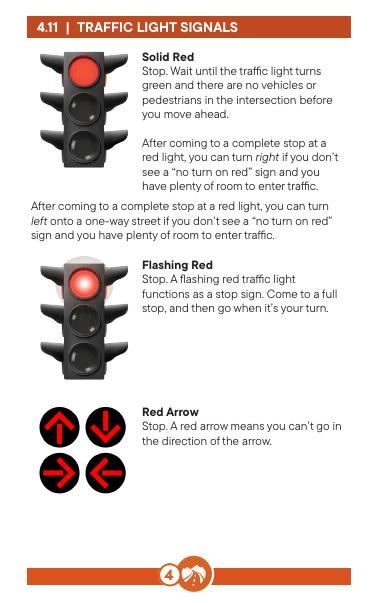
Solid Red
কঠিন লাল
Stop. Wait until the traffic light turns green and there are no vehicles or pedestrians in the intersection before you move ahead.
থামো। ট্রাফিক লাইট সবুজ না হওয়া পর্যন্ত অপেক্ষা করুন এবং আপনি এগিয়ে যাওয়ার আগে চৌরাস্তায় কোনো যানবাহন বা পথচারী নেই।
After coming to a complete stop at a red light, you can turn right if you don’t see a “no turn on red” sign and you have plenty of room to enter traffic.
সম্পূর্ণ থেমে আসার পর ক লাল আলো, আপনি যদি না করেন তবে আপনি ডানদিকে ঘুরতে পারেন একটি "নো টার্ন অন লাল" চিহ্ন দেখুন এবং আপনার কাছে ট্র্যাফিক প্রবেশের জন্য প্রচুর জায়গা রয়েছে।
After coming to a complete stop at a red light, you can turn left onto a one-way street if you don’t see a “no turn on red” sign and you have plenty of room to enter traffic.
একটি লাল আলোতে সম্পূর্ণ স্টপে আসার পরে, আপনি ঘুরতে পারেন একটি একমুখী রাস্তায় ছেড়ে দিন যদি আপনি "লাল চালু না করেন" চিহ্ন দেখতে না পান এবং আপনার কাছে ট্রাফিক প্রবেশের জন্য প্রচুর জায়গা থাকে।
Flashing Red
Stop. A flashing red traffic light functions as a stop sign. Come to a full stop, and then go when it’s your turn.
ফ্ল্যাশিং লাল। থামুন। একটি ঝলকানি লাল ট্রাফিক লাইট স্টপ সাইন হিসাবে কাজ করে। একটি ফুল স্টপে আসুন, এবং তারপরে আপনার পালা হলে যান।
Red Arrow
লাল তীর
Stop. A red arrow means you can’t go in the direction of the arrow.
থামো। একটি লাল তীর মানে আপনি তীরের দিকে যেতে পারবেন না।
Solid Yellow
কঠিন হলুদ
Slow down. This means the light is changing to red. When you see a yellow light, slow down and prepare to stop. If you’re in the intersection when the yellow light comes on, continue through the intersection at the posted speed.
ধীরে ধীরে। এর মানে আলো লাল হয়ে যাচ্ছে। যখন আপনি একটি হলুদ আলো দেখতে পান, তখন ধীর গতিতে যান এবং থামার জন্য প্রস্তুত হন। হলুদ আলো আসার সময় আপনি যদি সংযোগস্থলে থাকেন, পোস্ট করা গতিতে ছেদ দিয়ে চালিয়ে যান।
You are not allowed to accelerate beyond the posted speed limit to enter or clear an intersection when the light is yellow.
আপনি ত্বরান্বিত করার অনুমতি দেওয়া হয় না আলো হলুদ হলে একটি ছেদ প্রবেশ বা পরিষ্কার করার জন্য পোস্ট করা গতি সীমা অতিক্রম করুন।
Flashing Yellow
ঝলকানি হলুদ
Slow down. A flashing yellow light has the same meaning as a yield sign. Treat the intersection as an uncontrolled intersection. Proceed when you have the right-of-way.
ধীরে ধীরে। একটি ঝলকানি হলুদ আলো একটি ফলন চিহ্ন হিসাবে একই অর্থ আছে. ছেদটিকে একটি অনিয়ন্ত্রিত ছেদ হিসাবে বিবেচনা করুন। আপনার যখন সঠিক-পথ আছে তখন এগিয়ে যান।
Yellow Arrow
হলুদ তীর
Slow down. A yellow arrow means the light is going to turn red soon. Prepare to stop and give the right-of-way to oncoming traffic.
ধীরে ধীরে। একটি হলুদ তীর মানে আলো শীঘ্রই লাল হয়ে যাচ্ছে। থামার জন্য প্রস্তুত হন এবং আসন্ন ট্র্যাফিকের ডান-অফ-ওয়ে দিন।
Solid Green
কঠিন সবুজ
Go ahead, but make sure to:
এগিয়ে যান, কিন্তু নিশ্চিত করুন:
When you’re turning left at a green light, yield to approaching vehicles. Oncoming traffic has the right-of-way. Pause in a place that gives you a clear view of approaching traffic, and then safely complete the turn when there is a break in traffic.
আপনি যখন সবুজ আলোতে বাম দিকে বাঁক নিচ্ছেন, তখন কাছে আসতে বলুন যানবাহন আসন্ন ট্রাফিকের সঠিক-পথ আছে। এমন জায়গায় থামুন যা আপনাকে ট্র্যাফিকের কাছাকাছি আসার একটি পরিষ্কার দৃশ্য দেয় এবং তারপরে ট্র্যাফিকের বিরতি থাকলে নিরাপদে বাঁকটি সম্পূর্ণ করুন।
Flashing Green
You won’t see a flashing green light in Washington state. However, you might see them in British Columbia, Canada, as warning that pedestrians are waiting to cross.
ঝলকানি সবুজ। আপনি ওয়াশিংটন রাজ্যে একটি ঝলকানি সবুজ আলো দেখতে পাবেন না। যাইহোক, আপনি তাদের ব্রিটিশ কলাম্বিয়া, কানাডায় দেখতে পারেন, কারণ পথচারীরা পার হওয়ার জন্য অপেক্ষা করছে।
Green Arrow
সবুজ তীর
Go in the direction of the arrow. A green arrow gives you the right-of-way to travel in that direction. There should be no oncoming vehicles, crossing traffic, or pedestrians while the arrow is green.
তীরের দিকে যান। একটি সবুজ তীর আপনাকে সেই দিকে ভ্রমণ করার জন্য ডান-অফ-ওয়ে দেয়। তীরটি সবুজ থাকাকালীন কোনও আগত যানবাহন, ট্র্যাফিক অতিক্রমকারী বা পথচারী থাকা উচিত নয়।
Ramp meters work like regular traffic signals. When the light is red, stop at the white stop line. When the signal turns green, you can continue along the on-ramp.
র্যাম্প মিটার নিয়মিত ট্রাফিক সিগন্যালের মতো কাজ করে। যখন আলো হয় লাল, সাদা স্টপ লাইনে থামুন। সিগন্যাল সবুজ হয়ে গেলে, আপনি অন-র্যাম্প বরাবর চলতে পারেন।
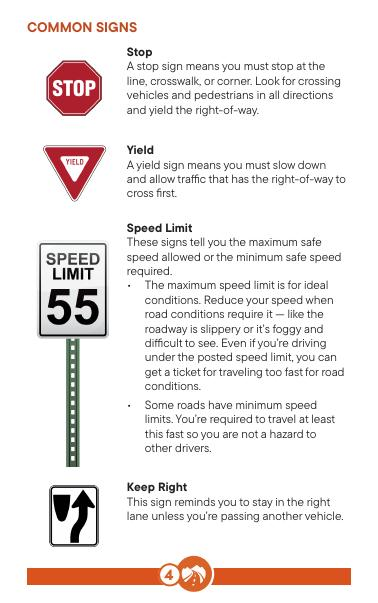
Traffic signs tell you about traffic rules, hazards, roadway directions, and the location of roadway services. The shape and color of these signs, and their symbols and words, give clues to the type of information they provide.
ট্র্যাফিক চিহ্নগুলি আপনাকে ট্রাফিক নিয়ম, বিপদ, রাস্তার দিকনির্দেশ এবং রাস্তা পরিষেবাগুলির অবস্থান সম্পর্কে বলে। এই চিহ্নগুলির আকৃতি এবং রঙ এবং তাদের প্রতীক এবং শব্দগুলি তারা যে ধরনের তথ্য প্রদান করে তার ইঙ্গিত দেয়।
Red Prohibitive or restricted action
লাল নিষিদ্ধ বা সীমাবদ্ধ কর্ম
Orange Construction and maintenance warning Yellow General and unexpected road conditions warning
কমলা নির্মাণ এবং রক্ষণাবেক্ষণ সতর্কতা হলুদ সাধারণ এবং অপ্রত্যাশিত রাস্তার অবস্থার সতর্কতা
Fluorescent
ফ্লুরোসেন্ট
Yellow Green Warning of school, pedestrian, and bicycling activity
স্কুল, পথচারী এবং সাইকেল চালানোর জন্য হলুদ সবুজ সতর্কতা
White Regulatory
সাদা নিয়ন্ত্রক
Green Guide or directional information Blue Motorist services guidance Brown Public recreation, cultural and historical area identification
সবুজ গাইড বা নির্দেশমূলক তথ্য নীল মোটর চালক পরিষেবা নির্দেশিকা ব্রাউন পাবলিক বিনোদন, সাংস্কৃতিক এবং ঐতিহাসিক এলাকা সনাক্তকরণ
COMMON SIGNS
Stop
A stop sign means you must stop at the line, crosswalk, or corner. Look for crossing vehicles and pedestrians in all directions and yield the right-of-way.
Yield
A yield sign means you must slow down and allow traffic that has the right-of-way to cross first.
Speed Limit
These signs tell you the maximum safe speed allowed or the minimum safe speed required.
Keep Right
This sign reminds you to stay in the right lane unless you’re passing another vehicle.
Automated traffic safety cameras These cameras automatically record images if you:
স্বয়ংক্রিয় ট্রাফিক নিরাপত্তা ক্যামেরা এই ক্যামেরাগুলি স্বয়ংক্রিয়ভাবে রেকর্ড করে ছবি যদি আপনি:
All locations with traffic cameras are clearly marked. Speeding tickets from these locations are mailed to the vehicle owner.
ট্রাফিক ক্যামেরা সহ সমস্ত অবস্থান স্পষ্টভাবে চিহ্নিত করা হয়েছে৷ এই স্থানগুলি থেকে দ্রুতগতির টিকিট গাড়ির মালিককে মেল করা হয়।
Speed warning These signs indicate that a speed change is recommended for a potential hazard or road condition (often a curve or turn). Adjust your speed appropriately given all factors (road, weather, traffic, etc.) and follow the speed warning limit.
গতির সতর্কতা এই লক্ষণগুলি নির্দেশ করে যে একটি সম্ভাব্য বিপদ বা রাস্তার অবস্থার জন্য গতি পরিবর্তনের সুপারিশ করা হয় (প্রায়শই একটি বক্ররেখা বা বাঁক)। সমস্ত কারণ (রাস্তা, আবহাওয়া, ট্রাফিক, ইত্যাদি) দেওয়া আপনার গতি যথাযথভাবে সামঞ্জস্য করুন এবং গতির সতর্কতা সীমা অনুসরণ করুন।
Variable speed limit and advanced notification. These digital signs attempt to distribute the flow of traffic by posting changing speed limits. Digital advanced notification signs can also quickly close entire lanes and provide warning information to drivers before they reach slower traffic.
পরিবর্তনশীল গতি সীমা এবং উন্নত বিজ্ঞপ্তিএই ডিজিটাল চিহ্নগুলি পরিবর্তনের গতি সীমা পোস্ট করে ট্রাফিক প্রবাহ বিতরণ করার চেষ্টা করে। ডিজিটাল অ্যাডভান্সড নোটিফিকেশন সাইনগুলিও দ্রুত পুরো লেন বন্ধ করে দিতে পারে এবং ধীরগতিতে ট্র্যাফিক পৌঁছানোর আগে ড্রাইভারদের সতর্কতা তথ্য প্রদান করতে পারে।
One Way
ওয়ান ওয়ে
These signs identify where traffic flows only in the direction of the arrow. Never drive the wrong way on a one-way street.
এই চিহ্নগুলি চিহ্নিত করে যেখানে ট্র্যাফিক শুধুমাত্র তীরের দিকে প্রবাহিত হয়৷ একমুখী রাস্তায় কখনই ভুল পথে গাড়ি চালাবেন না।
Not allowed
Some regulatory signs have a red circle with a red slash over a symbol. These signs indicate certain actions, such as left turns, right turns, or U-turns, are not allowed.
Do Not Enter. A square sign with a white horizontal line inside a circle means you can’t enter the street from that direction.
Wrong Way
This alerts you that you’re driving in the wrong direction and is meant to prevent head-on collisions. Stop and turn around immediately.
No passing and passing safely. These signs tell you where passing isn’t allowed. You might see these signs where there are potential hazards, such as hills, curves, and intersections, and other places a vehicle could enter the roadway. There are also signs and lane markings that tell you when it is safe to pass.
Shared center lane left turn only. This sign indicates where a lane is reserved for left-turning vehicles from either direction and isn’t to be used for through traffic or passing other vehicles. Arrows are often painted on the road.
Roundabout
বৃত্তাকার
These signs mark the entrance to a roundabout. Roundabouts can also have yield, pedestrian warning, and directional arrow signs.
এই চিহ্নগুলি একটি গোলচত্বরে প্রবেশদ্বার চিহ্নিত করে৷ গোলচত্বরে ফলন, পথচারীদের সতর্কতা এবং দিকনির্দেশক তীর চিহ্নও থাকতে পারে।
These construction, maintenance, or emergency operations signs warn you people are working near the roadway. Motorists, pedestrians, and bicyclists must yield to any highway construction personnel, vehicles with flashing yellow lights, or equipment inside a highway construction or maintenance work zone. Fines double for offenses committed while driving in construction areas when workers are present.
এই নির্মাণ, রক্ষণাবেক্ষণ, বা জরুরী অপারেশন চিহ্নগুলি আপনাকে সতর্ক করে যে লোকেরা রাস্তার কাছাকাছি কাজ করছে। মোটর চালক, পথচারী এবং বাইসাইকেল চালকদের অবশ্যই হাইওয়ে নির্মাণের কর্মীদের, ফ্ল্যাশিং হলুদ বাতি সহ যানবাহন বা হাইওয়ে নির্মাণ বা রক্ষণাবেক্ষণের কাজের অঞ্চলের মধ্যে থাকা সরঞ্জামের কাছে দিতে হবে। শ্রমিকরা উপস্থিত থাকার সময় নির্মাণ এলাকায় গাড়ি চালানোর সময় সংঘটিত অপরাধের জন্য দ্বিগুণ জরিমানা।
Service signs show the location of various services, such as hospitals, electric vehicle charging stations, and rest areas.
পরিষেবা চিহ্নগুলি বিভিন্ন পরিষেবার অবস্থান দেখায়, যেমন হাসপাতাল, বৈদ্যুতিক গাড়ির চার্জিং স্টেশন এবং বিশ্রামের এলাকা।
Recreation signs show local attractions, such as hiking trails, picnic spaces, and skiing areas.
বিনোদন লক্ষণ স্থানীয় দেখায় আকর্ষণ, যেমন হাইকিং ট্রেইল, পিকনিক স্পেস এবং স্কিইং এলাকা।
Destination signs show directions and distances to various locations, such as cities, airports, or state lines or special areas such as national parks, historical areas, or museums.
গন্তব্যের চিহ্নগুলি বিভিন্ন স্থানের দিকনির্দেশ এবং দূরত্ব দেখায়, যেমন শহর, বিমানবন্দর, বা রাষ্ট্রীয় লাইন বা বিশেষ এলাকা যেমন জাতীয় উদ্যান, ঐতিহাসিক এলাকা বা জাদুঘর।
The shape and color of route number signs indicate the type of roadway — interstate, U.S., state, city, or county road.
রুট নম্বর চিহ্নের আকৃতি এবং রঙ প্রকার নির্দেশ করে রাস্তার রাস্তা — আন্তঃরাজ্য, মার্কিন যুক্তরাষ্ট্র, রাজ্য, শহর বা কাউন্টি রাস্তা।
City mileage
শহরের মাইলেজ
Optional exit and
ঐচ্ছিক প্রস্থান এবং
exit only
শুধুমাত্র প্রস্থান করুন
Highway signs
হাইওয়ে চিহ্ন
Some, but not all, Washington State signs are shown below.
কিছু, কিন্তু সব নয়, ওয়াশিংটন রাজ্যের লক্ষণ নীচে দেখানো হয়েছে৷
You are responsible for knowing all signs, including city and county signs.
শহর এবং কাউন্টি চিহ্ন সহ সমস্ত লক্ষণ জানার জন্য আপনি দায়ী৷
No turn on red
লাল চালু নেই
Lane use control
লেন ব্যবহার নিয়ন্ত্রণ
Mile marker
মাইল চিহ্নিতকারী
School zone speed limit
স্কুল জোন গতি সীমা
Reduced speed limit ahead
গতি কমে গেছে এগিয়ে সীমা
Railroad intersection
রেলপথ ছেদ
Cross road
ক্রস রোড
Curve
বক্ররেখা
Deer crossing
হরিণ পারাপার
Hill
পাহাড়
Low clearance
কম ক্লিয়ারেন্স
Merge
একত্রিত করুন
Merging traffic
ট্রাফিক মার্জিং
No passing zone
পাসিং জোন নেই
Pedestrian crossing
পথচারী পারাপার
Reversing curves
বক্ররেখা বিপরীত
School crossing
স্কুল ক্রসিং
Side road
পাশের রাস্তা
Signal ahead
Slippery when wet
Soft shoulder
Stop ahead
Sharp turn
Two-way traffic
Added lane (from right, no merging required)
Advance warning bicyclist
Narrow road or bridge ahead
Circular intersection
Curve left 35 mph recommended
Divided highway
(road) begins
Divided highway
(road) ends
Slow moving vehicle
Winding road
Advisory speed
Chain advisory
Light rail
Sharp curve ahead
সামনে তীক্ষ্ণ বক্ররেখা
Railroad crossing
রেলক্রসিং
Traffic direction
ট্রাফিক দিক
Tsunami hazard
সুনামির বিপদ
zone
অঞ্চল
National
জাতীয়
forest
বন
Volcano
আগ্নেয়গিরি
evacuation route
উচ্ছেদ পথ
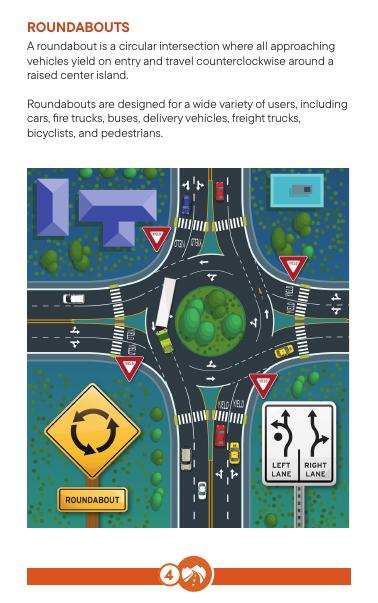
An intersection is any place where two or more roads come together. There are many types of intersections: cross streets, roundabouts, calming circles, side streets, driveways, shopping centers, and parking lot entrances. Every intersection is legally a crosswalk, whether it’s marked or unmarked. Each intersection type requires wise decision making, cautious behavior, and awareness of yourself and others.
একটি ইন্টারসেকশন হল যে কোন জায়গা যেখানে দুই বা ততোধিক রাস্তা আসে একসাথে অনেক ধরনের ইন্টারসেকশন আছে: ক্রস স্ট্রিট, গোলচত্বর, শান্ত চেনাশোনা, পাশের রাস্তা, ড্রাইভওয়ে, শপিং সেন্টার এবং পার্কিং লটের প্রবেশ পথ। প্রতিটি ছেদ আইনত একটি ক্রসওয়াক, তা চিহ্নিত হোক বা অচিহ্নিত হোক। প্রতিটি ছেদ টাইপের জন্য বিজ্ঞ সিদ্ধান্ত গ্রহণ, সতর্ক আচরণ এবং নিজের এবং অন্যদের সচেতনতা প্রয়োজন।
Before you enter an intersection:
আপনি একটি ছেদ প্রবেশ করার আগে:
there isn’t a cyclist, motorcyclist, or pedestrian coming into your path.
আপনার পথে কোন সাইকেল চালক, মোটরসাইকেল চালক বা পথচারী আসছে না।
without blocking the intersection.
ছেদ অবরুদ্ধ ছাড়া.
It’s very important to scan the entire area around an intersection, especially when you are near shopping centers, parking lots, construction areas, busy sidewalks, playgrounds, parks, and schoolyards.
একটি চৌরাস্তার চারপাশের পুরো এলাকাটি স্ক্যান করা খুবই গুরুত্বপূর্ণ, বিশেষ করে যখন আপনি শপিং সেন্টার, পার্কিং লট, নির্মাণ এলাকা, ব্যস্ত ফুটপাথ, খেলার মাঠ, পার্ক এবং স্কুলের উঠোনের কাছাকাছি থাকেন।
Right-of-way
রাইট-অফ-ওয়ে
Right-of-way rules determine the order vehicles move through an intersection. The law determines who must yield (give up) the right-of-way.
রাইট-অফ-ওয়ে নিয়মগুলি একটি চৌরাস্তার মধ্য দিয়ে যানবাহন চলাচলের ক্রম নির্ধারণ করে। আইন নির্ধারণ করে যে কাকে অবশ্যই সঠিক-অধিকার দিতে হবে।
Four-way stop When you approach an intersection controlled by stop signs, the following rules apply:
ফোর-ওয়ে স্টপ যখন আপনি স্টপ চিহ্ন দ্বারা নিয়ন্ত্রিত একটি চৌরাস্তার কাছে যান, নিম্নলিখিত নিয়মগুলি প্রযোজ্য:
Two-way stop Turning vehicles must yield to the vehicle going straight.
দ্বি-মুখী স্টপ বাঁকানো যানবাহনগুলিকে অবশ্যই সরাসরি যেতে থাকা গাড়ির সাথে যুক্ত করতে হবে।
The vehicle going straight has the right-of-way.
যে গাড়িটি সোজা যাচ্ছে তার ডান-অফ-ওয়ে আছে।
Whether turning left or right at an intersection, state law requires you to turn into the lane closest to the direction you are coming from.
একটি মোড়ে বাম বা ডান বাঁক কিনা, রাষ্ট্র আইন আপনি যে দিক থেকে আসছেন তার সবচেয়ে কাছের গলিতে ঘুরতে হবে।
If there is more than one turn lane, stay in your original lane as you turn. Make sure you plan your turns carefully so you don’t veer into another lane while turning.
যদি একাধিক টার্ন লেন থাকে তবে আপনার আসল লেন হিসাবে থাকুন তুমি পালা নিশ্চিত করুন যে আপনি আপনার মোড় সাবধানে পরিকল্পনা করেছেন যাতে আপনি বাঁক নেওয়ার সময় অন্য লেনের দিকে না যান।
Once you complete your turn, you can change to another lane if you need to.
একবার আপনি আপনার পালা শেষ করার পরে, আপনি অন্য লেন পরিবর্তন করতে পারেন যদি আপনার প্রয়োজন হয়।
Put on your turn signal at least 100 feet before you turn left or right across oncoming traffic. Then, look for a safe gap in the traffic. Check the street you’re turning onto to make sure no vehicles, pedestrians, or bicyclists are in or approaching your path.
আসন্ন ট্র্যাফিক জুড়ে বাম বা ডান দিকে মোড় নেওয়ার আগে কমপক্ষে 100 ফুট আগে আপনার টার্ন সিগন্যালটি রাখুন। তারপরে, ট্র্যাফিকের একটি নিরাপদ ফাঁক সন্ধান করুন। কোন যানবাহন, পথচারী বা সাইকেল আরোহীরা আপনার পথে আসছে না বা আসছে কিনা তা নিশ্চিত করতে আপনি যে রাস্তায় ঘুরছেন সেটি পরীক্ষা করুন।
Check behind you for bicyclists and yield to them before making your turn.
সাইকেল আরোহীদের জন্য আপনার পিছনে চেক করুন এবং আপনার পালা করার আগে তাদের ত্যাগ.
Bicyclists might be moving toward you faster than you realize. Be sure you have time to execute the turn safely.
বাইসাইকেল চালকরা হয়তো আপনার ধারণার চেয়ে দ্রুত আপনার দিকে এগিয়ে যাচ্ছে। আপনার কাছে নিরাপদে পালা কার্যকর করার সময় আছে তা নিশ্চিত করুন।
U-turns
ইউ-টার্ন
If you need to turn around, look for signs showing whether or not a U-turn is allowed. You must have clear visibility in all directions before making a U-turn. For that reason, do not make a U-turn on a curve or when approaching the crest of a hill. In Washington, U-turns are generally allowed unless a sign is posted telling you a U-turn is not allowed.
যদি আপনার ঘুরে দাঁড়ানোর প্রয়োজন হয়, তাহলে চিহ্নগুলি দেখুন যে কিনা তা দেখাচ্ছে বা ইউ-টার্ন অনুমোদিত নয়। ইউ-টার্ন করার আগে আপনার অবশ্যই সব দিক থেকে স্পষ্ট দৃশ্যমানতা থাকতে হবে। সেই কারণে, কোনও বাঁকে বা পাহাড়ের চূড়ার কাছে যাওয়ার সময় ইউ-টার্ন করবেন না। ওয়াশিংটনে, সাধারণত ইউ-টার্নের অনুমতি দেওয়া হয়, যদি না একটি সাইন পোস্ট করা হয় যে আপনাকে বলে যে ইউ-টার্ন অনুমোদিত নয়।
Cross IntersectionA cross-intersection is a four-way junction with one or more lanes traveling in each direction. It can be marked with traffic lights, street signs, and/or road markings. Know and apply the right-of-way laws at cross intersections.
ক্রস ইন্টারসেকশনএ ক্রস-ইন্টারসেকশন হল একটি চারমুখী জংশন যার প্রতিটি দিকে এক বা একাধিক লেন ভ্রমণ করে। এটি ট্রাফিক লাইট, রাস্তার চিহ্ন এবং/অথবা রাস্তার চিহ্ন দিয়ে চিহ্নিত করা যেতে পারে। ক্রস ইন্টারসেকশনে রাইট-অফ-ওয়ে আইনগুলি জানুন এবং প্রয়োগ করুন।
T-Intersection
টি-ছেদ
A T-intersection is a three-way junction where a road ends and intersects with a through road. Some T-intersections will have a yield or stop sign to let you know that passing traffic has the right-of-way.
একটি টি-ইন্টারসেকশন হল একটি ত্রিমুখী সংযোগস্থল যেখানে একটি রাস্তা শেষ হয় এবং একটি রাস্তা দিয়ে ছেদ করে। কিছু টি-ইন্টারসেকশনে একটি ফলন বা স্টপ সাইন থাকবে যা আপনাকে জানাতে পারে যে ট্রাফিক পাস করার সঠিক পথ রয়েছে।
Y-Intersection
Y- ছেদ
A Y-intersection is when a minor road connects with more major routes. There might be a stop sign where the minor road connects with the major road. The cars on major roads have the right-of-way.
একটি Y-ছেদ হল যখন একটি ছোট রাস্তা আরও বড় রুটের সাথে সংযোগ করে। একটি স্টপ সাইন থাকতে পারে যেখানে ছোট রাস্তাটি প্রধান রাস্তার সাথে সংযোগ করে। প্রধান সড়কে গাড়ির সঠিক পথ রয়েছে।
Mid-block crossing
মিড-ব্লক ক্রসিং
These are crosswalks in the middle of the roadway. Pedestrians always have the right-of-way in a marked crosswalk.
এগুলি রাস্তার মাঝখানে ক্রসওয়াক। পথচারীদের সবসময় থাকে একটি চিহ্নিত ক্রসওয়াকে ডান-অফ-ওয়ে।
Drivers should stop to allow pedestrians and bicyclists to cross, regardless of whether the crosswalk has a stop sign or not.
পথচারীদের অনুমতি দিতে চালকদের থামতে হবে এবং সাইকেল চালকরা পার হতে পারেন, ক্রসওয়াকের স্টপ সাইন থাকুক বা না থাকুক।
Traffic calming circles
ট্রাফিক শান্ত চেনাশোনা
A traffic calming circle is an intersection with a painted or raised center island that traffic flows counterclockwise around. This type of intersection can have stop or yield signs on all, some, or none of its approaches. They can be found at 4-way, 3-way, or 2-way intersections. Apply the same right-of-way rules as you would at any other intersection.
একটি ট্র্যাফিক শান্ত বৃত্ত হল একটি আঁকা বা উত্থিত কেন্দ্র দ্বীপের সাথে একটি সংযোগস্থল যার চারপাশে ট্রাফিক ঘড়ির কাঁটার বিপরীত দিকে প্রবাহিত হয়। এই ধরনের ছেদ এর সমস্ত, কিছু, বা এর কোনটি পদ্ধতিতে থামার বা ফলন চিহ্ন থাকতে পারে। এগুলি 4-উপায়, 3-উপায়, বা 2-পথের ছেদগুলিতে পাওয়া যেতে পারে। আপনি অন্য কোনো ছেদ-এ যেভাবে ডান-অফ-ওয়ে নিয়মগুলি প্রয়োগ করবেন।
Traffic calming circles are intended for passenger vehicles and may not easily accommodate large vehicles like fire trucks, buses, or delivery trucks. Give larger vehicles plenty of space and be aware that they might have to go clockwise to get through the circle.
ট্র্যাফিক শান্ত করার চেনাশোনাগুলি যাত্রীবাহী যানবাহনের জন্য উদ্দিষ্ট এবং এতে ফায়ার ট্রাক, বাস বা ডেলিভারি ট্রাকের মতো বড় যানবাহন সহজে মিটমাট নাও হতে পারে। বৃহত্তর যানবাহনগুলিকে প্রচুর জায়গা দিন এবং সচেতন থাকুন যে বৃত্তের মধ্য দিয়ে যেতে তাদের ঘড়ির কাঁটার দিকে যেতে হতে পারে।
A roundabout is a circular intersection where all approaching vehicles yield on entry and travel counterclockwise around a raised center island.
একটি গোলচত্বর হল একটি বৃত্তাকার ছেদ যেখানে সমস্ত কাছাকাছি আসছে একটি উত্থিত কেন্দ্র দ্বীপের চারপাশে ঘড়ির কাঁটার বিপরীত দিকে প্রবেশ এবং ভ্রমণের সময় যানবাহন ফলন করে।
Roundabouts are designed for a wide variety of users, including cars, fire trucks, buses, delivery vehicles, freight trucks, bicyclists, and pedestrians.
রাউন্ডঅবাউটগুলি বিভিন্ন ধরণের ব্যবহারকারীর জন্য ডিজাইন করা হয়েছে, সহ গাড়ি, ফায়ার ট্রাক, বাস, ডেলিভারি যানবাহন, মালবাহী ট্রাক, সাইকেল চালক এবং পথচারীরা।
Roundabouts can have a truck apron around the central island. Truck aprons are designed for large vehicles. Give large vehicles plenty of space as they are allowed to cross truck aprons and both lanes as they approach and drive through the intersection.
Roundabouts কেন্দ্রীয় চারপাশে একটি ট্রাক এপ্রোন থাকতে পারে দ্বীপ ট্রাক অ্যাপ্রনগুলি বড় যানবাহনের জন্য ডিজাইন করা হয়েছে। বড় যানবাহনগুলিকে পর্যাপ্ত জায়গা দিন কারণ তারা ট্রাক এপ্রোন এবং উভয় লেন অতিক্রম করার অনুমতি দেয় যখন তারা চৌরাস্তার মধ্য দিয়ে যায় এবং গাড়ি চালায়।
Bicycles can choose to navigate the roundabout as a pedestrian or as a vehicle. When traveling as a vehicle, bicyclists should ride in the middle of the lane to increase their visibility to drivers.
সাইকেল রাউন্ডঅবাউটে নেভিগেট করতে বেছে নিতে পারে a পথচারী বা যানবাহন হিসাবে। যানবাহন হিসাবে ভ্রমণ করার সময়, চালকদের কাছে তাদের দৃশ্যমানতা বাড়াতে সাইকেল চালকদের লেনের মাঝখানে চড়তে হবে।
How to drive a roundabout 1. Slow down when approaching the roundabout.
কিভাবে একটি রাউন্ডঅবাউট ড্রাইভ 1. গোলচত্বরের কাছে যাওয়ার সময় গতি কমিয়ে দিন।
Roundabouts are designed for speeds between 15 and 25 mph.
রাউন্ডঅবাউটগুলি 15 থেকে 25 mph এর মধ্যে গতির জন্য ডিজাইন করা হয়েছে৷
2. Pick a lane as you approach the roundabout. The lane choice sign shows you which lanes are used for right turns, straight through travel, and left turns. Once you pick a lane, stay in that lane until you exit the roundabout.
2. গোলচত্বরের কাছে যাওয়ার সাথে সাথে একটি গলি বেছে নিন। লেন পছন্দ চিহ্ন আপনাকে দেখায় যে কোন লেনগুলি ডান দিকে বাঁক, সরাসরি ভ্রমণের মাধ্যমে এবং বাঁ দিকে মোড়ের জন্য ব্যবহার করা হয়। একবার আপনি একটি গলি বেছে নিলে, যতক্ষণ না আপনি রাউন্ডঅবাউট থেকে বেরিয়ে যান ততক্ষণ সেই লেনেই থাকুন।
3. Stop for pedestrians and bicyclists in crosswalks when you enter and exit the roundabout.
3. আপনি যখন রাউন্ডঅবাউটে প্রবেশ করেন এবং প্রস্থান করেন তখন ক্রসওয়াকগুলিতে পথচারী এবং সাইকেল আরোহীদের জন্য থামুন।
4. Yield to all traffic in the roundabout. Look left and yield to all traffic already in the roundabout since they have the right-of-way. Once you see a gap in traffic, enter the circle and proceed to your exit. Remember to keep a safe distance behind trucks because they need a lot of space and are allowed to use both lanes.
4. গোলচত্বরে সমস্ত ট্রাফিকের জন্য ফলন। বাম দিকে তাকান এবং রাউন্ডঅবাউটে ইতিমধ্যেই সমস্ত ট্রাফিকের দিকে তাকান কারণ তাদের ডান-অফ-ওয়ে আছে৷ একবার আপনি ট্রাফিকের ফাঁক দেখতে পেলে, বৃত্তে প্রবেশ করুন এবং আপনার প্রস্থানের দিকে এগিয়ে যান। ট্রাকগুলির পিছনে একটি নিরাপদ দূরত্ব রাখতে মনে রাখবেন কারণ তাদের অনেক জায়গার প্রয়োজন এবং উভয় লেন ব্যবহার করার অনুমতি রয়েছে৷
5. Enter the roundabout to the right, traveling counterclockwise and staying in your lane.
5. ডানদিকে গোলচত্বরে প্রবেশ করুন, ঘড়ির কাঁটার বিপরীত দিকে ভ্রমণ করুন এবং আপনার লেনে থাকুন।
6. Exit at the street you want.
6. আপনি চান রাস্তায় প্রস্থান করুন.
7. Drive through the roundabout and pull over if an emergency vehicle approaches, just like you would at any other intersection.
7. গোলচত্বরের মধ্য দিয়ে গাড়ি চালান এবং জরুরী যানবাহন কাছে এলে উপরে টেনে নিয়ে যান, ঠিক যেমন আপনি অন্য কোনো মোড়ে যান।
Crossover point
ক্রসওভার পয়েন্ট
Stoplight Intersection
Crossover point
স্টপলাইট ইন্টারসেকশন ক্রসওভার পয়েন্ট
Stoplight Intersection
স্টপলাইট ইন্টারসেকশন
Crossover point
ক্রসওভার পয়েন্ট
Stoplight Intersection
স্টপলাইট ইন্টারসেকশন
Crossover point
ক্রসওভার পয়েন্ট
Stoplight Intersection
স্টপলাইট ইন্টারসেকশন
A diverging diamond is a new type of intersection in Washington. It’s designed so traffic can cross to the other side of the roadway. This might not seem logical because you cross lanes with traffic going in the opposite direction. The intersection allows for vehicles to turn left (on and off freeway ramps) more efficiently. These intersections reduce the number of points where vehicles cross paths, which in turn decreases the risk of collisions. By eliminating left turns against oncoming traffic, diverging diamond intersections improve traffic flow and reduce congestion.
একটি অপসারিত হীরা হল একটি নতুন ধরনের ছেদ ওয়াশিংটন। এটি এমনভাবে ডিজাইন করা হয়েছে যাতে ট্রাফিক রাস্তার অন্য দিকে যেতে পারে। এটি যৌক্তিক মনে নাও হতে পারে কারণ আপনি ট্রাফিকের বিপরীত দিকে যাওয়ার সাথে লেন অতিক্রম করেন। ছেদটি যানবাহনকে আরও দক্ষতার সাথে বাম দিকে (ফ্রিওয়ে র্যাম্প চালু এবং বন্ধ) করার অনুমতি দেয়। এই ইন্টারসেকশনগুলি পয়েন্টের সংখ্যা কমিয়ে দেয় যেখানে যানবাহনগুলি পাথ অতিক্রম করে, যার ফলে সংঘর্ষের ঝুঁকি হ্রাস পায়। আগত ট্র্যাফিকের বিরুদ্ধে বাম দিকের বাঁক দূর করে, হীরার মোড়কে অপসারণ করা ট্রাফিক প্রবাহকে উন্নত করে এবং যানজট কমায়।
What to expect
কি আশা
guided to cross over to the left side of the roadway. This might feel strange initially, as you’ll be driving on the opposite side of the road, but clear markings and signals will guide you.
রাস্তার বাম দিকে অতিক্রম করার জন্য নির্দেশিত। এটি প্রাথমিকভাবে অদ্ভুত মনে হতে পারে, কারণ আপনি রাস্তার বিপরীত দিকে গাড়ি চালাচ্ছেন, তবে পরিষ্কার চিহ্ন এবং সংকেত আপনাকে গাইড করবে।
What to do
কি করতে হবে
Uncontrolled intersections don’t have signs, but the normal right-of-way rules apply. These intersections are typically found on local roads and streets. When you enter an uncontrolled intersection, you must yield the right-of-way if any of these apply:
অনিয়ন্ত্রিত ছেদগুলিতে চিহ্ন নেই, তবে সাধারণ ডান-অফ-ওয়ে নিয়মগুলি প্রযোজ্য। এই ছেদগুলি সাধারণত স্থানীয় রাস্তা এবং রাস্তায় পাওয়া যায়। যখন আপনি একটি অনিয়ন্ত্রিত সংযোগস্থলে প্রবেশ করেন, তখন আপনাকে অবশ্যই সঠিক উপায় প্রদান করতে হবে যদি এইগুলির মধ্যে যেকোনটি প্রযোজ্য হয়:
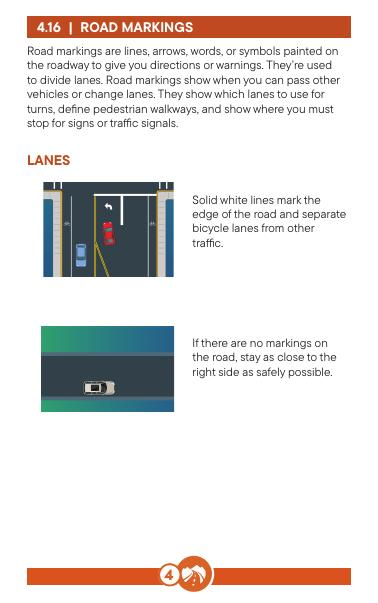
Road markings are lines, arrows, words, or symbols painted on the roadway to give you directions or warnings. They’re used to divide lanes. Road markings show when you can pass other vehicles or change lanes. They show which lanes to use for turns, define pedestrian walkways, and show where you must stop for signs or traffic signals.
রাস্তার চিহ্নগুলি হল লাইন, তীর, শব্দ বা চিহ্ন আঁকা আপনাকে দিকনির্দেশ বা সতর্কতা দেওয়ার রাস্তা। তারা লেন বিভক্ত করতে ব্যবহৃত হয়। রাস্তার চিহ্নগুলি দেখায় যে আপনি কখন অন্য যানবাহন পাস করতে পারেন বা লেন পরিবর্তন করতে পারেন। তারা দেখায় যে বাঁক নেওয়ার জন্য কোন লেন ব্যবহার করতে হবে, পথচারীদের চলার পথ সংজ্ঞায়িত করে এবং আপনাকে দেখায় যে চিহ্ন বা ট্রাফিক সিগন্যালের জন্য আপনাকে কোথায় থামতে হবে।
Solid white lines mark the edge of the road and separate bicycle lanes from other traffic.
কঠিন সাদা লাইনগুলি রাস্তার প্রান্ত চিহ্নিত করে এবং সাইকেল লেনকে অন্যান্য ট্রাফিক থেকে আলাদা করে।
If there are no markings on the road, stay as close to the right side as safely possible.
যদি কোন চিহ্ন না থাকে রাস্তা, যতটা সম্ভব নিরাপদে ডান দিকের কাছাকাছি থাকুন।
White and yellow lines separating travel lanes or marking the center of the road tell you if traffic is traveling in one or two directions.
সাদা এবং হলুদ লাইন বিচ্ছিন্ন ভ্রমণ লেন বা রাস্তার মাঝখানে চিহ্নিত করে আপনাকে বলবে যে ট্রাফিক এক বা দুই দিকে যাচ্ছে কিনা।
Yellow lines separate traffic in opposite directions. White lines separate traffic lanes moving in the same direction.
হলুদ লাইন আলাদা ট্রাফিক বিপরীত দিকে। সাদা রেখাগুলি পৃথক ট্র্যাফিক লেন একই দিকে চলছে।
Shorter dashed white lines mean the lane is ending. You will either need to merge or exit. You can cross dashed lines if it is safe.
ছোট ড্যাশ করা সাদা লাইন মানে লেন শেষ হয়ে যাচ্ছে। আপনাকে হয় মার্জ বা প্রস্থান করতে হবে। আপনি ড্যাশ লাইন অতিক্রম করতে পারেন যদি এটি নিরাপদ হয়.
Medians divide two or more roadways. They can be open spaces, cement dividers, or 18-inch solid yellow pavement markings with stripes. It’s illegal to drive within, over, or across medians.
মিডিয়ান দুই বা ততোধিক রাস্তাকে বিভক্ত করে। সেগুলি খোলা জায়গা, সিমেন্ট ডিভাইডার বা স্ট্রাইপ সহ 18-ইঞ্চি শক্ত হলুদ ফুটপাথ চিহ্ন হতে পারে। মিডিয়ানের মধ্যে, ওভার বা জুড়ে গাড়ি চালানো বেআইনি।
A dashed white line between lanes of traffic means you can cross it to change lanes if it is safe.
মধ্যে একটি ড্যাশ সাদা লাইন ট্রাফিক লেন মানে আপনি পারেন নিরাপদ হলে লেন পরিবর্তন করতে এটি অতিক্রম করুন।
A solid white line means you should stay in your lane unless a special situation requires you to change lanes.
একটি কঠিন সাদা লাইন মানে আপনার লেনেই থাকা উচিত যদি না কোনো বিশেষ পরিস্থিতির জন্য আপনাকে লেন পরিবর্তন করতে হয়।
Double solid white lines are a barrier between lanes. It’s illegal to cross double white lines.
ডবল কঠিন সাদা লাইন হয় লেনের মধ্যে একটি বাধা। ডাবল সাদা লাইন অতিক্রম করা বেআইনি।
A dashed yellow line shows the center of a two-way, two-lane road. If it’s safe, you may use the oncoming lane to pass another vehicle.
একটি ড্যাশ করা হলুদ লাইন দেখায় একটি দ্বিমুখী, দুই লেনের রাস্তার কেন্দ্র। যদি এটি নিরাপদ হয়, তাহলে আপনি অন্য যানবাহন পাশ করার জন্য আসন্ন লেন ব্যবহার করতে পারেন।
A solid yellow line can indicate the edge of the road or a no -passing zone. Do not cross a solid yellow line to pass another vehicle.
একটি কঠিন হলুদ লাইন পারেন রাস্তার প্রান্ত নির্দেশ করুন অথবা একটি নো-পাসিং জোন। করবেন না অন্য যানবাহন পাস করার জন্য একটি কঠিন হলুদ লাইন অতিক্রম করুন।
Double solid yellow centerlines show the middle of a two-way road. You are not allowed to pass, in either direction, on roads with double yellow lines.
ডাবল কঠিন হলুদ কেন্দ্ররেখাগুলি একটি দ্বিমুখী রাস্তার মাঝখানে দেখায়৷ আপনাকে দু'দিকে হলুদ লাইন দিয়ে রাস্তা দিয়ে যাওয়ার অনুমতি নেই।
A solid yellow and a dashed yellow line also show the center of a two-way roadway. You’re not allowed to pass when the solid yellow line is on your side of the road. If the dashed line is on your side of the road, you may pass if it’s safe to do so.
একটি কঠিন হলুদ এবং একটি ড্যাশড হলুদ লাইন এছাড়াও দেখান একটি দ্বিমুখী রাস্তার কেন্দ্র। যখন আপনার রাস্তার পাশে শক্ত হলুদ লাইন থাকে তখন আপনাকে পাস করার অনুমতি দেওয়া হয় না। যদি ড্যাশড লাইনটি আপনার রাস্তার পাশে থাকে, তাহলে এটি করা নিরাপদ হলে আপনি যেতে পারেন।
Turn lanes are usually at major intersections. There are signs and road markings indicating these lanes. Sometimes an arrow signal helps control these lanes. Once you’re in a turn lane, you must follow through with the turn.
টার্ন লেন সাধারণত প্রধান হয় ছেদ এই লেনগুলি নির্দেশ করে চিহ্ন এবং রাস্তার চিহ্ন রয়েছে। কখনও কখনও একটি তীর সংকেত এই লেন নিয়ন্ত্রণ করতে সাহায্য করে। একবার আপনি একটি টার্ন লেনে গেলে, আপনাকে অবশ্যই অনুসরণ করতে হবে পালা দিয়ে মাধ্যমে
You can cross a solid yellow line on your side of the road to get into a center lane. This lane is marked with left turn arrows.
আপনি একটি কঠিন হলুদ অতিক্রম করতে পারেন একটি কেন্দ্রের গলিতে যাওয়ার জন্য আপনার রাস্তার পাশে লাইন করুন। এই লেনটি বাম দিকে বাঁক তীর দিয়ে চিহ্নিত করা হয়েছে।
These shared center lanes are reserved for vehicles making left turns in either direction from or into the roadway (or U-turns when they are permitted).
এই শেয়ার্ড সেন্টার লেন রাস্তা থেকে বা রাস্তার দিকে বাম দিকে বাঁক নেওয়া যানবাহনের জন্য সংরক্ষিত (অথবা যখন অনুমতি দেওয়া হয় তখন ইউ-টার্ন)।
Keep your eyes on traffic coming the other direction because those cars also have the right to use the same turn lane.
অন্য দিকে আসা ট্রাফিক আপনার চোখ রাখুন কারণ সেই গাড়িগুলিরও একই টার্ন লেন ব্যবহার করার অধিকার রয়েছে৷
These lanes must not be used for passing. You shouldn’t travel farther than 300 feet in a center lane.
এই লেনগুলি পাস করার জন্য ব্যবহার করা উচিত নয়। আপনার ভ্রমণ করা উচিত নয় একটি কেন্দ্রের লেনের মধ্যে 300 ফুটের বেশি দূরে।
HOV lanes are reserved for carpools, vanpools, and buses.
HOV লেনগুলি কারপুল, ভ্যানপুল এবং বাসের জন্য সংরক্ষিত।
HOV lanes are identified by the diamond symbol on signs and on the pavement. These lanes are separated from the other lanes on the highway by a solid white line. To travel in an HOV lane, a vehicle must meet the occupancy requirements posted on the signs. Motorcycles are also allowed to use HOV lanes.
HOV লেনগুলি চিহ্ন এবং ফুটপাথের উপর হীরা প্রতীক দ্বারা চিহ্নিত করা হয়। এই লেনগুলিকে একটি কঠিন সাদা রেখা দ্বারা হাইওয়ের অন্যান্য লেন থেকে পৃথক করা হয়েছে। একটি HOV লেনে ভ্রমণ করতে, একটি যানবাহনকে অবশ্যই চিহ্নগুলিতে পোস্ট করা দখলের প্রয়োজনীয়তা পূরণ করতে হবে। মোটরসাইকেলগুলিকেও HOV লেন ব্যবহার করার অনুমতি দেওয়া হয়েছে৷
Reversible lanes, like express lanes, help address traffic congestion by switching the travel direction of one or more lanes when additional capacity is needed. Reversible lanes are typically operated on regular, fixed schedules that reflect daily commuting patterns. They can also be activated for major events or incidents.
বিপরীতমুখী লেন, যেমন এক্সপ্রেস লেন, ট্র্যাফিক মোকাবেলায় সহায়তা করে অতিরিক্ত ক্ষমতার প্রয়োজন হলে এক বা একাধিক লেনের ভ্রমণের দিক পরিবর্তন করে যানজট। বিপরীতমুখী লেনগুলি সাধারণত নিয়মিত, নির্দিষ্ট সময়সূচীতে পরিচালিত হয় যা প্রতিদিনের যাতায়াতের ধরণগুলিকে প্রতিফলিত করে। তারা বড় ঘটনা বা ঘটনার জন্য সক্রিয় হতে পারে।
These lanes are usually marked by double-dashed white lines.
এই লেনগুলি সাধারণত ডবল ড্যাশযুক্ত সাদা লাইন দ্বারা চিহ্নিত করা হয়।
Check with the overhead signs before you start driving in a reversible lane. A green arrow means you can use the lane, and, a red X means you can’t. A steady yellow X means the lane is changing direction, and you should move out of the lane as soon as it’s safe.
আপনি একটি বিপরীত লেনে ড্রাইভিং শুরু করার আগে ওভারহেড চিহ্নগুলি পরীক্ষা করুন৷ একটি সবুজ তীর মানে আপনি লেনটি ব্যবহার করতে পারেন, এবং একটি লাল X মানে আপনি পারবেন না। একটি অবিচলিত হলুদ X এর অর্থ হল লেনটি দিক পরিবর্তন করছে, এবং এটি নিরাপদ হওয়ার সাথে সাথে আপনার লেন থেকে সরে যাওয়া উচিত।
Reserved lanes are identified by signs and/or pavement markings indicating the lane is reserved for special uses. For example, transit lanes are for bus use only.
সংরক্ষিত লেনগুলি চিহ্ন এবং/অথবা ফুটপাথ দ্বারা চিহ্নিত করা হয় চিহ্নগুলি নির্দেশ করে যে লেনটি বিশেষ ব্যবহারের জন্য সংরক্ষিত। উদাহরণস্বরূপ, ট্রানজিট লেন শুধুমাত্র বাস ব্যবহারের জন্য।
Express toll lanes and high occupancy toll lanes provide toll-free express trips for buses, vanpools, carpools, and motorcycles, but they also give individual drivers the option to pay the toll to use the lanes for a faster trip.
এক্সপ্রেস টোল লেন এবং উচ্চ দখলের টোল লেনগুলি বাস, ভ্যানপুল, কারপুল এবং মোটরসাইকেলের জন্য টোল-ফ্রি এক্সপ্রেস ট্রিপ প্রদান করে, তবে তারা দ্রুত ট্রিপের জন্য লেন ব্যবহার করার জন্য পৃথক ড্রাইভারদের টোল পরিশোধ করার বিকল্পও দেয়।
For more information, search toll roads on wsdot.wa.gov .
আরও তথ্যের জন্য, wsdot.wa.gov-এ টোল রোড অনুসন্ধান করুন।
Using a Good To Go! account is the best way to pay tolls in Washington. Good To Go! accounts save you money on every toll road in the state and give you the convenience of automatic payments.
একটি ভাল যেতে ব্যবহার করে! অ্যাকাউন্ট ওয়াশিংটনে টোল পরিশোধের সর্বোত্তম উপায়। যেতে ভালো! অ্যাকাউন্টগুলি রাজ্যের প্রতিটি টোল রোডে আপনার অর্থ সাশ্রয় করে এবং আপনাকে স্বয়ংক্রিয় অর্থ প্রদানের সুবিধা দেয়।
For more information regarding Good To Go! accounts, visit mygoodtogo.com.
গুড টু গো সংক্রান্ত আরও তথ্যের জন্য! হিসাব, mygoodtogo.com দেখুন।
Crosswalks provide a safe way for pedestrians and bicyclists to cross the road. You must yield to people in or about to enter a crosswalk.
ক্রসওয়াক পথচারী এবং সাইকেল আরোহীদের জন্য একটি নিরাপদ উপায় প্রদান করে রাস্তা পার আপনি একটি প্রবেশ করতে বা প্রায় লোকেদের দিতে হবে ক্রসওয়াক
Get in the habit of being alert for pedestrians and bicyclists when you’re crossing an intersection or turning.
পথচারী এবং সাইকেল চালকদের জন্য সতর্ক থাকার অভ্যাস করুন যখন আপনি একটি মোড় বা মোড় অতিক্রম করছেন।
Some crosswalks might also have in-pavement lights that are activated by crossing pedestrians. You must yield when these lights are flashing.
কিছু ক্রসওয়াকের মধ্যে ফুটপাথের আলোও থাকতে পারে পথচারীদের ক্রসিং দ্বারা সক্রিয়. এই লাইট ফ্ল্যাশ হয় যখন আপনি ফলন করা আবশ্যক.
Not all crosswalks are marked! Every intersection is legally defined as a crosswalk regardless of whether a crosswalk marking is present.
সব ক্রসওয়াক চিহ্নিত করা হয় না! প্রতিটি ছেদ আইনত একটি ক্রসওয়াক নির্বিশেষে একটি ক্রসওয়াক হিসাবে সংজ্ঞায়িত করা হয় চিহ্নিত করা আছে।
Bike lanes are marked with solid white lines and bike symbols.
সাইকেল লেন দিয়ে চিহ্নিত করা হয় কঠিন সাদা লাইন এবং সাইকেল প্রতীক।
Some bike lanes are separated from the adjacent travel lane with a buffer consisting of two solid white lines with diagonal crosshatching in between. This buffer is considered part of the bike lane and should not be entered unless you’re making a legal turn after checking that it’s safe to do so.
কিছু বাইকের লেন আছে দুটি কঠিন সাদা রেখা সমন্বিত একটি বাফার সহ সংলগ্ন ট্র্যাভেল লেন থেকে বিচ্ছিন্ন যার মধ্যে তির্যক ক্রসশ্যাচিং রয়েছে। এই বাফারটিকে বাইক লেনের অংশ হিসাবে বিবেচনা করা হয় এবং এটি করা নিরাপদ কিনা তা যাচাই করার পরে আপনি আইনি পালা না করা পর্যন্ত প্রবেশ করা উচিত নয়।
Some bike lanes are physically separated from passing traffic by methods such as bollards, posts, or planters.
কিছু বাইক লেন শারীরিকভাবে ট্র্যাফিক পাস করা থেকে আলাদা করা হয় যেমন বোলার্ড, পোস্ট বা প্ল্যান্টার।
Stop lines appear at a stop sign or signal. You must stop before your vehicle reaches the stop line or crosswalk (if there is one).
স্টপ লাইনগুলি একটি স্টপ সাইন বা সংকেতে উপস্থিত হয়। আপনার গাড়ি স্টপ লাইন বা ক্রসওয়াকে পৌঁছানোর আগে আপনাকে অবশ্যই থামতে হবে (যদি একটি থাকে)।
Fire lanes are usually marked with red stripes or a red curb. Don’t park or stop in fire lanes. In some communities, the road in front of a fire station is marked as a fire lane to keep the path clear for aid vehicles.
ফায়ার লেন সাধারণত চিহ্নিত করা হয় লাল ফিতে বা একটি লাল কার্ব দিয়ে। ফায়ার লেনগুলিতে পার্ক করবেন না বা থামবেন না। কিছু সম্প্রদায়ে, সাহায্যকারী যানবাহনের জন্য পথ পরিষ্কার রাখার জন্য ফায়ার স্টেশনের সামনের রাস্তাটিকে ফায়ার লেন হিসেবে চিহ্নিত করা হয়।
Yellow stripes show where you’re not allowed to drive.
হলুদ ফিতে দেখায় কোথায় আপনাকে গাড়ি চালানোর অনুমতি নেই।
Sharrows are road markings used to indicate a vehicle lane is shared with bicycle traffic.
শ্যারো হল রাস্তার চিহ্ন একটি যানবাহন নির্দেশ করতে ব্যবহৃত হয় লেন সাইকেল ট্রাফিকের সাথে ভাগ করা হয়।
If you see sharrow markings, watch for people riding bikes. Drive slowly and provide at least 3 feet of space when passing.
আপনি যদি সরু চিহ্ন দেখতে পান, বাইক চালানো লোকেদের জন্য দেখুন। ধীর গতিতে চালান এবং পাস করার সময় কমপক্ষে 3 ফুট জায়গা প্রদান করুন।
Bicycles should position themselves in line with the sharrow markings and ride in the direction the arrow is pointing.
সাইকেল অবস্থান করা উচিত সরু চিহ্নগুলির সাথে সঙ্গতি রেখে এবং তীরটি যে দিকে নির্দেশ করছে সেদিকে যাত্রা করুন।
Bicycle boxes
সাইকেলের বাক্স
When the light turns green, bicyclists cross the intersection first and enter the bike lane on the other side of the intersection. You can’t turn right on red near a bicycle box. Stay behind the white line until the bicycle box is clear.
আলো সবুজ হয়ে গেলে, সাইকেল চালকরা প্রথমে চৌরাস্তা অতিক্রম করে এবং মোড়ের অন্য দিকে সাইকেল লেনে প্রবেশ করে। আপনি সাইকেলের বাক্সের কাছে লাল রঙে ডানদিকে ঘুরতে পারবেন না। সাইকেলের বক্স পরিষ্কার না হওয়া পর্যন্ত সাদা লাইনের পিছনে থাকুন।
Bicycles should position themselves in front of vehicles at the intersection.
সাইকেল অবস্থান করা উচিত মোড়ে যানবাহনের সামনে নিজেরাই।
A school zone refers to the roads around a school building or playground. These areas can be marked with signs, pavement markings, and flashing lights.
একটি স্কুল জোন একটি স্কুল ভবন বা খেলার মাঠের চারপাশের রাস্তাগুলিকে বোঝায়। এই এলাকাগুলি চিহ্ন, ফুটপাথ চিহ্ন এবং ঝলকানি আলো দিয়ে চিহ্নিত করা যেতে পারে।
The school zone speed limit is 20 mph because higher speeds increase the risk of fatal crashes. You might see signs that clarify when the 20 mph speed limit applies.
স্কুল জোনের গতিসীমা 20 মাইল প্রতি ঘণ্টা কারণ উচ্চ গতি মারাত্মক দুর্ঘটনার ঝুঁকি বাড়ায়। 20 mph গতি সীমা প্রযোজ্য হলে আপনি লক্ষণগুলি দেখতে পারেন যা স্পষ্ট করে৷
Remember: Students might participate in after-school activities, sports teams, or access the playground after hours. Slow down and watch out when you’re driving near a school. Any effort to reduce the risk for children is worth your time and attention.
মনে রাখবেন: শিক্ষার্থীরা স্কুল-পরবর্তী কার্যক্রমে অংশগ্রহণ করতে পারে, খেলার দল, বা ঘন্টা পরে খেলার মাঠ অ্যাক্সেস. আপনি যখন স্কুলের কাছে গাড়ি চালাচ্ছেন তখন ধীর গতিতে যান এবং লক্ষ্য রাখুন। শিশুদের জন্য ঝুঁকি কমানোর যে কোনো প্রচেষ্টা আপনার সময় এবং মনোযোগের মূল্য।
A work zone is an area where roadwork or construction takes place. It could involve lane closures, detours, and moving equipment.
একটি কাজের অঞ্চল হল এমন একটি এলাকা যেখানে রাস্তার কাজ বা নির্মাণ করা হয়। এটি লেন বন্ধ, detours, এবং চলন্ত যন্ত্রপাতি জড়িত হতে পারে.
Be aware of crew members who work to keep travelers safe while vehicles speed past. Employees in work zones are parents, partners, siblings, and friends who need a safe work environment.
ক্রু সদস্যদের সচেতন থাকুন যারা যানবাহনের গতি অতিক্রম করার সময় যাত্রীদের নিরাপদ রাখতে কাজ করে। কর্মক্ষেত্রের কর্মচারীরা হলেন পিতামাতা, অংশীদার, ভাইবোন এবং বন্ধু যাদের একটি নিরাপদ কাজের পরিবেশ প্রয়োজন।
Please do your part to keep these workers safe.
এই শ্রমিকদের নিরাপদ রাখতে আপনার অংশ করুন.
night, whether you see workers or not.
রাতে, আপনি শ্রমিকদের দেখতে বা না দেখুন।
An emergency zone is created in response to a roadside situation that requires immediate attention. It could be a crash, broken vehicle, or individual in distress. These are situations nobody plans for, and they require care and patience from all road users.
রাস্তার পাশের পরিস্থিতির প্রতিক্রিয়া হিসাবে একটি জরুরী জোন তৈরি করা হয় যার অবিলম্বে মনোযোগ প্রয়োজন। এটি একটি দুর্ঘটনা, ভাঙা যান, বা দুর্দশাগ্রস্ত ব্যক্তি হতে পারে। এগুলি এমন পরিস্থিতি যা কেউ পরিকল্পনা করে না এবং সেগুলির জন্য সমস্ত রাস্তা ব্যবহারকারীদের যত্ন এবং ধৈর্যের প্রয়োজন৷
Emergency zones might involve road flares or signs, but roadside response vehicles will use flashing lights. As soon as you see a roadside response vehicle with flashing lights, you must either:
জরুরী অঞ্চলে রাস্তার অগ্নিশিখা বা চিহ্ন জড়িত থাকতে পারে, কিন্তু রাস্তার ধারে সাড়া জাগানো যানবাহন ফ্ল্যাশিং লাইট ব্যবহার করবে। ফ্ল্যাশিং লাইট সহ রাস্তার ধারে সাড়া জাগানো গাড়ি দেখতে পাওয়ার সাথে সাথে আপনাকে অবশ্যই:
1. Move over into a farther lane.
1. আরও দূরের গলিতে যান।
2. Slow down to at least 10 mph below the posted speed limit. Never drive faster than 50 mph in an emergency zone.
2. পোস্ট করা গতি সীমার নীচে কমপক্ষে 10 মাইল প্রতি ঘণ্টায় ধীর গতিতে। জরুরী অঞ্চলে কখনই ৫০ মাইল প্রতি ঘণ্টার বেশি গতিতে গাড়ি চালাবেন না।
Roadside response vehicles could include tow trucks, solid waste trucks, incident response, highway maintenance, utility vehicles, law enforcement, fire trucks, and ambulances.
রাস্তার পাশের প্রতিক্রিয়ার যানবাহনের মধ্যে টো ট্রাক, কঠিন বর্জ্য ট্রাক, ঘটনার প্রতিক্রিয়া, হাইওয়ে রক্ষণাবেক্ষণ, ইউটিলিটি যানবাহন, আইন প্রয়োগকারী, ফায়ার ট্রাক এবং অ্যাম্বুলেন্স অন্তর্ভুক্ত থাকতে পারে।
Create a safe space for roadside workers as soon as possible.
যত তাড়াতাড়ি সম্ভব রাস্তার পাশে শ্রমিকদের জন্য একটি নিরাপদ স্থান তৈরি করুন।
You can help them while they are there helping others.
তারা সেখানে অন্যদের সাহায্য করার সময় আপনি তাদের সাহায্য করতে পারেন।
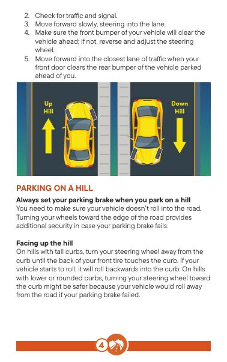
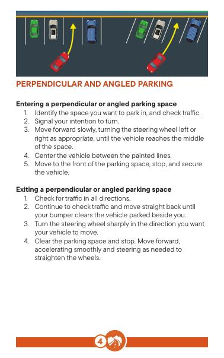
You’re responsible for making sure your parked vehicle isn’t a hazard to others.
আপনার পার্ক করা গাড়িটি অন্যদের জন্য বিপত্তি নয় তা নিশ্চিত করার জন্য আপনি দায়ী।
Make sure to park in designated areas only. Check for signs prohibiting or limiting parking. Colored curb markings can indicate parking restrictions. You’re responsible for making sure your parked vehicle isn’t a hazard to others.
শুধুমাত্র নির্ধারিত এলাকায় পার্কিং নিশ্চিত করুন। লক্ষণ জন্য পরীক্ষা করুন পার্কিং নিষিদ্ধ বা সীমিত করা। রঙিন কার্ব চিহ্ন পার্কিং সীমাবদ্ধতা নির্দেশ করতে পারে। আপনার পার্ক করা গাড়িটি অন্যদের জন্য বিপত্তি নয় তা নিশ্চিত করার জন্য আপনি দায়ী।
Do not park:
পার্ক করবেন না:
of the street.
রাস্তার
emergency).
জরুরী)।
Signs or painted curbs might indicate other parking restrictions:
চিহ্ন বা আঁকা কার্ব অন্যান্য পার্কিং বিধিনিষেধ নির্দেশ করতে পারে:
Set your parking brake Always set your parking brake, especially on a hill.
আপনার পার্কিং ব্রেক সেট করুন সর্বদা আপনার পার্কিং ব্রেক সেট করুন, বিশেষ করে একটি পাহাড়ে।
Check traffic before you open your door
আপনার দরজা খোলার আগে ট্রাফিক পরীক্ষা করুন
Never leave children or animals unattended in a parked vehicle.
শিশু বা পশুদের ছেড়ে যাবেন না একটি পার্ক করা যানবাহনে অনুপস্থিত।
Ensure adults, children, and animals properly exit the vehicle
প্রাপ্তবয়স্ক, শিশু এবং প্রাণীদের সঠিকভাবে প্রস্থান নিশ্চিত করুন যানবাহন
Take your keys and lock your door. Locking your door prevents theft and protects your vehicle against unwanted intruders.
আপনার চাবি নিন এবং আপনার দরজা লক করুন আপনার দরজা লক করা চুরি প্রতিরোধ করে এবং আপনার গাড়িকে অবাঞ্ছিত অনুপ্রবেশকারীদের থেকে রক্ষা করে।
Entering a perpendicular or angled parking space 1. Identify the space you want to park in, and check traffic.
একটি লম্ব বা কোণীয় পার্কিং স্থান প্রবেশ করানো 1. আপনি যে স্থানটিতে পার্ক করতে চান তা চিহ্নিত করুন এবং ট্রাফিক পরীক্ষা করুন৷
2. Signal your intention to turn.
2. ঘুরতে আপনার অভিপ্রায় সংকেত.
3. Move forward slowly, turning the steering wheel left or right as appropriate, until the vehicle reaches the middle of the space.
3. স্টিয়ারিং হুইল বাম দিকে বাঁকিয়ে ধীরে ধীরে এগিয়ে যান যতক্ষণ না গাড়িটি স্থানের মাঝখানে পৌঁছায় ততক্ষণ পর্যন্ত উপযুক্ত।
4. Center the vehicle between the painted lines.
4. আঁকা লাইনের মধ্যে যানবাহন কেন্দ্রে.
5. Move to the front of the parking space, stop, and secure the vehicle.
5. পার্কিং স্পেসের সামনে যান, থামুন এবং গাড়িটিকে সুরক্ষিত করুন।
Exiting a perpendicular or angled parking space 1. Check for traffic in all directions.
একটি লম্ব বা কোণীয় পার্কিং স্থান থেকে প্রস্থান করা 1. সব দিক থেকে ট্রাফিক পরীক্ষা করুন.
2. Continue to check traffic and move straight back until your bumper clears the vehicle parked beside you.
2. ট্র্যাফিক পরীক্ষা করা চালিয়ে যান এবং আপনার বাম্পার আপনার পাশে পার্ক করা গাড়িটি পরিষ্কার না করা পর্যন্ত সোজা ফিরে যান।
3. Turn the steering wheel sharply in the direction you want your vehicle to move.
3. স্টিয়ারিং হুইলটিকে তীক্ষ্ণভাবে ঘোরান যে দিকে আপনি আপনার গাড়িটি সরাতে চান৷
4. Clear the parking space and stop. Move forward, accelerating smoothly and steering as needed to straighten the wheels.
4. পার্কিং স্থান সাফ করুন এবং থামুন। এগিয়ে যান, মসৃণভাবে ত্বরান্বিত করুন এবং চাকা সোজা করার জন্য প্রয়োজন অনুসারে স্টিয়ারিং করুন।
Entering a parallel parking space 1. Identify the space where you’ll park, check traffic, and signal.
একটি সমান্তরাল পার্কিং স্থান প্রবেশ 1. আপনি যে জায়গাটি পার্ক করবেন, ট্রাফিক চেক করবেন এবং সংকেত
2. Reverse and look in the direction the vehicle will be moving.
2. উল্টে যান এবং গাড়িটি যে দিকে যাচ্ছে সেদিকে তাকান।
3. Back slowly until your front bumper is in line with the rear bumper of the vehicle you’re parking behind.
3. আপনার সামনের বাম্পার আপনি যে গাড়ির পিছনে পার্কিং করছেন তার পিছনের বাম্পারের সাথে সামঞ্জস্য না হওয়া পর্যন্ত ধীরে ধীরে পিছনে যান।
4. Turn your steering wheel sharply and back slowly into the space.
4. আপনার স্টিয়ারিং হুইলকে তীক্ষ্ণভাবে ঘুরান এবং ধীরে ধীরে স্থানটিতে ফিরে যান।
5. Turn the steering wheel rapidly to center the vehicle into the space.
5. গাড়িটিকে স্থানের মধ্যে কেন্দ্রীভূত করতে দ্রুত স্টিয়ারিং হুইলটি ঘুরিয়ে দিন।
6. Stop before touching the bumper of the vehicle behind you.
6. আপনার পিছনের গাড়ির বাম্পার স্পর্শ করার আগে থামুন।
7. Move forward to adjust your vehicle in the parking space. Make sure your vehicle is no more than 12 inches from the curb.
7. পার্কিং স্পেসে আপনার গাড়ি সামঞ্জস্য করতে এগিয়ে যান। নিশ্চিত করুন যে আপনার গাড়িটি কার্ব থেকে 12 ইঞ্চির বেশি না হয়।
Exiting a parallel parking space 1. Check traffic in all directions, place your foot on the brake, shift to reverse, and move backward as much as possible toward the vehicle behind you.
একটি সমান্তরাল পার্কিং স্থান থেকে প্রস্থান করা হচ্ছে 1. সমস্ত দিক থেকে ট্র্যাফিক পরীক্ষা করুন, আপনার পা ব্রেক এর উপর রাখুন, বিপরীত দিকে সরান, এবং আপনার পিছনের গাড়ির দিকে যতটা সম্ভব পিছনে যান।
2. Check for traffic and signal.
2. ট্রাফিক এবং সিগন্যাল চেক করুন।
3. Move forward slowly, steering into the lane.
3. লেনে স্টিয়ারিং করে ধীরে ধীরে এগিয়ে যান।
4. Make sure the front bumper of your vehicle will clear the vehicle ahead; if not, reverse and adjust the steering wheel.
4. নিশ্চিত করুন যে আপনার গাড়ির সামনের বাম্পারটি পরিষ্কার হবে সামনে গাড়ি; যদি না হয়, স্টিয়ারিং হুইল বিপরীত এবং সামঞ্জস্য করুন।
5. Move forward into the closest lane of traffic when your front door clears the rear bumper of the vehicle parked ahead of you.
5. যখন আপনার সামনের দরজা আপনার সামনে পার্ক করা গাড়ির পিছনের বাম্পারটি পরিষ্কার করে তখন ট্র্যাফিকের সবচেয়ে কাছের লেনে এগিয়ে যান৷
Always set your parking brake when you park on a hill You need to make sure your vehicle doesn’t roll into the road. Turning your wheels toward the edge of the road provides additional security in case your parking brake fails.
আপনি যখন পাহাড়ে পার্ক করবেন তখন সর্বদা আপনার পার্কিং ব্রেক সেট করুন আপনাকে নিশ্চিত করতে হবে যে আপনার গাড়িটি রাস্তার মধ্যে গড়াচ্ছে না। আপনার চাকাগুলিকে রাস্তার প্রান্তের দিকে ঘুরিয়ে দেওয়া আপনার পার্কিং ব্রেক ব্যর্থ হলে অতিরিক্ত নিরাপত্তা প্রদান করে।
Facing up the hill
পাহাড়ের দিকে মুখ করে
On hills with tall curbs, turn your steering wheel away from the curb until the back of your front tire touches the curb. If your vehicle starts to roll, it will roll backwards into the curb. On hills with lower or rounded curbs, turning your steering wheel toward the curb might be safer because your vehicle would roll away from the road if your parking brake failed.
লম্বা কার্ব সহ পাহাড়ে, আপনার স্টিয়ারিং হুইলটি কার্ব থেকে দূরে ঘুরিয়ে দিন যতক্ষণ না আপনার সামনের টায়ারের পিছনে কার্ব স্পর্শ করে। যদি আপনার গাড়িটি রোল হতে শুরু করে, তাহলে এটি ক্রবের মধ্যে পিছনের দিকে গড়িয়ে যাবে। নিচু বা বৃত্তাকার কার্ব সহ পাহাড়ে, আপনার স্টিয়ারিং হুইলকে কার্বের দিকে ঘুরানো নিরাপদ হতে পারে কারণ আপনার পার্কিং ব্রেক ব্যর্থ হলে আপনার গাড়িটি রাস্তা থেকে সরে যাবে।
Facing down the hill
পাহাড়ের নিচে মুখ করে
Turn your steering wheel toward the curb until the front of your front tire touches the curb. If your vehicle starts to roll, it will roll forward into the curb.
আপনার স্টিয়ারিং হুইলটিকে কার্বের দিকে ঘুরিয়ে দিন যতক্ষণ না আপনার সামনের টায়ারের সামনের অংশটি কার্ব স্পর্শ করে। যদি আপনার গাড়িটি রোল করা শুরু করে, তবে এটি ক্রবের দিকে এগিয়ে যাবে।
If there is no curb
যদি কোন বাধা না থাকে
Turn your steering wheel and tires toward the edge of the road. This way, if your vehicle starts to roll, it will roll away from traffic.
আপনার স্টিয়ারিং হুইল এবং টায়ারগুলিকে রাস্তার প্রান্তের দিকে ঘুরিয়ে দিন। এইভাবে, যদি আপনার গাড়িটি ঘুরতে শুরু করে তবে এটি ট্র্যাফিক থেকে দূরে সরে যাবে।
Some parking spots are reserved for vehicles with disabled parking plates or a disabled parking placard. The white stripes next to a reserved space, called an access aisle, must be kept clear. You can be fined for parking in stalls without displaying the required placard and/or for blocking the access aisle.
কিছু পার্কিং স্পট অক্ষম পার্কিং প্লেট বা অক্ষম পার্কিং প্ল্যাকার্ড সহ যানবাহনের জন্য সংরক্ষিত। একটি সংরক্ষিত স্থানের পাশের সাদা ডোরা, যাকে অ্যাক্সেস আইল বলা হয়, অবশ্যই পরিষ্কার রাখতে হবে। প্রয়োজনীয় প্ল্যাকার্ড প্রদর্শন না করে স্টলে পার্কিং করার জন্য এবং/অথবা অ্যাক্সেস আইল ব্লক করার জন্য আপনাকে জরিমানা করা যেতে পারে।
If you have a disability that limits or impairs your ability to walk, you may apply for temporary or permanent disabled parking privileges.
যদি আপনি একটি অক্ষমতা আছে যে সীমা বা আপনার হাঁটার ক্ষমতা ব্যাহত করে, আপনি অস্থায়ী বা স্থায়ী অক্ষম পার্কিং সুবিধার জন্য আবেদন করতে পারেন।
Do not hang the parking placard from your rearview mirror while you’re driving because it will obstruct your view.
আপনার রিয়ারভিউ মিরর থেকে পার্কিং প্ল্যাকার্ড ঝুলিয়ে রাখবেন না আপনি গাড়ি চালাচ্ছেন কারণ এটি আপনার দৃষ্টিভঙ্গিতে বাধা দেবে।
To apply, you and your physician must complete the Disabled Parking Application for Individuals form, available at dol.wa.gov .
আবেদন করার জন্য, আপনাকে এবং আপনার চিকিত্সককে অবশ্যই প্রতিবন্ধী সম্পূর্ণ করতে হবে ব্যক্তিদের জন্য পার্কিং আবেদন ফর্ম, dol.wa.gov এ উপলব্ধ।
ELECTRIC VEHICLE CHARGING STATION PARKING It’s illegal to park a vehicle in any electric vehicle charging station if the vehicle is not connected to the charging equipment.
বৈদ্যুতিক যানবাহন চার্জিং স্টেশন পার্কিং যে কোনো জায়গায় গাড়ি পার্কিং করা বেআইনি বৈদ্যুতিক গাড়ির চার্জিং স্টেশন যদি গাড়িটি চার্জিং সরঞ্জামের সাথে সংযুক্ত না থাকে।
If you’re towing anything, like a boat, trailer, or camper, you’re responsible for following all manufacturers’ agreements, state laws, and federal standards. You need to know and follow all guidelines regarding:
আপনি যদি নৌকা, ট্রেলার বা ক্যাম্পারের মতো কিছু টেনে নিয়ে যান, তাহলে আপনি সমস্ত নির্মাতার চুক্তি, রাষ্ট্রীয় আইন এবং ফেডারেল মান অনুসরণ করার জন্য দায়ী। আপনাকে এই সংক্রান্ত সমস্ত নির্দেশিকা জানতে এবং অনুসরণ করতে হবে:
SECURE YOUR LOAD
Driving with an unsecured load is both against the law and
extremely dangerous. Secure your load so loose items don’t release into the air or slide, shift, or fall onto the road and cause a crash.
To secure the load in your vehicle or trailer:
and securely carry.
ANIMALS
Washington State Ferries, sometimes referred to as the state’s marine highway system, are part of Washington’s highway network. As part of that network, all rules of the road apply.
ওয়াশিংটন স্টেট ফেরি, কখনও কখনও রাজ্যের হিসাবে উল্লেখ করা হয় সামুদ্রিক হাইওয়ে সিস্টেম, ওয়াশিংটনের হাইওয়ে নেটওয়ার্কের অংশ। সেই নেটওয়ার্কের অংশ হিসাবে, রাস্তার সমস্ত নিয়ম প্রযোজ্য৷
As you approach the ferry terminal, you might see signs directing you into a designated ferry lane. Pull up behind other vehicles already in line. Ferry line-cutting is a traffic offense that can lead to a fine. If you’re in a ferry holding lane in a residential area, please don’t block residential driveways or intersections.
আপনি ফেরি টার্মিনালের কাছে যাওয়ার সাথে সাথে আপনি লক্ষণগুলি দেখতে পাবেন আপনাকে একটি মনোনীত ফেরি লেনের দিকে নিয়ে যাচ্ছে। ইতিমধ্যে লাইনে থাকা অন্যান্য যানবাহনের পিছনে টানুন। ফেরি লাইন কাটা একটি ট্রাফিক অপরাধ যা জরিমানা হতে পারে। আপনি যদি আবাসিক এলাকায় ফেরি হোল্ডিং লেনে থাকেন, তাহলে অনুগ্রহ করে আবাসিক ড্রাইভওয়ে বা চৌরাস্তা ব্লক করবেন না।
Bicyclists receive priority loading on most ferries and have a bicycle waiting area in front of motor vehicles. Bicyclists can proceed past vehicles waiting in the ferry holding lane. For more information about the Washington State Ferries system, or for fares and schedules, please visit wsdot.wa.gov and search for ferries.
বাইসাইকেল চালকরা বেশিরভাগ ফেরিতে অগ্রাধিকার লোডিং পান এবং একটি থাকে মোটর গাড়ির সামনে সাইকেল অপেক্ষা এলাকা. সাইকেল চালকরা ফেরি হোল্ডিং লেনে অপেক্ষারত যানবাহনগুলির পাশ দিয়ে এগিয়ে যেতে পারেন। ওয়াশিংটন স্টেট ফেরি সিস্টেম সম্পর্কে আরও তথ্যের জন্য, বা ভাড়া এবং সময়সূচীর জন্য, অনুগ্রহ করে wsdot.wa.gov এ যান এবং অনুসন্ধান করুন ফেরির জন্য।
Driving is allowed on ocean beaches only in Grays Harbor and Pacific counties. The beach is considered a state highway, so all driving laws apply. The speed limit is 25 mph, and pedestrians and bicyclists have the right-of-way at all times.
শুধুমাত্র গ্রেস হারবার এবং প্যাসিফিক কাউন্টিতে সমুদ্র সৈকতে ড্রাইভিং অনুমোদিত। সৈকতটিকে একটি রাষ্ট্রীয় মহাসড়ক হিসাবে বিবেচনা করা হয়, তাই সমস্ত ড্রাইভিং আইন প্রযোজ্য। গতি সীমা 25 মাইল প্রতি ঘন্টা, এবং পথচারী এবং সাইকেল আরোহীদের সর্বদা সঠিক-পথ রয়েছে।
You may enter the beach with your vehicle only through marked beach approaches and drive only on hard-packed sand. Watch for signs prohibiting beach driving in some areas and circumstances.
আপনি শুধুমাত্র চিহ্নিত মাধ্যমে আপনার গাড়ির সঙ্গে সৈকত প্রবেশ করতে পারেন সৈকত কাছে আসে এবং শুধুমাত্র হার্ড-প্যাকড বালিতে গাড়ি চালায়। কিছু এলাকা এবং পরিস্থিতিতে সৈকতে গাড়ি চালানো নিষিদ্ধ করার লক্ষণগুলির জন্য দেখুন।
TAB TABMONTHWASHINGTON dol.wa.gov. CHAPTER 5 risks
ট্যাব ট্যাবমন্ট ওয়াশিংটন dol.wa.gov অধ্যায় 5 ঝুঁকি
5
/gid01146
You know there are serious risks and consequences to driving.
আপনি জানেন যে গাড়ি চালানোর জন্য গুরুতর ঝুঁকি এবং পরিণতি রয়েছে৷
You will make mistakes, and those around you will make mistakes. Even though risk is always present, driving safely can reduce crash potential.
আপনি ভুল করবেন, এবং আপনার চারপাশে যারা ভুল করবে। যদিও ঝুঁকি সবসময় থাকে, নিরাপদে গাড়ি চালানো দুর্ঘটনার সম্ভাবনা কমাতে পারে।
Navigating risk involves being aware, predictable, smooth, and proficient behind the wheel. To drive well and without incidents, you need to intentionally develop and use safe driving habits as your default driving style.
ঝুঁকি নেভিগেট করা জড়িত সচেতন, অনুমানযোগ্য, মসৃণ, এবং চাকা পিছনে দক্ষ. ভালভাবে এবং ঘটনা ছাড়াই গাড়ি চালানোর জন্য, আপনাকে ইচ্ছাকৃতভাবে আপনার ডিফল্ট ড্রাইভিং শৈলী হিসাবে নিরাপদ ড্রাইভিং অভ্যাস গড়ে তুলতে হবে এবং ব্যবহার করতে হবে।
Fatal crash common factors
মারাত্মক ক্র্যাশ সাধারণ কারণ
*In Washington, v ehicle crashes are a leading causes of death for people ages 16 to 25. This age group is more susceptible to fatal and serious injury crashes.
*ওয়াশিংটনে, ভি ইহিকল ক্র্যাশ মৃত্যুর একটি প্রধান কারণ 16 থেকে 25 বছর বয়সী লোকেদের জন্য। এই বয়সের গ্রুপটি বেশি সংবেদনশীল মারাত্মক এবং গুরুতর আঘাত ক্র্যাশ.
Risk awareness is your ability to identify present and potential hazards on the road. It helps you be aware of things that might require you to change your behavior to avoid a crash. Risk awareness includes being mindful of other road users, weather conditions, and potential distractions.
ঝুঁকি সচেতনতা হল আপনার রাস্তায় বর্তমান এবং সম্ভাব্য বিপদ সনাক্ত করার ক্ষমতা। এটি আপনাকে এমন জিনিস সম্পর্কে সচেতন হতে সাহায্য করে যেগুলির জন্য আপনাকে ক্র্যাশ এড়াতে আপনার আচরণ পরিবর্তন করতে হবে। ঝুঁকি সচেতনতার মধ্যে রয়েছে রাস্তার অন্যান্য ব্যবহারকারী, আবহাওয়ার পরিস্থিতি এবং সম্ভাব্য বিভ্রান্তি সম্পর্কে সচেতন হওয়া।
Risk awareness relies on understanding what is happening around you and what may happen next.
ঝুঁকি সচেতনতা কি ঘটছে তা বোঝার উপর নির্ভর করে আপনার চারপাশে এবং পরবর্তী কি হতে পারে।
happening on the road ahead.
সামনের রাস্তায় ঘটছে।
It’s impossible to remove risk completely. However, you can learn how to avoid or minimize risks by identifying them and then adjusting your driving appropriately.
ঝুঁকি সম্পূর্ণরূপে অপসারণ করা অসম্ভব। যাইহোক, আপনি কীভাবে ঝুঁকিগুলিকে এড়াতে বা হ্রাস করতে পারেন তা শনাক্ত করে এবং তারপরে আপনার ড্রাইভিং যথাযথভাবে সামঞ্জস্য করে শিখতে পারেন।
Hazard perception is your ability to scan for potential risks on the road and to identify them before they become a problem. This skill is important for safe driving and helps prevent crashes. Hazard perception requires:
বিপদ উপলব্ধি হল আপনার রাস্তায় সম্ভাব্য ঝুঁকির জন্য স্ক্যান করার এবং সমস্যা হওয়ার আগে সেগুলি শনাক্ত করার ক্ষমতা। এই দক্ষতা নিরাপদ ড্রাইভিং এর জন্য গুরুত্বপূর্ণ এবং ক্র্যাশ প্রতিরোধ করতে সাহায্য করে। বিপদ উপলব্ধি প্রয়োজন:
A hazard is anything that requires you to make a change. When you’re behind the wheel, you should always be looking for hazards or responding to them.
একটি বিপত্তি এমন কিছু যা আপনাকে পরিবর্তন করতে হবে। আপনি যখন চাকার পিছনে থাকেন, তখন আপনার উচিত সবসময় বিপদের খোঁজ করা বা সেগুলির প্রতি সাড়া দেওয়া।
A hazard might require you to change your speed or direction.
একটি বিপদের জন্য আপনাকে আপনার গতি বা দিক পরিবর্তন করতে হতে পারে।
Drive slower when approaching hazards to give yourself more space time to make safe decisions.
নিরাপদ সিদ্ধান্ত নেওয়ার জন্য নিজেকে আরও জায়গা দেওয়ার জন্য বিপদের কাছে যাওয়ার সময় ধীর গতিতে গাড়ি চালান।
Situational awareness is observing what is happening all around you and predicting what you should prepare for next. You should do this constantly.
পরিস্থিতিগত সচেতনতা চারদিকে কী ঘটছে তা পর্যবেক্ষণ করছে আপনি এবং আপনি পরবর্তী জন্য কি প্রস্তুত করা উচিত ভবিষ্যদ্বাণী. আপনার এটি ক্রমাগত করা উচিত।
You need to know who might be affected by your actions and who needs to know your intentions. The drivers behind you could be the most affected by your decisions.
আপনাকে জানতে হবে কে আপনার কর্ম দ্বারা প্রভাবিত হতে পারে এবং যাদের আপনার উদ্দেশ্য জানতে হবে। আপনার পিছনের চালকরা আপনার সিদ্ধান্ত দ্বারা সবচেয়ে বেশি প্রভাবিত হতে পারে।
You will encounter an unlimited number of situations on the road. It would be difficult to predict or have a plan for each one. Instead, you should develop a reliable routine for responding to hazards that requires you to:
আপনি রাস্তায় সীমাহীন সংখ্যক পরিস্থিতির সম্মুখীন হবেন। এটা ভবিষ্যদ্বাণী করা কঠিন হবে বা প্রতিটি জন্য একটি পরিকল্পনা আছে. পরিবর্তে, আপনার প্রয়োজন এমন বিপদগুলির প্রতিক্রিয়া জানার জন্য একটি নির্ভরযোগ্য রুটিন তৈরি করা উচিত:
Even if you’re in a hurry, the risks of speeding are not worth it. Speeding puts everyone on the road in danger. Follow the posted speed limit to protect yourself, the people who care about you, and the other individuals and families sharing the road with you.
এমনকি যদি আপনি তাড়াহুড়ো করেন তবে দ্রুত গতির ঝুঁকি মূল্যহীন এটা দ্রুত গতির কারণে রাস্তায় থাকা সবাইকে বিপদে ফেলে দেয়। নিজেকে, আপনার যত্ন নেওয়া লোকেদের এবং আপনার সাথে রাস্তা ভাগ করে নেওয়া অন্যান্য ব্যক্তি এবং পরিবারগুলিকে রক্ষা করতে পোস্ট করা গতি সীমা অনুসরণ করুন৷
Following the posted speed limit is about more than following the law. Even if you’re in a hurry, the risks of speeding are not worth it. Speeding puts everyone on the road in danger. Prioritize safety and drive at a speed that allows you to maintain control and react to hazards.
পোস্ট করা স্পিড লিমিট ফলো করার চেয়ে প্রায় বেশি আইন এমনকি যদি আপনি তাড়াহুড়ো করেন তবে দ্রুত গতির ঝুঁকিগুলি মূল্য নয়। দ্রুত গতির কারণে রাস্তায় থাকা সবাইকে বিপদে ফেলে দেয়। নিরাপত্তাকে অগ্রাধিকার দিন এবং এমন গতিতে গাড়ি চালান যা আপনাকে নিয়ন্ত্রণ বজায় রাখতে এবং বিপদের প্রতি প্রতিক্রিয়া জানাতে দেয়।
Driving over the speed limit could harm your car, other people, and you. Excessive speeds can:
গতির সীমা ছাড়িয়ে গাড়ি চালানো আপনার গাড়ি, অন্য লোকেদের এবং আপনার ক্ষতি করতে পারে৷ অত্যধিক গতি হতে পারে:
you drive, the less time you have to scan the road ahead for potential dangers, like pedestrians, cyclists, or other vehicles.
আপনি গাড়ি চালান, পথচারী, সাইকেল আরোহী বা অন্যান্য যানবাহনের মতো সম্ভাব্য বিপদের জন্য আপনাকে সামনের রাস্তা স্ক্যান করতে যত কম সময় লাগবে।
make it harder to control your vehicle, especially in adverse conditions like rain or snow. This can lead to skidding or losing control entirely.
আপনার গাড়ি নিয়ন্ত্রণ করা কঠিন করে তুলুন, বিশেষ করে বৃষ্টি বা তুষারপাতের মতো প্রতিকূল পরিস্থিতিতে। এটি স্কিডিং বা সম্পূর্ণ নিয়ন্ত্রণ হারাতে পারে।
The force of impact in a crash increases with speed, leading to more severe injuries or fatalities.
দুর্ঘটনায় প্রভাবের শক্তি গতির সাথে বৃদ্ধি পায়, যার ফলে আরও গুরুতর আঘাত বা প্রাণহানির ঘটনা ঘটে।
Speed limits indicate the maximum speed legal under ideal conditions. Washington law also requires you to drive at speeds that are safe for current road conditions. This means reducing your speed when conditions are poor. You can drive below the speed limit, but exceeding it is illegal.
গতির সীমা আদর্শ অবস্থার অধীনে সর্বোচ্চ গতি আইনগত নির্দেশ করে। ওয়াশিংটন আইন আপনাকে এমন গতিতে গাড়ি চালাতে হবে যা বর্তমান রাস্তার অবস্থার জন্য নিরাপদ। এর মানে যখন অবস্থা খারাপ হয় তখন আপনার গতি কমানো। আপনি গতি সীমার নীচে গাড়ি চালাতে পারেন, তবে এটি অতিক্রম করা বেআইনি।
You’re responsible for always driving at a safe speed, regardless of the posted limit.
আপনি সবসময় নিরাপদে গাড়ি চালানোর জন্য দায়ী গতি, পোস্ট করা সীমা নির্বিশেষে।
ADJUSTING SPEED FOR CONDITIONS Speeding is a dangerous and unnecessary risk. Arriving late is better than not arriving at all. Reduce your speed in conditions like the following:
অবস্থার জন্য গতি সামঞ্জস্য করা গতি একটি বিপজ্জনক এবং অপ্রয়োজনীয় ঝুঁকি। দেরিতে পৌঁছানো একেবারেই না আসার চেয়ে ভালো। নিম্নলিখিতগুলির মতো অবস্থায় আপনার গতি হ্রাস করুন:
Judging space when you’re driving is a valuable skill. It can take time and practice before you’re proficient, which is why novice drivers are at a greater risk. You can judge space by distance or time, but you need to constantly evaluate your position on the road. Try to keep plenty of space around you as you drive.
You can reduce your risk and give yourself time to determine an alternative path, if needed, by leaving enough space around your vehicle. It will provide additional room to take action should there be a problem in your path of travel.
When you’re driving near other vehicles, it’s important to leave a distance that’s at least twice the length of your vehicle between you and the vehicle ahead. When merging, give yourself enough space so you safely apply your hazard management routine to plan, communicate, check, execute, and evaluate .
When you’re merging, enter traffic with enough space so you don’t cause the people around you to swerve, slow, or stop. Trying to merge into a space that is too small can be dangerous, especially if the driver in front needs to stop or slow down.
আপনি যখন একত্রিত হচ্ছেন, তখন পর্যাপ্ত স্থান সহ ট্রাফিক প্রবেশ করুন যাতে আপনি আপনার চারপাশের লোকেদের বক্র, ধীর বা থামার কারণ করবেন না। খুব ছোট একটি জায়গায় মিশে যাওয়ার চেষ্টা করা বিপজ্জনক হতে পারে, বিশেষ করে যদি সামনের ড্রাইভারকে থামাতে বা গতি কমাতে হয়।
Drivers already on the interstate have the right-of-way, so creating space to merge might require you to adjust your speed, faster or slower. Use the entire on-ramp, your turn signal, and your mirrors to merge into a safe space on the interstate.
ইতিমধ্যেই আন্তঃরাজ্যের ড্রাইভারদের ডান-অফ-ওয়ে আছে, তাই একত্রিত করার জন্য স্থান তৈরি করার জন্য আপনাকে দ্রুত বা ধীর গতিতে সামঞ্জস্য করতে হতে পারে। আন্তঃরাজ্যের একটি নিরাপদ স্থানে মিশে যেতে পুরো অন-র্যাম্প, আপনার টার্ন সিগন্যাল এবং আপনার আয়না ব্যবহার করুন।
When traffic is moving slowly or is stopped due to a lane closure, it’s important to merge smoothly and efficiently. Zipper merging is a technique that:
যখন ট্র্যাফিক ধীরে চলছে বা লেন বন্ধ হওয়ার কারণে বন্ধ হয়ে গেছে, তখন মসৃণ এবং দক্ষতার সাথে একত্রিত হওয়া গুরুত্বপূর্ণ। জিপার মার্জিং একটি কৌশল যা:
How to zipper merge:
দীর্ঘ লাইনের হতাশা এবং লাইন কাটার প্রলোভন এড়াতে সাহায্য করে। জিপার কিভাবে
একত্রীকরণ:
lane, like the teeth of a zipper coming together.
lane, like the teeth of a zipper coming together.
To reduce risk, give yourself plenty of time to evaluate and move through traffic. You can use a technique, like eye-lead time, which allows you to scan the road ahead for potential hazards. Eye-lead time is an important part of defensive driving. It gives you time to see, analyze, and respond to hazards. Scan as far as you can see ahead and to the sides. Use your mirrors to scan behind. The earlier you identify a hazard, the more time you have to prepare for it and the more time those around you have to adjust to your changes. This is a proactive approach to driving. It’s less risky than relying on your reactions to avoid danger.
COUNT SECONDS
Practice judging the space your vehicle will travel in a short amount of time using this simple exercise:
1. Pick out a marker, such as a road sign or utility pole, that you think is 15 seconds ahead of your vehicle.
2. Count until you reach the marker.
Guessing before you count helps you develop the ability to correctly estimate the distance your vehicle will travel in seconds. Your accuracy will improve as you continue to practice this method.
It is crucial to give yourself time to stop or maneuver around obstacles and in unpredictable traffic situations. With enough
time, you can evaluate and prioritize your decisions in traffic.
সময়, আপনি ট্রাফিক আপনার সিদ্ধান্ত মূল্যায়ন এবং অগ্রাধিকার দিতে পারেন.
This can help reduce panic and impulsive reactions.
এটি আতঙ্ক এবং আবেগপ্রবণ প্রতিক্রিয়া কমাতে সাহায্য করতে পারে।
You’ll get better with experience, but it can be challenging to judge how much time you have to turn when facing oncoming traffic. It’s better to give yourself too much time than not enough.
আপনি অভিজ্ঞতার সাথে আরও ভাল হয়ে উঠবেন, তবে আসন্ন ট্র্যাফিকের মুখোমুখি হওয়ার সময় আপনাকে কতটা সময় ঘুরতে হবে তা বিচার করা চ্যালেঞ্জিং হতে পারে। পর্যাপ্ত না হওয়ার চেয়ে নিজেকে অনেক বেশি সময় দেওয়া ভাল।
Remember approaching traffic has the right-of-way. You can watch oncoming vehicles pass a marker on the side of the road, like a tree, and count how many seconds it takes until they clear the road you want to turn onto.
মনে রাখবেন ট্র্যাফিকের কাছে যাওয়ার সঠিক পথ রয়েছে। আপনি আগত যানবাহনগুলিকে একটি গাছের মতো রাস্তার পাশ দিয়ে একটি মার্কার অতিক্রম করতে দেখতে পারেন এবং আপনি যে রাস্তাটি চালু করতে চান তা পরিষ্কার করা পর্যন্ত কত সেকেন্ড সময় লাগে তা গণনা করতে পারেন৷
You can use that time frame to estimate how long it will take the next vehicle to travel the same distance. Then you know when you have enough time to turn safely.
পরবর্তী গাড়িটিকে একই দূরত্বে যেতে কত সময় লাগবে তা অনুমান করতে আপনি সেই সময়সীমা ব্যবহার করতে পারেন। তারপর আপনি জানেন যখন আপনার নিরাপদে ঘুরতে যথেষ্ট সময় আছে।
Turning into the flow of traffic requires something similar. You need time to complete your turn without impacting the flow of traffic you’re entering. You need enough time to make the turn and reach the speed of oncoming traffic.
প্রবাহ মধ্যে বাঁক ট্রাফিক প্রয়োজন অনুরূপ কিছু আপনার প্রবেশ করা ট্রাফিক প্রবাহকে প্রভাবিত না করে আপনার পালা সম্পূর্ণ করার জন্য আপনার সময় প্রয়োজন। আপনার বাঁক তৈরি করতে এবং আসন্ন ট্র্যাফিকের গতিতে পৌঁছানোর জন্য যথেষ্ট সময় প্রয়োজন।
Being mindful will help you prioritize safety and awareness on the road.
সচেতন হওয়া আপনাকে রাস্তায় নিরাপত্তা এবং সচেতনতাকে অগ্রাধিকার দিতে সাহায্য করবে।
Your full attention is essential for safe driving. Your brain can only focus on one thing at a time. Choose to actively pay attention when you’re behind the wheel. Align your mental attention and visual focus. Your attention is the most valuable asset on the road.
নিরাপদ ড্রাইভিং এর জন্য আপনার সম্পূর্ণ মনোযোগ অপরিহার্য। আপনার মস্তিষ্ক একটি সময়ে শুধুমাত্র একটি জিনিস ফোকাস করতে পারে. আপনি চাকার পিছনে থাকাকালীন সক্রিয়ভাবে মনোযোগ দিতে চয়ন করুন। আপনার মানসিক মনোযোগ এবং চাক্ষুষ ফোকাস সারিবদ্ধ. আপনার মনোযোগ রাস্তায় সবচেয়ে মূল্যবান সম্পদ.
Eliminate internal and external distractions. Distractions, even for a few seconds, can have devastating consequences. By staying focused and avoiding distractions, you can significantly reduce your risk of being involved in a crash.
অভ্যন্তরীণ এবং বাহ্যিক বিভ্রান্তি দূর করুন। বিক্ষেপ, এমনকি কয়েক সেকেন্ডের জন্য, বিধ্বংসী পরিণতি হতে পারে। মনোযোগ নিবদ্ধ করে এবং বিভ্রান্তি এড়ানোর মাধ্যমে, আপনি একটি দুর্ঘটনায় জড়িত হওয়ার ঝুঁকি উল্লেখযোগ্যভাবে কমাতে পারেন।
You’ll use three types of vision while you’re driving. Higher speeds reduce the quality of each type of vision.
আপনি গাড়ি চালানোর সময় তিন ধরনের দৃষ্টি ব্যবহার করবেন। উচ্চতর গতি প্রতিটি ধরণের দৃষ্টির গুণমান হ্রাস করে।
1. Central vision allows you to see detail straight in front of you. It’s the vision you’re using to read these words.
1. কেন্দ্রীয় দৃষ্টি আপনাকে সরাসরি আপনার সামনে বিস্তারিত দেখতে দেয়। এই শব্দগুলি পড়ার জন্য আপনি যে দৃষ্টিভঙ্গি ব্যবহার করছেন তা।
2. Fringe vision is what you use to see the edges of the driver guide pages. You can see it, but it may not be very focused.
2. ড্রাইভার গাইড পৃষ্ঠাগুলির প্রান্তগুলি দেখতে আপনি যা ব্যবহার করেন তা হল ফ্রিংজ ভিশন৷ আপনি এটি দেখতে পারেন, কিন্তু এটি খুব ফোকাস নাও হতে পারে।
3. Peripheral vision is what you can see to the side of you without losing focus on the words. It could be the walls of the room you’re in or someone walking past you.
3. পেরিফেরাল ভিশন হল শব্দের উপর ফোকাস না হারিয়ে আপনি আপনার পাশে যা দেখতে পারেন। এটা হতে পারে আপনি যে ঘরে আছেন তার দেয়াল বা কেউ আপনার পাশ দিয়ে হেঁটে যাচ্ছে।
Your path of travel is the route or course you drive to get from one place to another.
আপনার ভ্রমণের পথ হল সেই পথ বা পথ যেখান থেকে আপনি গাড়ি চালান এক জায়গায় অন্য জায়গায়।
You’ll likely need to change your path at some point. You might need to adjust because of a hazard, weather conditions, or because you need to travel in a new direction. You’ll need to visualize your new target area and intended path of travel.
আপনাকে সম্ভবত কিছু সময়ে আপনার পথ পরিবর্তন করতে হবে। আপনি হতে পারে বিপত্তি, আবহাওয়ার কারণে বা আপনাকে একটি নতুন দিকে ভ্রমণ করতে হবে বলে সামঞ্জস্য করতে হবে। আপনাকে আপনার নতুন টার্গেট এলাকা এবং ভ্রমণের উদ্দিষ্ট পথটি কল্পনা করতে হবে।
A big part of driving is constantly shifting your visual focus and mental attention between where you are and where you want to be.
ড্রাইভিং একটি বড় অংশ ক্রমাগত আপনার চাক্ষুষ ফোকাস স্থানান্তরিত হয় এবং আপনি কোথায় আছেন এবং আপনি কোথায় হতে চান তার মধ্যে মানসিক মনোযোগ।
Once you pick the area where you want to be, your line of sight is what’s between you and that target. You will switch your visual and mental attention between your path of travel and line of sight quickly and repeatedly. Recognize you will to divide visual focus and mental attention among:
একবার আপনি যেখানে হতে চান সেই জায়গাটি বেছে নিলে, আপনার এবং সেই লক্ষ্যের মধ্যে আপনার দৃষ্টিভঙ্গি কী। আপনি আপনার চাক্ষুষ এবং মানসিক মনোযোগ আপনার ভ্রমণের পথ এবং দৃষ্টিশক্তির মধ্যে দ্রুত এবং বারবার পরিবর্তন করবেন। আপনি চাক্ষুষ ফোকাস এবং মানসিক মনোযোগ ভাগ করতে চান:
Intentional focus and active attention help you gather the information you need to make wise decisions behind the wheel. Scanning your path of travel and line of sight is a continuous process that can sometimes feel overwhelming, especially when you’re first learning to drive. Set yourself up for success by forming habits and routines involving constant vigilance and minimal distractions.
ইচ্ছাকৃত ফোকাস এবং সক্রিয় মনোযোগ আপনাকে সংগ্রহ করতে সহায়তা করে তথ্য আপনি চাকা পিছনে বিজ্ঞ সিদ্ধান্ত নিতে প্রয়োজন. আপনার ভ্রমণের পথ এবং দৃষ্টিশক্তি স্ক্যান করা একটি ক্রমাগত প্রক্রিয়া যা কখনও কখনও অপ্রতিরোধ্য অনুভব করতে পারে, বিশেষ করে যখন আপনি প্রথম গাড়ি চালানো শিখছেন। ক্রমাগত সতর্কতা এবং ন্যূনতম বিভ্রান্তি জড়িত অভ্যাস এবং রুটিন গঠন করে নিজেকে সফলতার জন্য সেট করুন।
Part of driving means following speed limits and adjusting for road conditions. For example, you slow down before a sharp curve, when the roadway is slippery, or when there is water on the road to help you maintain control of your vehicle. Your hazard awareness, decision-making, and wise choices have a huge impact on how safely you travel in different conditions.
গাড়ি চালানোর অংশ মানে গতি সীমা অনুসরণ করা এবং রাস্তার অবস্থার জন্য সামঞ্জস্য করা। উদাহরণস্বরূপ, একটি তীক্ষ্ণ বক্ররেখার আগে, যখন রাস্তাটি পিচ্ছিল হয়, বা যখন আপনার গাড়ির নিয়ন্ত্রণ বজায় রাখতে সাহায্য করার জন্য রাস্তায় জল থাকে তখন আপনি গতি কমিয়ে দেন। আপনার বিপদ সচেতনতা, সিদ্ধান্ত গ্রহণ, এবং বিজ্ঞ পছন্দগুলি আপনি বিভিন্ন পরিস্থিতিতে কতটা নিরাপদে ভ্রমণ করেন তার উপর বিশাল প্রভাব ফেলে।
It’s harder to see at night, and you should:
রাতে দেখা কঠিন, এবং আপনার উচিত:
eyes searching the road in front of your vehicle.
চোখ আপনার গাড়ির সামনের রাস্তা খুঁজছে।
If a vehicle comes toward you with its high beams on, look toward the right side of the road to keep from being distracted by the headlights.
যদি কোন যানবাহন আপনার দিকে তার উচ্চ বিম নিয়ে আসে, হতে না হতে রাস্তার ডান দিকে তাকান হেডলাইট দ্বারা বিভ্রান্ত.
Driving around curves requires awareness of the road and control of your vehicle. Smooth steering and smart driving habits give you some control over your road position and balance. The laws of motion, which are out of your control, also impact road position and balance.
বক্ররেখার চারপাশে গাড়ি চালানোর জন্য রাস্তা সম্পর্কে সচেতনতা এবং আপনার গাড়ির নিয়ন্ত্রণ প্রয়োজন। মসৃণ স্টিয়ারিং এবং স্মার্ট ড্রাইভিং অভ্যাস আপনাকে আপনার রাস্তার অবস্থান এবং ভারসাম্যের উপর কিছুটা নিয়ন্ত্রণ দেয়। গতির নিয়ম, যা আপনার নিয়ন্ত্রণের বাইরে, রাস্তার অবস্থান এবং ভারসাম্যকেও প্রভাবিত করে।
Approaching a curve
একটি বক্ররেখা সমীপবর্তী
the curve. This helps maintain traction and prevents your vehicle from skidding or veering off the road. Uphill curves could require more acceleration, while downhill curves might require more braking.
বক্ররেখা এটি ট্র্যাকশন বজায় রাখতে সাহায্য করে এবং আপনার প্রতিরোধ করে রাস্তা থেকে ছিটকে যাওয়া বা সরে যাওয়া থেকে গাড়ি। চড়াই বক্ররেখার জন্য আরও ত্বরণের প্রয়োজন হতে পারে, যখন উতরাই বক্ররেখার জন্য আরও ব্রেকিং প্রয়োজন হতে পারে।
In the curve
বক্ররেখায়
Exiting the curve
বক্ররেখা থেকে প্রস্থান করা হচ্ছে
adequate space to merge or change lanes if needed.
প্রয়োজনে লেনগুলিকে একত্রিত করার বা পরিবর্তন করার জন্য পর্যাপ্ত স্থান।
Laws of motion
গতির আইন
When driving on curved roads, it’s important to understand the forces affecting your vehicle and adjust your driving to stay in control.
আঁকাবাঁকা রাস্তায় গাড়ি চালানোর সময়, এটি বোঝা গুরুত্বপূর্ণ বাহিনী আপনার গাড়িকে প্রভাবিত করে এবং নিয়ন্ত্রণে থাকার জন্য আপনার ড্রাইভিং সামঞ্জস্য করে।
Washington weather can cause slippery roads. Rain, snow, and sleet create dangers on the roadway. When the road is slippery, you must adjust your driving for the conditions, which might require you to drive below the posted speed limit.
ওয়াশিংটন আবহাওয়ার কারণ হতে পারে পিচ্ছিল রাস্তা। বৃষ্টি, তুষার, এবং ঝিমঝিম রাস্তাঘাটে বিপদ সৃষ্টি করে। যখন রাস্তা পিচ্ছিল হয়, তখন আপনাকে অবশ্যই সেই শর্তগুলির জন্য আপনার ড্রাইভিং সামঞ্জস্য করতে হবে, যার জন্য আপনাকে পোস্ট করা গতি সীমার নিচে গাড়ি চালাতে হতে পারে।
If it starts to rain on a hot day, the pavement can be very slippery for the first few minutes. Heat causes the oil in the asphalt to come to the surface. The road is slippery until the oil washes away.
গরমের দিনে বৃষ্টি শুরু হলে প্রথম কয়েক মিনিটের জন্য ফুটপাথ খুব পিচ্ছিল হতে পারে। তাপের কারণে অ্যাসফল্টের তেল পৃষ্ঠে আসে। তেল ধুয়ে না যাওয়া পর্যন্ত রাস্তা পিচ্ছিল থাকে।
Snowy roads will require a larger following distance and dramatically reduced speed.
তুষারময় রাস্তা একটি বৃহত্তর নিম্নলিখিত দূরত্ব প্রয়োজন হবে এবং নাটকীয়ভাবে গতি হ্রাস।
chains to your tires or changing to studded tires.
আপনার টায়ারে চেইন বা স্টাডেড টায় পরিবর্তন করুন।
Avoid icy roads as much as possible. If you must drive on icy roads, slow down and leave extra space around your vehicle.
বরফের রাস্তা যতটা সম্ভব এড়িয়ে চলুন। আপনার যদি বরফের রাস্তায় গাড়ি চালাতে হয়, তবে গতি কম করুন এবং আপনার গাড়ির চারপাশে অতিরিক্ত জায়গা ছেড়ে দিন।
Skids are caused when the tires can no longer grip the road. High speeds and slippery roads increase the possibility of skidding if you turn or stop suddenly. Because you cannot control a vehicle when it’s skidding, it’s best to avoid skidding in the first place.
যখন টায়ার আর রাস্তা ধরতে পারে না তখন স্কিড হয়। উচ্চ গতি এবং পিচ্ছিল রাস্তাগুলি হঠাৎ ঘুরলে বা থামলে পিছলে যাওয়ার সম্ভাবনা বাড়িয়ে দেয়। যেহেতু একটি গাড়ি স্কিডিং করার সময় আপনি নিয়ন্ত্রণ করতে পারবেন না, তাই প্রথমে স্কিডিং এড়াতে ভাল।
If you’re skidding, do the following:
আপনি যদি স্কিডিং করেন তবে নিম্নলিখিতগুলি করুন:
1. Take your foot off the accelerator.
1. এক্সিলারেটর থেকে আপনার পা সরিয়ে নিন।
2. Press or pump your brakes. Antilock brakes will help control the rotation of the wheels to slow down faster. They will also allow you to continue steering the vehicle. If you don’t have antilock brakes, quickly pressing the brake pedal down could cause you to skid more.
2. আপনার ব্রেক টিপুন বা পাম্প করুন। অ্যান্টিলক ব্রেক সাহায্য করবে দ্রুত গতি কমাতে চাকার ঘূর্ণন নিয়ন্ত্রণ করুন। তারা আপনাকে গাড়ির স্টিয়ারিং চালিয়ে যাওয়ার অনুমতি দেবে। আপনার যদি অ্যান্টিলক ব্রেক না থাকে, তাহলে দ্রুত ব্রেক প্যাডেল নিচে চাপলে আপনি আরও স্কিড করতে পারেন।
3. Steer in the same direction your vehicle is moving.
3. আপনার যানবাহন যে দিকে যাচ্ছে সেই দিকেই চালনা করুন।
4. Continue to correct your steering. Adjust the wheel until your tires have regained traction and are going in the direction you’re steering.
4. আপনার স্টিয়ারিং সংশোধন করা চালিয়ে যান। চাকা সামঞ্জস্য করুন যতক্ষণ না আপনার টায়ার ট্র্যাকশন ফিরে পায় এবং আপনি যে দিকে স্টিয়ারিং করছেন সেদিকে যাচ্ছে।
5. Assess the situation. After getting control, consider the road conditions and adjust your driving behavior as needed.
5. পরিস্থিতি মূল্যায়ন. নিয়ন্ত্রণ পাওয়ার পর, রাস্তার অবস্থা বিবেচনা করুন এবং প্রয়োজন অনুযায়ী আপনার ড্রাইভিং আচরণ সামঞ্জস্য করুন।
Hydroplaning happens when water builds up between your tires and the road surface. This causes the tires to lose traction and skid. The vehicle can feel like it’s floating or sliding, making it hard for you to keep control. The best way to keep from hydroplaning is to slow down when the road is wet.
আপনার টায়ার এবং রাস্তার পৃষ্ঠের মধ্যে জল জমা হলে হাইড্রোপ্ল্যানিং হয়। এর ফলে টায়ার ট্র্যাকশন হারায় এবং স্কিড হয়ে যায়। গাড়িটি ভাসমান বা পিছলে যাওয়ার মতো অনুভব করতে পারে, আপনার পক্ষে নিয়ন্ত্রণ রাখা কঠিন করে তোলে। হাইড্রোপ্ল্যানিং থেকে বাঁচার সর্বোত্তম উপায় হল রাস্তা ভেজা হলে গতি কমানো।
If you hydroplane, it is important to do the following:
আপনি যদি হাইড্রোপ্লেন করেন তবে নিম্নলিখিতগুলি করা গুরুত্বপূর্ণ:
1. Take your foot off the accelerator.
1. এক্সিলারেটর থেকে আপনার পা সরিয়ে নিন।
2. Gently press the brakes. Antilock brakes will help the vehicle regain contact with the road. If you don’t have antilock brakes, forcefully pressing the brake pedal could cause you to hydroplane more.
2. আলতো করে ব্রেক টিপুন। অ্যান্টিলক ব্রেক সাহায্য করবে যানবাহন রাস্তার সাথে যোগাযোগ ফিরে পায়। আপনার যদি অ্যান্টিলক ব্রেক না থাকে, তাহলে জোর করে ব্রেক প্যাডেল চাপলে আপনি আরও হাইড্রোপ্লেন করতে পারেন।
3. Keep the steering wheel steady. Avoid overcorrecting or jerking the steering wheel.
3. স্টিয়ারিং হুইল স্থির রাখুন। স্টিয়ারিং হুইলকে অতিরিক্ত সংশোধন করা বা ঝাঁকুনি দেওয়া এড়িয়ে চলুন।
4. Look where you want to go. Maintain your focus on the road while you calmly wait for your tires to regain traction.
4. আপনি কোথায় যেতে চান তা দেখুন। আপনি শান্তভাবে আপনার টায়ার ট্র্যাকশন ফিরে পাওয়ার জন্য অপেক্ষা করার সময় রাস্তায় আপনার ফোকাস বজায় রাখুন।
5. Assess the situation. After getting control, consider the road conditions and adjust your driving behavior as needed.
5. পরিস্থিতি মূল্যায়ন. নিয়ন্ত্রণ পাওয়ার পর, রাস্তার অবস্থা বিবেচনা করুন এবং প্রয়োজন অনুযায়ী আপনার ড্রাইভিং আচরণ সামঞ্জস্য করুন।
If you have vehicle troubles on the road, remember these tips:
আপনার যদি রাস্তায় যানবাহনের সমস্যা হয় তবে এই টিপসগুলি মনে রাখবেন:
possible.
সম্ভব
If a tire blows out or suddenly goes flat:
টায়ার ফেটে গেলে বা হঠাৎ সমতল হয়ে গেলে:
If the engine shuts off while you are driving:
আপনি গাড়ি চালানোর সময় যদি ইঞ্জিন বন্ধ হয়ে যায়:
steering wheel might be difficult to turn, but you can turn it.
স্টিয়ারিং হুইল ঘুরানো কঠিন হতে পারে, কিন্তু আপনি এটি চালু করতে পারেন।
If your headlights suddenly go out:
আপনার হেডলাইট হঠাৎ নিভে গেলে:
If the vehicle keeps going faster and faster:
যদি গাড়িটি দ্রুত এবং দ্রুত চলতে থাকে:
Risk is everywhere: in city and country communities, on highways, back roads, in parking lots and driveways. Keep yourself informed of all present and potential risks. There might be times when you’ll need to communicate to others that a risk is present. Thoughtful use of your lights, horn, and hand signals can vary depending on the situation —but can be effective ways to communicate with other road users.
ঝুঁকি সর্বত্র: শহর এবং দেশের সম্প্রদায়গুলিতে, হাইওয়েতে, পিছনের রাস্তায়, পার্কিং লটে এবং ড্রাইভওয়েতে৷ নিজেকে সমস্ত বর্তমান এবং সম্ভাব্য ঝুঁকি সম্পর্কে অবগত রাখুন। এমন সময় হতে পারে যখন আপনাকে অন্যদের সাথে যোগাযোগ করতে হবে যে একটি ঝুঁকি রয়েছে। আপনার লাইট, হর্ন এবং হাতের সংকেতগুলির চিন্তাশীল ব্যবহার পরিস্থিতির উপর নির্ভর করে পরিবর্তিত হতে পারে — তবে অন্যান্য রাস্তা ব্যবহারকারীদের সাথে যোগাযোগ করার কার্যকর উপায় হতে পারে।
All drivers eventually will find themselves in an emergency situation. As careful as you are, there are situations that could cause problems for you. All drivers have the responsibility to prevent crashes. Sometimes this will require you to use evasive maneuvers, but a basic understanding of the laws of physics can also help you avoid crashing. No matter how well you drive, you can still become involved in a collision.
Collisions typically have three causes:
1. Too much speed
2. Too little space
3. Insufficient situational awareness.
CRASHING A VEHICLE
enforcement must be notified.
the collision.
REPORTING A CRASH
After a collision, gather information that will help you report the incident.
☐Name, contact information, and driver license number
☐Insurance company and policy number
report form.
REPORTING AN INJURY
Injuries can add more stress after a crash. Do your best to stay calm, assess yourself, and then help others.
breathing, then check for bleeding.
শ্বাস, তারপর রক্তপাত পরীক্ষা করুন।
☐Apply pressure with hands.
☐হাত দিয়ে চাপ দিন।
☐Apply bandage/dressing.
☐ ব্যান্ডেজ/ড্রেসিং লাগান।
☐Apply a tourniquet.
☐ একটি টর্নিকেট প্রয়োগ করুন।
It’s important to call 911 in the event of a car crash to get emergency help. Remember to:
জরুরী সাহায্য পেতে একটি গাড়ী দুর্ঘটনার ক্ষেত্রে 911 এ কল করা গুরুত্বপূর্ণ। মনে রাখবেন:
1. Stay calm. Try to remain calm and composed. This will help you give clear and accurate information to the dispatcher.
1. শান্ত থাকুন। শান্ত এবং সংযত থাকার চেষ্টা করুন। এটি আপনাকে প্রেরণকারীকে পরিষ্কার এবং সঠিক তথ্য দিতে সহায়তা করবে।
2. Assess the situation. Quickly assess how serious the crash is and any injuries to you or others.
2. পরিস্থিতি মূল্যায়ন. ক্র্যাশটি কতটা গুরুতর এবং আপনার বা অন্যদের কোন আঘাত দ্রুত মূল্যায়ন করুন।
When talking to a 911 dispatcher, you should:
911 প্রেরকের সাথে কথা বলার সময়, আপনার উচিত:
1. Provide location. Clearly state your location to the dispatcher, including any close landmarks or mile markers.
1. অবস্থান প্রদান করুন. প্রেরকের কাছে আপনার অবস্থান স্পষ্টভাবে উল্লেখ করুন, যেকোনো কাছাকাছি ল্যান্ডমার্ক বা মাইল মার্কার সহ।
If you aren’t sure about your location, try to provide as much detail as possible to help emergency responders find you.
আপনি যদি আপনার অবস্থান সম্পর্কে নিশ্চিত না হন, জরুরী প্রতিক্রিয়াকারীদের আপনাকে খুঁজে পেতে সহায়তা করার জন্য যতটা সম্ভব বিস্তারিত দেওয়ার চেষ্টা করুন।
2. Describe the situation. Give a brief description of the crash, including the number of vehicles involved, the damage, and any injuries.
2. পরিস্থিতি বর্ণনা কর। দুর্ঘটনার একটি সংক্ষিপ্ত বিবরণ দিন, এতে জড়িত যানবাহনের সংখ্যা, ক্ষয়ক্ষতি এবং কোন আঘাতের ঘটনা সহ।
3. Follow dispatcher instructions. The dispatcher might ask questions to assess the situation and provide instructions.
3. প্রেরক নির্দেশাবলী অনুসরণ করুন. প্রেরক পরিস্থিতি মূল্যায়ন করতে এবং নির্দেশাবলী প্রদান করতে প্রশ্ন জিজ্ঞাসা করতে পারে।
4. Provide details. Be prepared to give more details if needed. These details could include the vehicle types, license plate numbers, and any hazards.
4. বিস্তারিত প্রদান করুন। যদি আরো বিস্তারিত দিতে প্রস্তুত থাকুন প্রয়োজন এই বিবরণগুলির মধ্যে গাড়ির ধরন, লাইসেন্স প্লেট নম্বর এবং যেকোনো বিপদ অন্তর্ভুক্ত থাকতে পারে।
5. Stay on the phone. Stay on the phone with the dispatcher until help arrives.
5. ফোনে থাকুন। সাহায্য না আসা পর্যন্ত প্রেরকের সাথে ফোনে থাকুন।
If a power line comes in contact with your vehicle, do not get out of the vehicle.
বিদ্যুতের লাইন আপনার গাড়ির সংস্পর্শে এলে, তা করবেন না যানবাহন থেকে বেরিয়ে যান।
If a collision involves power lines, you need to take special precautions. Turn off your engine, call 911, and stay inside your vehicle until emergency responders arrive. You never know how, when, or if a power line is charged, but assume they’re all energized.
যদি একটি সংঘর্ষে বিদ্যুৎ লাইন জড়িত থাকে, তাহলে আপনাকে বিশেষ সতর্কতা অবলম্বন করতে হবে। আপনার ইঞ্জিন বন্ধ করুন, 911 এ কল করুন এবং জরুরী প্রতিক্রিয়াকারীরা না আসা পর্যন্ত আপনার গাড়ির ভিতরে থাকুন। আপনি কখনই জানেন না কিভাবে, কখন, বা যদি একটি পাওয়ার লাইন চার্জ করা হয় তবে অনুমান করুন যে তারা সবই সক্রিয়।
If you accidentally drive over a power line, stop immediately.
আপনি দুর্ঘটনাক্রমে একটি পাওয়ার লাইনের উপর দিয়ে গাড়ি চালালে অবিলম্বে থামুন।
Moving forward or reversing puts you at risk of being electrocuted. Call 911 and stay inside your vehicle until you are told it’s safe to exit.
সামনের দিকে এগোনো বা উল্টে যাওয়া আপনাকে বিদ্যুৎস্পৃষ্ট হওয়ার ঝুঁকিতে রাখে। 911 এ কল করুন এবং আপনার গাড়ির ভিতরেই থাকুন যতক্ষণ না আপনাকে বলা হয় যে প্রস্থান করা নিরাপদ।
If power lines fall on your vehicle, or if you hit a transformer box, stay in your vehicle and call 911. The ground around your vehicle could also be energized. When possible, encourage people to stay at least 35 feet away.
যদি আপনার গাড়ির উপর বিদ্যুতের লাইন পড়ে, বা আপনি যদি একটি ট্রান্সফরমার বক্সে আঘাত করেন, আপনার গাড়িতে থাকুন এবং 911 নম্বরে কল করুন। আপনার গাড়ির চারপাশের স্থলটিও উজ্জীবিত হতে পারে। যখন সম্ভব, লোকেদের কমপক্ষে 35 ফুট দূরে থাকতে উত্সাহিত করুন।
If your vehicle comes in contact with power lines and a fire starts, you want to evacuate the vehicle. It’s very important that you jump clear of the vehicle. Open your door, and perch on the ledge of the doorway. Jump away from your vehicle, with your arms at your sides. Be careful not to touch the vehicle. Make sure both feet land together. To avoid electric shock, shuffle 35 feet away to safety. Do not go back inside the vehicle for any belongings until advised that it’s safe to do so.
যদি আপনার গাড়ির বিদ্যুৎ লাইন এবং আগুনের সংস্পর্শে আসে শুরু হয়, আপনি গাড়িটি খালি করতে চান। এটা খুবই গুরুত্বপূর্ণ যে আপনি যানবাহন থেকে লাফিয়ে যাবেন। আপনার দরজা খুলুন, এবং দরজার কিনারায় পার্চ করুন। আপনার বাহন থেকে দূরে ঝাঁপ দিন, আপনার পাশে আপনার অস্ত্র. যানবাহন স্পর্শ না করতে সতর্ক থাকুন। নিশ্চিত করুন যে উভয় পা একসাথে মাটিতে পড়ে। বৈদ্যুতিক শক এড়াতে, নিরাপত্তার জন্য 35 ফুট দূরে এলোমেলো করুন। এটি করা নিরাপদ বলে পরামর্শ না দেওয়া পর্যন্ত কোনও জিনিসপত্রের জন্য গাড়ির ভিতরে ফিরে যাবেন না।
persons authorized to direct traffic at the scene.
ঘটনাস্থলে ট্রাফিক পরিচালনার জন্য অনুমোদিত ব্যক্তিরা।
It’s a good idea to keep an emergency kit in your vehicle. Here are some items you might want to have in an emergency:
আপনার গাড়িতে একটি জরুরি কিট রাখা একটি ভাল ধারণা। এখানে কিছু আইটেম রয়েছে যা আপনি জরুরী অবস্থায় রাখতে চাইতে পারেন:
First aid kit
প্রাথমিক চিকিৎসা কিট
Flashlight
টর্চলাইট
Blanket
কম্বল
Water
জল
Jumper cables
জাম্পার তারের
Tool kit or multipurpose utility tool Backup phone charger or power source Spare tire, wheel wrench, jack Reflective triangles or flares It’s a good idea to keep a paper copy of important numbers (family members, insurance providers). The paper copy will be helpful if your phone battery dies and you need to call from a different phone.
টুল কিট বা বহুমুখী ইউটিলিটি টুল ব্যাকআপ ফোন চার্জার বা পাওয়ার সোর্স অতিরিক্ত টায়ার, চাকার রেঞ্চ, জ্যাক প্রতিফলিত ত্রিভুজ বা flares গুরুত্বপূর্ণ সংখ্যার (পরিবারের সদস্য, বীমা প্রদানকারী) একটি কাগজের অনুলিপি রাখা একটি ভাল ধারণা। কাগজের অনুলিপিটি সহায়ক হবে যদি আপনার ফোনের ব্যাটারি মারা যায় এবং আপনাকে অন্য ফোন থেকে কল করতে হয়।
Washington roads are managed by police and state agencies.
Throughout your travels, you might encounter state, county, or local law enforcement, as well as emergency responders.
GETTING PULLED OVER
Police vehicles attempting to stop drivers will do so by turning on flashing lights and/or a siren. If a law enforcement officer pulls you over, remember to:
1. Use your turn signal and pull to the right side of the road as soon as it’s safe.
2. Turn off the engine and any audio
devices, like radios.
3. Stay in your vehicle unless directed by the officer to get out.
4. Turn on your interior lights if you’re pulled over at night.
Officers might use a spotlight for additional visibility.
5. Keep your hands on the steering wheel.
6. Follow all instructions the officer gives you or your passengers.
The officer could approach either side of the vehicle. When the officer approaches the vehicle, remember to:
1. Lower the corresponding window so you and the officer can communicate.
2. Let the officer know right away if you have a weapon in the vehicle.
3. Wait for the officer’s instructions before reaching for your driver license or vehicle documents.
If you’re pulled over, an officer will typically:
☐Driver license
☐Proof of insurance
☐Vehicle registration
Tell the officer where these documents are located before reaching for them.
You are allowed to respectfully ask the officer questions. If you disagree with the officer’s decision or course of action, do not prolong the contact by arguing with the officer. You may seek to contest the decision in court.
আপনাকে সম্মানের সাথে অফিসারকে প্রশ্ন জিজ্ঞাসা করার অনুমতি দেওয়া হয়েছে। যদি আপনি অফিসারের সিদ্ধান্ত বা পদক্ষেপের সাথে একমত না, অফিসারের সাথে তর্ক করে যোগাযোগ দীর্ঘায়িত করবেন না। আপনি আদালতে সিদ্ধান্তের প্রতিদ্বন্দ্বিতা করতে চাইতে পারেন।
If you believe the officer acted inappropriately or have questions regarding their conduct, you can call or contact the officer’s agency and request a supervisor. This is best done as soon as possible after getting pulled over.
আপনি যদি বিশ্বাস করেন যে কর্মকর্তা অনুপযুক্তভাবে কাজ করেছেন বা করেছেন তাদের আচরণ সম্পর্কিত প্রশ্ন, আপনি অফিসারের সংস্থাকে কল করতে বা যোগাযোগ করতে পারেন এবং একজন সুপারভাইজারকে অনুরোধ করতে পারেন। যত তাড়াতাড়ি সম্ভব এটি করা ভাল ওভার টানা পরে.
If you get a ticket, you are required to sign for it. Your acceptance and signature isn’t an admission of guilt. However, refusing to sign a traffic ticket could result in your arrest.
আপনি যদি টিকিট পান তবে আপনাকে এটির জন্য সাইন করতে হবে। আপনার স্বীকৃতি এবং স্বাক্ষর অপরাধ স্বীকার নয়। যাইহোক, ট্রাফিক টিকিটে স্বাক্ষর করতে অস্বীকার করলে আপনার গ্রেফতার হতে পারে।
You need to follow the instructions on the back of the ticket within 15 days to avoid having your driving privileges suspended. Driving with a suspended license could result in losing your vehicle and/or getting arrested.
আপনাকে পিছনের নির্দেশাবলী অনুসরণ করতে হবে আপনার ড্রাইভিং সুবিধা স্থগিত করা এড়াতে 15 দিনের মধ্যে টিকিট। একটি স্থগিত লাইসেন্স নিয়ে গাড়ি চালানোর ফলে আপনার গাড়ি হারানো এবং/অথবা গ্রেপ্তার হতে পারে।
Washington roads connect every community throughout our state. We use them to commute to work, deliver goods, and explore the beauty of the Pacific Northwest.
ওয়াশিংটনের রাস্তাগুলি আমাদের জুড়ে প্রতিটি সম্প্রদায়কে সংযুক্ত করে রাষ্ট্র আমরা এগুলিকে কাজে যাতায়াত করতে, পণ্য সরবরাহ করতে এবং উত্তর-পশ্চিম প্রশান্ত মহাসাগরের সৌন্দর্য অন্বেষণ করতে ব্যবহার করি।
Remember smart driving habits are the foundation of a safe and enjoyable driving experience.
মনে রাখবেন স্মার্ট ড্রাইভিং অভ্যাস হল একটি নিরাপদ এবং এর ভিত্তি উপভোগ্য ড্রাইভিং অভিজ্ঞতা।
Good drivers are:
ভাল ড্রাইভার হল:
hazards.
বিপদ
Experience will build confidence; however, be careful to avoid complacency. Driving requires continuous learning and adaptation as laws, vehicles, and driving conditions change.
অভিজ্ঞতা আত্মবিশ্বাস তৈরি করবে; যাইহোক, আত্মতুষ্টি এড়াতে সতর্ক থাকুন। আইন, যানবাহন এবং ড্রাইভিং অবস্থার পরিবর্তনের সাথে সাথে গাড়ি চালানোর জন্য ক্রমাগত শিক্ষা এবং অভিযোজন প্রয়োজন।
Welcome to Washington’s shared driving community.
ওয়াশিংটনের শেয়ার্ড ড্রাইভিং কমিউনিটিতে স্বাগতম।
Let’s work together to keep the roads safe for everyone.
আসুন সকলের জন্য রাস্তা নিরাপদ রাখতে একসাথে কাজ করি।
Anti-lock Braking System (ABS): Vehicle safety feature that helps you maintain control and stop safely.
অ্যান্টি-লক ব্রেকিং সিস্টেম (ABS): যানবাহনের নিরাপত্তা বৈশিষ্ট্য যা সাহায্য করে আপনি নিয়ন্ত্রণ বজায় রাখুন এবং নিরাপদে থামুন।
Advanced Driver Assistance Systems (ADAS): Vehicle safety technology that intervenes, warns, or assists drivers.
Advanced Driver Assistance Systems (ADAS): যানবাহনের নিরাপত্তা প্রযুক্তি যা হস্তক্ষেপ করে, সতর্ক করে বা ড্রাইভারদের সহায়তা করে।
Aggressive driving: Driving behavior that is angry, risky, or impatient, like speeding or tailgating.
আক্রমনাত্মক ড্রাইভিং: ড্রাইভিং আচরণ যা রাগান্বিত, ঝুঁকিপূর্ণ বা অধৈর্য, গতি বা টেলগেটিং মত.
Agricultural permit: Permission for a person under the age of 18 to drive tractors and other vehicles used in farming.
কৃষি অনুমতি: 18 বছরের কম বয়সী ব্যক্তির জন্য অনুমতি কৃষিকাজে ব্যবহৃত ট্রাক্টর এবং অন্যান্য যানবাহন চালান।
Angle parking: Parking a car diagonally to the curb instead of parallel.
অ্যাঙ্গেল পার্কিং: কার্বের পরিবর্তে তির্যকভাবে একটি গাড়ি পার্কিং করা সমান্তরাল
At-fault collision: When a crash happens, and it’s determined that one driver is mostly responsible for causing it.
অ্যাট-ফল্ট সংঘর্ষ: যখন একটি ক্র্যাশ ঘটে এবং এটি নির্ধারিত হয় একজন চালক এটির জন্য বেশিরভাগই দায়ী।
Backing: Driving a vehicle in reverse.Balanced weight: Even distribution of weight in a vehicle to maintain stability.
ব্যাকিং: বিপরীতভাবে একটি যানবাহন চালানো। ভারসাম্যপূর্ণ ওজন: বজায় রাখার জন্য একটি যানবাহনে ওজন বন্টন স্থিতিশীলতা
Blind area, spot, or zone: Areas around a vehicle where the driver’s view is obstructed, and they cannot see other vehicles.
অন্ধ এলাকা, স্পট, বা জোন: গাড়ির চারপাশের এলাকা যেখানে চালক দৃশ্য বাধাগ্রস্ত হয়, এবং তারা অন্য যানবাহন দেখতে পারে না।
Booster seat: A special seat designed for children who have outgrown their car seats but are still too small to properly fit in a regular seatbelt.
বুস্টার সীট: শিশুদের জন্য ডিজাইন করা একটি বিশেষ আসন তাদের গাড়ির আসন ছাড়িয়ে গেছে কিন্তু নিয়মিত সিটবেল্টে সঠিকভাবে ফিট করার জন্য এখনও খুব ছোট।
Brake failure: When the brakes of a vehicle stop working properly.
ব্রেক ফেইলিওরঃ যখন কোন গাড়ির ব্রেক সঠিকভাবে কাজ করা বন্ধ করে দেয়।
Brake lights: The red lights on the back of a vehicle that turn on when the driver presses the brake pedal, signaling to other drivers that the vehicle is slowing down or stopping.
ব্রেক লাইট: একটি যানবাহনের পিছনের লাল আলো যা জ্বলে যখন চালক ব্রেক প্যাডেল চাপেন, অন্য চালকদের সংকেত দেন যে গাড়িটি ধীর হচ্ছে বা থামছে।
Carpool: When 2 or more people are in a vehicle while it’s moving. Certificate of ownership: A document showing who owns the vehicle or vessel.
কারপুল: যখন 2 বা ততোধিক লোক একটি গাড়িতে থাকে যখন এটি চলমান থাকে। মালিকানার শংসাপত্র: একটি নথি যা দেখায় যে কে এর মালিক যানবাহন বা জাহাজ।
Child safety seat or child restraint: A special seat for children in a vehicle to keep them safe in case of a crash.
শিশু নিরাপত্তা আসন বা শিশু সংযম: শিশুদের জন্য একটি বিশেষ আসন ক দুর্ঘটনার ক্ষেত্রে তাদের নিরাপদ রাখতে যানবাহন।
Collision or crash: When two or more vehicles or objects collide with each other.
সংঘর্ষ বা দুর্ঘটনা: যখন দুই বা ততোধিক যানবাহন বা বস্তুর সাথে সংঘর্ষ হয় একে অপরকে
Complex intersections: Intersections with multiple lanes or unusual traffic patterns.
জটিল ছেদ: একাধিক লেন বা অস্বাভাবিক ছেদ ট্রাফিক নিদর্শন
Crash involvement: Being part of a collision or crash. Cruise or speed control: A system in a car that maintains a set speed without the driver needing to press the accelerator pedal.
ক্র্যাশ ইনভলভমেন্ট: সংঘর্ষ বা দুর্ঘটনার অংশ হওয়া। ক্রুজ বা গতি নিয়ন্ত্রণ: একটি গাড়ির একটি সিস্টেম যা একটি সেট বজায় রাখে চালককে এক্সিলারেটর প্যাডেল চাপতে না করেই গতি।
Distracted driving: Anything that takes your focus away from driving, like your phone or multitasking behind the wheel.
বিক্ষিপ্ত ড্রাইভিং: যে কোনো কিছু যা আপনার মনোযোগকে গাড়ি চালানো থেকে দূরে সরিয়ে দেয়, আপনার ফোন বা চাকার পিছনে মাল্টিটাস্কিং মত.
Driver licensing office: Location that provides customer services related to licensing.
ড্রাইভার লাইসেন্সিং অফিস: অবস্থান যা গ্রাহক পরিষেবা প্রদান করে লাইসেন্সিং সম্পর্কিত।
Department of Licensing (DOL): State agency issuing driver licenses, ID cards, license plates, and vehicle and boat registrations.
লাইসেন্সিং বিভাগ (DOL): রাষ্ট্রীয় সংস্থা ড্রাইভার প্রদানকারী লাইসেন্স, আইডি কার্ড, লাইসেন্স প্লেট, এবং যানবাহন এবং নৌকা নিবন্ধন।
Driving record: A record of a person’s driving history, including any violations or collisions.
ড্রাইভিং রেকর্ড: একজন ব্যক্তির ড্রাইভিং ইতিহাসের রেকর্ড, যে কোনোটি সহ লঙ্ঘন বা সংঘর্ষ।
Driving under the influence (DUI): Operating a vehicle while impaired by alcohol or drugs.
প্রভাবে গাড়ি চালানো (DUI): গাড়ি চালানোর সময় অ্যালকোহল বা ড্রাগ দ্বারা প্রতিবন্ধী।
Fatigue: Feeling very tired. Financial responsibility: Being held responsible for paying for something if damage occurs.
ক্লান্তি: খুব ক্লান্ত বোধ করা। আর্থিক দায়িত্ব: অর্থ প্রদানের জন্য দায়ী করা হচ্ছে কিছু ক্ষতি হলে।
Forward-facing seat: A type of car seat that is positioned to face the front of the vehicle, suitable for children who have outgrown rear-facing seats.
সামনের দিকে মুখ করা আসন: এক ধরণের গাড়ির আসন যা মুখোমুখি অবস্থানে থাকে গাড়ির সামনে, পিছন দিকের সিট বেড়ে যাওয়া শিশুদের জন্য উপযুক্ত।
Hand-to-hand steering: Technique of moving hands around the steering wheel without crossing them.
হ্যান্ড টু হ্যান্ড স্টিয়ারিং: চারপাশে হাত সরানোর কৌশল তাদের অতিক্রম না করে স্টিয়ারিং হুইল।
Hazard lights: Indicator lights on the front and back of a car showing other drivers and pedestrians to use caution when near the vehicle.
বিপজ্জনক আলো: একটি গাড়ির সামনে এবং পিছনে নির্দেশক আলো দেখাচ্ছে অন্যান্য চালক এবং পথচারীদের গাড়ির কাছাকাছি থাকাকালীন সতর্কতা অবলম্বন করতে হবে।
Hazard perception: The ability to recognize and respond to potential dangers while driving.
বিপত্তি উপলব্ধি: সম্ভাবনাকে চিনতে এবং সাড়া দেওয়ার ক্ষমতা গাড়ি চালানোর সময় বিপদ।
High occupancy vehicle (HOV): Lane reserved for carpooling vehicles with 2 or more people inside.
হাই অকুপেন্সি ভেহিকল (HOV): কারপুলিং এর জন্য সংরক্ষিত লেন ভিতরে 2 বা তার বেশি লোক সহ যানবাহন।
Headlights: The lights on the front of a vehicle that illuminate the road ahead, allowing the driver to see and be seen in low-light conditions or at night.
হেডলাইট: একটি গাড়ির সামনের আলো যা আলোকিত করে সামনের রাস্তা, চালককে কম আলোর অবস্থায় বা রাতে দেখতে এবং দেখতে দেয়।
Hydroplaning: When a vehicle loses traction on a wet road and skids. Identification (ID): Document with personal information such as your name, date of birth, or photograph.
হাইড্রোপ্ল্যানিং: যখন একটি গাড়ি ভেজা রাস্তায় ট্র্যাকশন হারিয়ে ফেলে এবং স্কিড করে। শনাক্তকরণ (আইডি): ব্যক্তিগত তথ্য সহ নথি যেমন আপনার নাম, জন্ম তারিখ বা ছবি।
Identity: Who a person is, including their name, date of birth, and other personal information.
পরিচয়: একজন ব্যক্তি কে, তার নাম, জন্ম তারিখ এবং সহ অন্যান্য ব্যক্তিগত তথ্য।
Impaired driving: Operating a vehicle while under the influence of alcohol, drugs, or other substances that affect judgment and coordination.
প্রতিবন্ধী ড্রাইভিং: প্রভাবের অধীনে একটি যানবাহন চালানো অ্যালকোহল, ড্রাগস বা অন্যান্য পদার্থ যা বিচার এবং সমন্বয়কে প্রভাবিত করে।
Implied consent law: Laws that require drivers to submit to certain tests, like breathalyzer tests, if suspected of driving under the influence.
অন্তর্নিহিত সম্মতি আইন: যে আইনগুলির জন্য ড্রাইভারদের নির্দিষ্ট কিছু জমা দিতে হবে পরীক্ষা, যেমন ব্রেথলাইজার টেস্ট, যদি প্রভাবের অধীনে গাড়ি চালানোর সন্দেহ হয়।
Interchange: Place where 2 or more roads connect. Joining traffic: Merging into moving traffic. Juvenile: A person who is not yet considered an adult by law, typically under the age of 18.
ইন্টারচেঞ্জ: এমন জায়গা যেখানে 2 বা তার বেশি রাস্তা সংযোগ করে। ট্রাফিক যোগদান: চলন্ত ট্রাফিকের সাথে একত্রিত হওয়া। কিশোর: একজন ব্যক্তি যিনি এখনও আইন দ্বারা প্রাপ্তবয়স্ক হিসাবে বিবেচিত হন না, সাধারণত 18 বছরের কম বয়সী।
Knowledge exam: An assessment that evaluates a person’s understanding of driving rules, signs, and other important information needed to drive safely.
জ্ঞান পরীক্ষা: একটি মূল্যায়ন যা একজন ব্যক্তির মূল্যায়ন করে ড্রাইভিং নিয়ম, চিহ্ন, এবং নিরাপদে গাড়ি চালানোর জন্য প্রয়োজনীয় অন্যান্য গুরুত্বপূর্ণ তথ্য বোঝা।
Lane change: Moving from one lane to another. License Express: An online service where you can renew your driver’s license, vehicle tabs, business license, or report when you sell a vehicle. You can find License Express here at secure.dol.wa.gov .
লেন পরিবর্তন: এক লেন থেকে অন্য লেনে যাওয়া। লাইসেন্স এক্সপ্রেস: একটি অনলাইন পরিষেবা যেখানে আপনি আপনার নবায়ন করতে পারেন ড্রাইভিং লাইসেন্স, গাড়ির ট্যাব, ব্যবসার লাইসেন্স, অথবা আপনি যখন গাড়ি বিক্রি করেন তখন রিপোর্ট করুন। আপনি এখানে safe.dol.wa.gov-এ লাইসেন্স এক্সপ্রেস খুঁজে পেতে পারেন।
License plate: A metal or plastic plate with numbers and letters on it, attached to the front and back of a vehicle, used to identify the vehicle to law enforcement and others.
লাইসেন্স প্লেট: একটি ধাতব বা প্লাস্টিকের প্লেট যার উপর নম্বর এবং অক্ষর রয়েছে, একটি গাড়ির সামনে এবং পিছনে সংযুক্ত, আইন প্রয়োগকারী এবং অন্যদের কাছে গাড়িটিকে সনাক্ত করতে ব্যবহৃত হয়।
Moving violation: a ticket issued if a law is broken while the vehicle is moving.
চলন্ত লঙ্ঘন: গাড়ি চলাকালীন আইন ভঙ্গ হলে ইস্যু করা টিকিট চলন্ত
Non-resident: Someone who doesn’t permanently live in a particular place, like a city or state.
অনাবাসী: এমন কেউ যিনি স্থায়ীভাবে কোনো নির্দিষ্ট স্থানে থাকেন না স্থান, একটি শহর বা রাজ্যের মত।
Occupant protection systems: Safety features in vehicles, like airbags and seat belts.
দখলকারী সুরক্ষা ব্যবস্থা: যানবাহনে নিরাপত্তা বৈশিষ্ট্য, যেমন এয়ারব্যাগ এবং সিট বেল্ট।
One-hand steering: Steering with one hand. Open container law: A law that prohibits drivers and passengers from having open containers of alcoholic beverages in a vehicle, to prevent drinking and driving.
এক হাতে স্টিয়ারিং: এক হাতে স্টিয়ারিং। খোলা কন্টেইনার আইন: একটি আইন যা চালক এবং যাত্রীদের নিষিদ্ধ করে একটি যানবাহনে মদ্যপ পানীয়ের খোলা পাত্র রাখা থেকে, মদ্যপান এবং ড্রাইভিং প্রতিরোধ করতে।
Organ donor: Someone who has agreed to donate their organs after they die to help save the lives of others in need of transplants.
অঙ্গ দাতা: এমন কেউ যিনি পরে তাদের অঙ্গ দান করতে সম্মত হয়েছেন প্রতিস্থাপনের প্রয়োজনে অন্যদের জীবন বাঁচাতে সাহায্য করার জন্য তারা মারা যায়।
Parallel parking: Parking between two vehicles along the curb. Parent or guardian: A legal adult in charge of caring for a minor. Pass or passing: Going past another vehicle. Pedestrian: A person walking on or near the road. Peripheral vision: Seeing objects to the side while looking straight ahead.
সমান্তরাল পার্কিং: কার্ব বরাবর দুটি গাড়ির মধ্যে পার্কিং। পিতামাতা বা অভিভাবক: একজন নাবালকের যত্ন নেওয়ার দায়িত্বে থাকা একজন আইনী প্রাপ্তবয়স্ক। পাস বা পাসিং: অন্য গাড়ির পাশ দিয়ে যাওয়া। পথচারী: রাস্তার পাশে বা পাশে হাঁটা একজন ব্যক্তি। পেরিফেরাল ভিশন: সোজা তাকানোর সময় পাশের জিনিস দেখা এগিয়ে
Perpendicular parking: Parking at a right angle to the curb.Pedestrian safety zone: An area where drivers can’t go to ensure people have a safe space away from traffic. Pitch of vehicle: The angle of a vehicle’s front or back.
ঋজু পার্কিং: কার্বের একটি ডান কোণে পার্কিং। পথচারীদের নিরাপত্তা অঞ্চল: এমন একটি এলাকা যেখানে চালকরা নিশ্চিত করতে যেতে পারে না মানুষ যানজট থেকে দূরে একটি নিরাপদ স্থান আছে. গাড়ির পিচ: গাড়ির সামনে বা পিছনের কোণ।
Polydrug use: Consuming or using more than 1 kind of drug at the same time.
পলিড্রাগ ব্যবহার: 1-এর বেশি ওষুধ সেবন বা ব্যবহার করা একই সময়ে
Proactive: Responding to a situation you anticipate.Reactive: Responding to a situation you see.Reference points: Lines on the road or objects near your vehicle that help you know your location on the road.
সক্রিয়: আপনার প্রত্যাশিত পরিস্থিতির প্রতিক্রিয়া। প্রতিক্রিয়াশীল: আপনি দেখেন এমন পরিস্থিতির প্রতিক্রিয়া। রেফারেন্স পয়েন্ট: রাস্তায় লাইন বা আপনার গাড়ির কাছাকাছি বস্তু রাস্তায় আপনার অবস্থান জানতে সাহায্য করুন।
Right-of-way: The legal right to proceed first in traffic; for example, the first vehicle to stop at an intersection has the right-of-way.
রাইট-অফ-ওয়ে: ট্রাফিকের মধ্যে প্রথমে এগিয়ে যাওয়ার আইনি অধিকার; উদাহরণস্বরূপ, একটি চৌরাস্তায় থামার প্রথম গাড়িটির ডান-পথ রয়েছে।
Risk: Chance of something bad happening. Roll of vehicle: Side-to-side movement of a vehicle.
ঝুঁকি: খারাপ কিছু ঘটার সম্ভাবনা। গাড়ির রোল: একটি যানবাহনের পাশ থেকে পাশ দিয়ে চলাচল।
Roundabout: A circular barrier that controls traffic at an intersection, also known as a traffic circle.
রাউন্ডঅবাউট: একটি বৃত্তাকার বাধা যা একটি মোড়ে ট্রাফিক নিয়ন্ত্রণ করে, ট্রাফিক সার্কেল হিসেবেও পরিচিত।
Selective Service registration: signing up for this makes a person assigned male at birth between ages 18 and 25 eligible to be drafted in the military in case of a national emergency.
নির্বাচনী পরিষেবা নিবন্ধন: এর জন্য সাইন আপ করা একজন ব্যক্তিকে তৈরি করে 18 এবং 25 বছর বয়সের মধ্যে জন্মের সময় নির্ধারিত পুরুষ জাতীয় জরুরি অবস্থার ক্ষেত্রে সামরিক বাহিনীতে খসড়া হওয়ার যোগ্য।
Signaling: Using turn signals to indicate intentions to other drivers.Situational awareness: Your ability to be fully aware of your surroundings while you’re driving that helps you make safe driving decisions.
সিগন্যালিং: অন্য চালকদের উদ্দেশ্য নির্দেশ করতে টার্ন সিগন্যাল ব্যবহার করে। পরিস্থিতি সচেতনতা: আপনার সম্পর্কে সম্পূর্ণ সচেতন হওয়ার আপনার ক্ষমতা আপনি গাড়ি চালানোর সময় আশেপাশের পরিবেশ যা আপনাকে নিরাপদ ড্রাইভিং সিদ্ধান্ত নিতে সাহায্য করে।
Skid: Loss of traction causing a vehicle to slide out of control. Skills exam: An assessment that determines a person’s ability to perform practical driving tasks, such as parking and maneuvering.
স্কিড: ট্র্যাকশন হারানোর ফলে একটি যান নিয়ন্ত্রণের বাইরে চলে যায়। দক্ষতা পরীক্ষা: একটি মূল্যায়ন যা একজন ব্যক্তির দক্ষতা নির্ধারণ করে ব্যবহারিক ড্রাইভিং কাজগুলি সঞ্চালন করুন, যেমন পার্কিং এবং ম্যানুভারিং।
Speed limits: Maximum legal speeds allowed on roads. Standard sign colors: Colors used for traffic signs to convey specific meanings.
গতির সীমা: রাস্তায় অনুমোদিত সর্বোচ্চ আইনগত গতি। স্ট্যান্ডার্ড সাইন রং: নির্দিষ্ট বোঝাতে ট্রাফিক চিহ্নের জন্য ব্যবহৃত রং অর্থ
Stop sign: A sign indicating drivers must come to a complete stop. Stopping distance: The distance traveled from the moment a driver applies the brakes until the vehicle comes to a stop.
স্টপ সাইন: একটি চিহ্ন যা নির্দেশ করে ড্রাইভারদের অবশ্যই সম্পূর্ণ স্টপে আসতে হবে। থামানো দূরত্ব: একজন চালকের মুহূর্ত থেকে দূরত্ব ভ্রমণ গাড়িটি থামতে না আসা পর্যন্ত ব্রেক প্রয়োগ করে।
Stopping position: The place where a vehicle comes to a stop.Studded Tires: Winter tires with metal pieces, called studs, that can be used for driving in frozen conditions.
স্টপিং পজিশন: যেখানে একটি যানবাহন এসে থামে হিমায়িত অবস্থায় গাড়ি চালানোর জন্য ব্যবহার করা হবে।
Tailgating: Following the vehicle in front of you too closely.Tire blowout: Sudden loss of air pressure in a tire while driving.Tourniquet: Tight wrapping that helps control bleeding.
টেইলগেটিং: আপনার সামনে গাড়িটিকে খুব কাছ থেকে অনুসরণ করা। টায়ার ব্লোআউট: গাড়ি চালানোর সময় হঠাৎ টায়ারের বাতাসের চাপ কমে যাওয়া। টরনিকেট: শক্ত মোড়ানো যা রক্তপাত নিয়ন্ত্রণে সহায়তা করে।
Traction loss: Reduced grip between tires and the road.
ট্র্যাকশন লস: টায়ার এবং রাস্তার মধ্যে গ্রিপ হ্রাস।
Traction: The grip between tires and the road surface.
ট্র্যাকশন: টায়ার এবং রাস্তার পৃষ্ঠের মধ্যে গ্রিপ।
Traditional intersection: A standard intersection where roads meet at right angles.
ঐতিহ্যগত চৌরাস্তা: একটি আদর্শ চৌরাস্তা যেখানে রাস্তা মিলিত হয় সমকোণে।
Traffic control devices: Signs, signals, and markings used to regulate traffic.
ট্রাফিক নিয়ন্ত্রণ ডিভাইস: চিহ্ন, সংকেত, এবং চিহ্ন ব্যবহার করা হয় ট্রাফিক নিয়ন্ত্রণ।
Traffic flow: How vehicles move on roads. Traffic laws: Rules that govern how vehicles must operate on roads. Traffic sign shapes: Different shapes of signs that have specific meanings.
ট্র্যাফিক প্রবাহ: কীভাবে যানবাহন রাস্তায় চলে। ট্রাফিক আইন: নিয়ম যা নিয়ন্ত্রণ করে যে কীভাবে রাস্তায় যানবাহন চলতে হবে। ট্র্যাফিক সাইন আকার: বিভিন্ন আকারের চিহ্ন যা নির্দিষ্ট আছে অর্থ
Traffic signal: A light that controls traffic flow at intersections. Traffic volume: The amount of traffic on a road. Traffic: Vehicles moving on roads. Trip or route planning: Planning the route for a journey. Turn signals: The blinking lights on the front and back of a vehicle that indicate the driver’s intention to turn left or right, or to change lanes.
ট্রাফিক সিগন্যাল: একটি আলো যা চৌরাস্তায় ট্রাফিক প্রবাহ নিয়ন্ত্রণ করে। ট্রাফিক ভলিউম: রাস্তায় ট্রাফিকের পরিমাণ। ট্রাফিক: রাস্তায় চলাচলকারী যানবাহন। ট্রিপ বা রুট প্ল্যানিং: যাত্রার জন্য রুট পরিকল্পনা করা। টার্ন সিগন্যাল: গাড়ির সামনে এবং পিছনে জ্বলজ্বল করা আলো যা চালকের বাম বা ডান দিকে ঘুরতে বা লেন পরিবর্তন করার অভিপ্রায় নির্দেশ করে।
Turn: Changing direction while driving. Twin registry: A list of twins’ names and some information about them, often used for research.
বাঁক: গাড়ি চালানোর সময় দিক পরিবর্তন করা। যমজ রেজিস্ট্রি: যমজদের নামের তালিকা এবং সম্পর্কে কিছু তথ্য এগুলি প্রায়ই গবেষণার জন্য ব্যবহৃত হয়।
Uncontrolled intersection: An intersection without traffic signals or signs.
অনিয়ন্ত্রিত ছেদ: ট্র্যাফিক সিগন্যাল ছাড়া একটি ছেদ বা লক্ষণ
Understeer: When a vehicle doesn’t turn as much as the driver intends.
আন্ডারস্টিয়ার: যখন একটি গাড়ি চালকের মতো ততটা ঘুরতে পারে না ইচ্ছা করে
Vehicle insurance: Coverage that helps pay for damage or injuries from crashes.
যানবাহন বীমা: কভারেজ যা ক্ষতি বা আঘাতের জন্য অর্থ প্রদান করতে সহায়তা করে ক্র্যাশ থেকে
Vehicle maneuvers: Actions performed while driving, like turning or stopping.
যানবাহনের কৌশল: গাড়ি চালানোর সময় সম্পাদিত ক্রিয়াকলাপ, যেমন বাঁক নেওয়া বা থামানো।
Vehicle registration: Official documentation proving ownership of a vehicle.
Visibility: How well you can see surrounding objects. Vision screening: A test to check how well you can see and if your eyes are healthy.
Visual search: Deliberately looking for current or potential hazards.Visitor: Someone who is in a place for a brief or limited amount of time.
Voter registration: document showing when a resident has signed up to be able to vote in local and national elections.
Vehicle licensing office: Where you go for vehicle certificates, tabs, and registration help.
Vehicle Safety Technology (VST): Vehicle features that use sensors or cameras to intervene, warn, or assist you in driving safely.
Weather conditions: What the weather is like. Yaw: The side-to-side movement of a vehicle.
ACCESSIBILITY AND ACCOMMODATIONS DOL will provide reasonable accommodations upon request to those customers who need them to access our facilities and services.
অ্যাক্সেসিবিলিটি এবং থাকার ব্যবস্থা DOL তাদের অনুরোধের ভিত্তিতে যুক্তিসঙ্গত বাসস্থান প্রদান করবে আমাদের সুবিধা এবং পরিষেবাগুলি অ্যাক্সেস করার জন্য গ্রাহকদের প্রয়োজন।
The Washington State Driver Guide is not a legal authority and is not intended for use in court. The guide cannot be used as a basis for legal claims or actions. Traffic regulations in cities, towns, and countries may go beyond state laws, but cannot conflict with them. If you are interested in specific laws relating to motor vehicle operation and driver licensing, refer to Title 46 RCW, Motor Vehicles.
ওয়াশিংটন স্টেট ড্রাইভার গাইড একটি আইনি কর্তৃপক্ষ নয় এবং আদালতে ব্যবহারের উদ্দেশ্যে নয়। নির্দেশিকা আইনি দাবি বা কর্মের জন্য একটি ভিত্তি হিসাবে ব্যবহার করা যাবে না. শহর, শহর এবং দেশে ট্রাফিক নিয়মগুলি রাষ্ট্রীয় আইনের বাইরে যেতে পারে, কিন্তু তাদের সাথে বিরোধ করতে পারে না। আপনি যদি মোটর গাড়ি পরিচালনা এবং ড্রাইভার লাইসেন্স সংক্রান্ত নির্দিষ্ট আইনে আগ্রহী হন, তাহলে শিরোনাম 46 RCW, মোটর যানবাহন দেখুন।
Material in this guide is intended for education or research purposes.
এই গাইডের উপাদান শিক্ষা বা গবেষণার উদ্দেশ্যে।
Unless otherwise identified, all content is the copyrighted property of Washington State Department of Licensing (DOL). Commercial or political use of this material is prohibited without written consent from the DOL. If you have a suggestion or question about the information supplied in this guide, or a situation not covered, please email tse@dol.wa.gov .
অন্যথায় চিহ্নিত না হলে, সমস্ত বিষয়বস্তু ওয়াশিংটন স্টেট ডিপার্টমেন্ট অফ লাইসেন্সিং (DOL)-এর কপিরাইটযুক্ত সম্পত্তি। DOL এর লিখিত সম্মতি ছাড়া এই উপাদানের বাণিজ্যিক বা রাজনৈতিক ব্যবহার নিষিদ্ধ। এই নির্দেশিকায় সরবরাহ করা তথ্য সম্পর্কে আপনার যদি কোনো পরামর্শ বা প্রশ্ন থাকে, অথবা কোনো পরিস্থিতি অন্তর্ভুক্ত নয়, অনুগ্রহ করে tse@dol.wa.gov ইমেল করুন।
This work is protected by U.S. Copyright Law. The Washington State Department of Licensing (DOL) owns the copyright to this work.
এই কাজটি মার্কিন কপিরাইট আইন দ্বারা সুরক্ষিত। ওয়াশিংটন স্টেট ডিপার্টমেন্ট অফ লাইসেন্সিং (DOL) এই কাজের কপিরাইটের মালিক।
© Copyright 2025, Washington State Department of Licensing All rights reserved.
© কপিরাইট 2025, ওয়াশিংটন স্টেট ডিপার্টমেন্ট অফ লাইসেন্সিং অল অধিকার সংরক্ষিত
Test what you learned. Select one answer for each question.
আপনি যা শিখেছেন তা যাচাই করুন। প্রতিটি প্রশ্নে একটি উত্তর বেছে নিন।
These instructional illustrations are reproduced from the original Washington Driver Guide. Source-page numbers refer to the original PDF. Sign artwork retains the English wording used on actual roadway signs.
এই চিত্রগুলো মূল ওয়াশিংটন ড্রাইভার গাইডের ইংরেজি পাতা থেকে হুবহু পুনরুৎপাদন করা হয়েছে, অডিট ও যাচাইয়ের জন্য। ছবির ভেতরের লেখা তাই ইংরেজিতেই থাকে — এই গাইডের বাংলা পাঠ্যাংশে একই তথ্য অনুবাদ করা আছে। উৎস-পৃষ্ঠা নম্বরগুলো মূল PDF নির্দেশ করে। প্রকৃত রাস্তার চিহ্নে ব্যবহৃত ইংরেজি শব্দ সাইন আর্টওয়ার্কে অপরিবর্তিত রাখা হয়েছে।
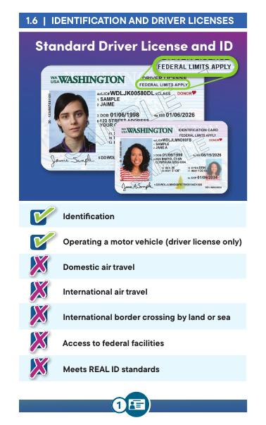
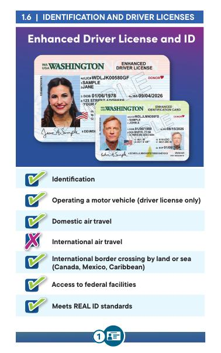
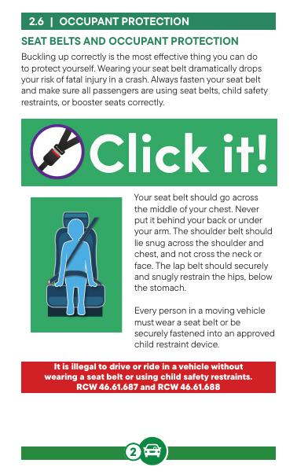
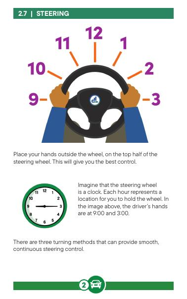
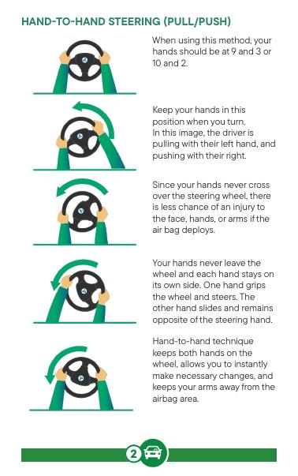
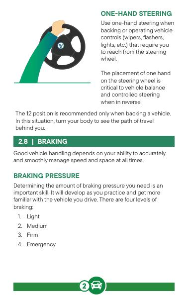
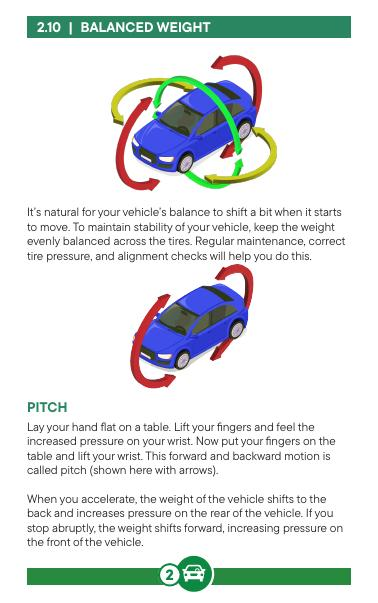
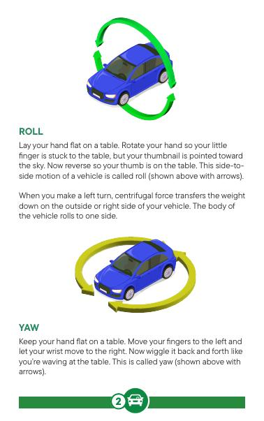
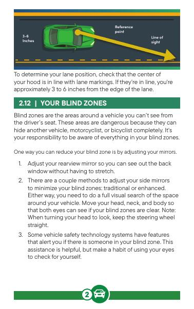
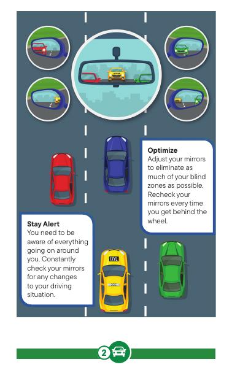
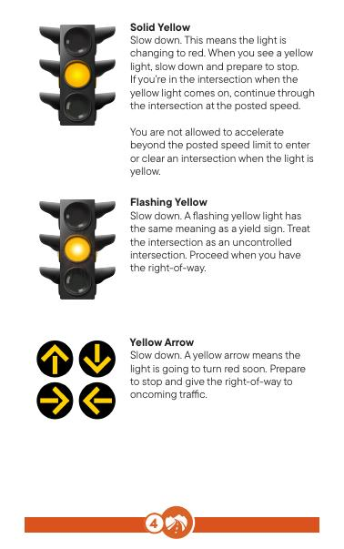
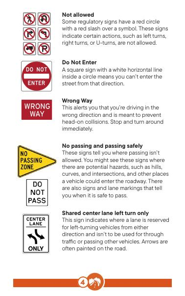
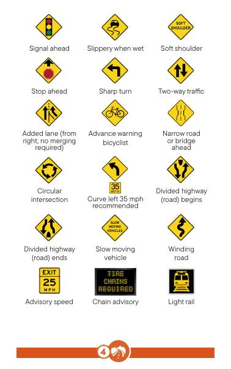
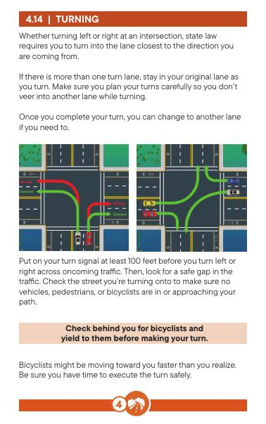
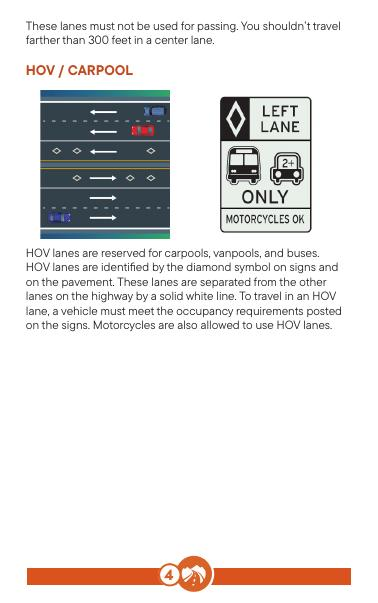
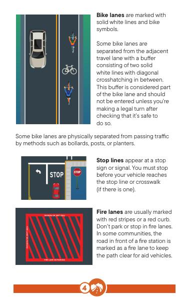
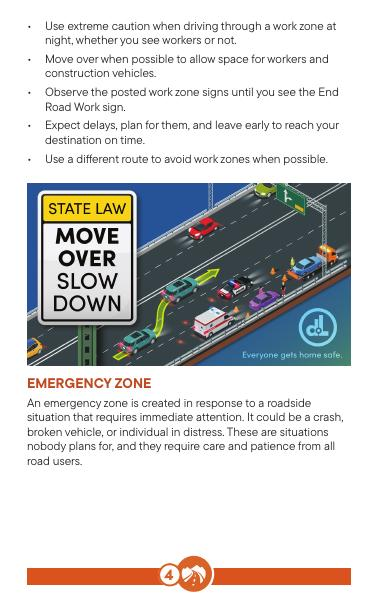
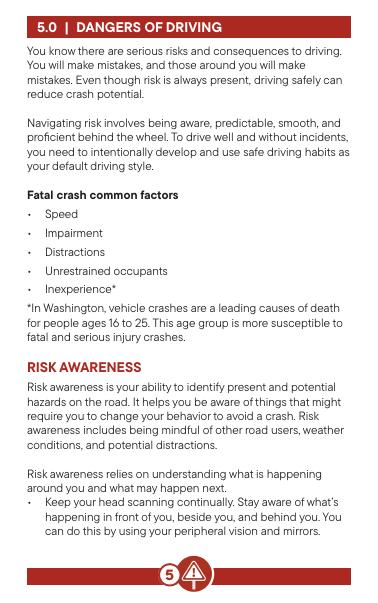
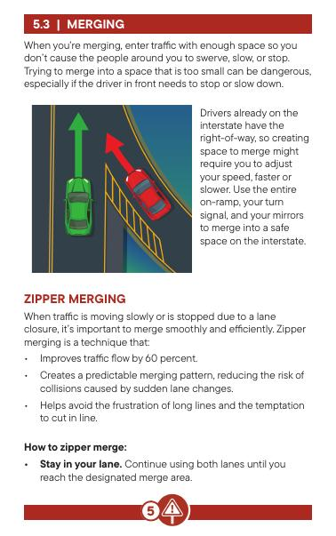
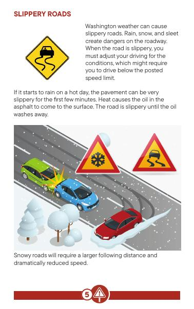
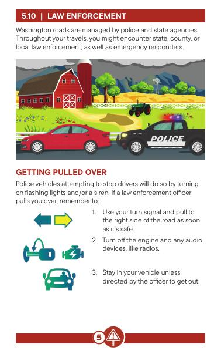